生成时间：2026-06-15T11:30:26+08:00
今日保留论文数：8
内容构成：今日新文 8 篇；补充推荐 0 篇；经典旧文精读 0 篇
高能天体物理重点
1. Exploring the nature of Galactic unassociated sources detected by the Fermi-LAT
- 来源：arXiv / astro-ph.HE
- 链接：https://arxiv.org/abs/2606.14244v1
- 作者：F. Acero, A. Acharyya, A. Adelfio, M. Ajello, E. Aviano, L. Baldini, J. Ballet, C. Bartolini
- 评分：novelty 8/10，importance 9/10，relevance 10/10，final 10.00/10
- 推荐理由：Fermi-LAT银河面未关联伽马射线源的大样本研究，识别软谱未关联源群、机器学习分类、弥散发射误建模与新源类可能性；伽马射线天文核心主题，优先阅读。
中文题目：探索费米 \(\gamma\) 射线望远镜在银河平面附近未关联源的本质
做了什么：这篇文章系统研究 \(\rm Fermi\)-LAT 第四源表 \(4\rm FGL\)-DR4 中靠近银河平面、尚未找到多波段对应体的 \(\gamma\) 射线源。这些源占整个源表约 \(16\%\)，其中一大批“软银河未关联源”表现出已知 \(\gamma\) 射线源族群难以解释的性质：谱很软、有明显弯曲、能量输出峰值低于 \(1\,{\rm GeV}\)，并且银河纬度分布同时有很窄的“尖峰”和较宽的“肩部”。作者用机器学习分类、亮源对应体搜索、候选新源族评估、弥散发射团块蒙特卡洛模拟，以及 \(^{13}{\rm CO}\) 气体数据交叉检查，试图判断这些源是真实点源族群还是银河弥散背景建模残差。结论是：恒星形成区最多只能解释约 \(10\%\)；弥散发射建模缺陷仍是相当合理的解释，但需要特定空间尺度的团块假设；一个新的银河 \(\gamma\) 射线源族也还不能排除。
为什么重要：银河平面是 \(\gamma\) 射线天文学里最难的区域：真实点源、宇宙线与气体相互作用产生的弥散辐射、仪器点扩散函数、源表检出阈值和背景模型误差全部纠缠在一起。若这些软未关联源是真实天体，它们可能代表一个此前未被识别的银河高能源族；若它们主要是弥散背景残差，则会影响费米源表中大量低纬源的物理解释，并影响暗物质、宇宙线传播、超新星遗迹和脉冲星族群研究中的背景估计。
理论 / 观测 / 仪器方法价值：这项工作的价值不在于给出一个单一答案，而在于把一个长期存在的源表问题拆成了可检验的几类假设：已知源族误分类、新源族、亮源多波段对应体、气体示踪不完备、弥散模型团块残差。它为后续观测和建模给出明确诊断量：低能谱峰、谱曲率、银河纬度双组分分布、与恒星形成区或分子气体的空间相关性、以及残差团块的角尺度要求。
为什么应该关注：如果你使用 \(4\rm FGL\) 做银河源统计、候选脉冲星筛选、超新星遗迹/脉冲星风云关联、暗物质间接探测或银河弥散发射建模，这篇文章都值得看。它提醒我们：源表里的“未关联点源”并不必然对应真实紧致天体；在低纬、低能、软谱区域，点源检出可能是背景模型、气体模板和仪器响应共同作用的产物。
展开详细解读：文章讲解、背景、理论、重点章节、图表与相关工作
文章详细讲解
科学问题：\(\rm Fermi\)-LAT 源表中仍有大量未关联源，尤其在 \(|b|<10^\circ\) 的银河平面附近。这一区域的困难在于弥散 \(\gamma\) 射线背景最强，而源表构建通常要在弥散模板上叠加点源或扩展源来提高似然。本文关注的核心不是单个未关联源是谁，而是一个整体族群是否存在：这些低纬未关联源中有一批软谱、强曲率、低峰值源，其统计性质不像已知脉冲星、活动星系核、超新星遗迹、脉冲星风云或双星类源。
作者怎么做：文章首先从 \(4\rm FGL\)-DR4 中选取靠近银河面的未关联源，识别出所谓软银河未关联源，即 \({\rm SGU}\)。他们比较这些源的光谱参数、能谱峰值、曲率、变源性和银河纬度分布，并使用机器学习分类方法检验其是否会被归入已有 \(\gamma\) 射线源类。随后，作者对最亮的 \(175\) 个源开展较细的对应体搜索，检查多波段天体、已知恒星形成区、星团、超新星遗迹、脉冲星、分子云或其他银河结构是否能解释它们。
关键结果：最突出的结果是，\({\rm SGU}\) 具有一组很一致但异常的统计特征：谱形陡且弯曲，谱能量分布通常在 \(<1\,{\rm GeV}\) 处达到峰值；纬度分布不是简单的薄盘，而是由窄的“spike”和更宽的“shoulder”组成。机器学习分类也支持它们不自然地落入已知源类。作者评估若干新源族可能性，发现恒星形成区能解释的比例最高，但仍至多约 \(10\%\)，远不能解释整体。亮源对应体搜索找到若干合理个例，却没有揭示统一起源。
局限和下一步：弥散发射残差是本文最谨慎也最重要的结论方向。作者通过蒙特卡洛模拟说明，如果弥散背景中存在未被模板描述的团块，并且这些团块的空间尺度满足某种人为设定条件，则能够重现 \({\rm SGU}\) 的软弯曲光谱。文章还用 \(^{13}{\rm CO}\) \({\rm MOPRA}\) 数据探索是否存在 \(^{12}{\rm CO}\) 没有充分示踪的气体成分，但结果不决定性。下一步需要更高分辨率的气体示踪、更灵活的银河弥散模型、源表重构级别的端到端模拟，以及对候选区域的多波段深度观测。
关键结果是怎么做出来的
数据和样本选择的关键在于低纬未关联源。作者从 (4{
m FGL})-DR4 出发，选取 \(|b|<10^\circ\) 的未关联源；这些源占全源表约 \(16\%\)。论文把其中具有软谱、显著曲率和低能峰值的一大批对象称为 \({\rm SGU}\)。读者要注意这里的“未关联”不是“未探测到其他波段辐射”，而是源表级别没有可靠归属；在银河平面，关联失败可能来自拥挤、消光、弥散背景和定位误差。
统计证据主要来自整体分布而非单一源的高显著性发现。作者比较 \({\rm SGU}\) 与已知 \(\gamma\) 射线源类在光谱斜率、曲率、能量通量、变源性和银河坐标分布上的位置，并使用机器学习分类检验它们是否会被归入已知类别。机器学习结果的意义是：即使用源表中常规特征训练分类器，这批源也不是简单地像“暗弱脉冲星”或“低纬活动星系核”。不过分类器只证明特征空间异常，不自动证明新天体族存在。
最强的图表证据应来自三类诊断：第一，能谱参数空间中 \({\rm SGU}\) 与已知源族分离，特别是低于 \(1\,{\rm GeV}\) 的谱峰和强曲率；第二，银河纬度分布呈现窄“spike”和宽“shoulder”的双组分结构，而不是单一薄盘；第三，蒙特卡洛团块模拟可以在特定角尺度条件下产生类似源表点源和类似谱形。这些图共同构成论文的证据链：异常是真实统计现象，但起源未必是真实点源。
作者对 \(175\) 个最亮源的对应体搜索是稳健性检查的重要部分。若这些源属于某个普通源类，亮源应更容易找到多波段对应体或已知天体环境。结果是确实有一些 plausible counterparts，但没有一个类别能自然覆盖整个样本。恒星形成区是最有希望的候选之一，然而估计贡献最多约 \(10\%\)，说明它只能解释尾部而非主体。
系统误差的核心是银河弥散模型。源表似然分析会把模板没有解释的局部残差吸收到点源项中，尤其在点扩散函数较宽的低能段更明显。作者用模拟检验弥散团块能否伪装成软点源，发现可行但需要对团块空间延展作额外假设。使用 \(^{13}{\rm CO}\) \({\rm MOPRA}\) 数据检查未被 \(^{12}{\rm CO}\) 追踪的气体，是针对这一系统误差的物理检验；但覆盖范围、气体激发、光学深度和宇宙线密度变化都可能削弱结论。
展开背景、理论、公式、模型、章节和图表导读
背景知识
研究对象是 \(\rm Fermi\)-LAT 源表中的低纬未关联 \(\gamma\) 射线源。\(\rm Fermi\)-LAT 自 \(2008\) 年以来在 \(\rm MeV\)-\(\rm GeV\) 能段积累了全天巡天数据，(4{
m FGL}) 及其数据发布版本是当前高能天体统计研究的基础资源。源表中的每个条目来自似然检出，而“关联”通常依赖空间重合、变源性、光谱特征和多波段信息；未关联源既可能是真天体，也可能是模型残差。
历史上，未关联 \(\rm Fermi\) 源一直是寻找新脉冲星、毫秒脉冲星、暗弱活动星系核、银河双星、超新星遗迹和暗物质亚晕候选体的重要入口。高纬未关联源中有大量后来被确认为活动星系核或毫秒脉冲星；低纬未关联源更复杂，因为银河盘面有强烈气体相关弥散辐射和大量源拥挤。这篇论文关注的正是低纬未关联源中一个性质相当集中的子群。
观测背景的关键是银河弥散 \(\gamma\) 射线。宇宙线质子与星际气体碰撞产生 \(\pi^0\) 衰变 \(\gamma\) 射线，宇宙线电子通过逆康普顿散射和轫致辐射产生连续辐射。这些过程与气体柱密度、辐射场、磁场和宇宙线分布有关。低纬方向的弥散光子数远多于许多点源光子数，因此一个不完美的弥散模板可以制造显著的局部残差。
为什么现在值得重新看？一方面，(4{
m FGL})-DR4 使用更长时间的数据，弱源统计更好，源表更完整；另一方面，低能段系统误差随着样本扩大变得更突出。过去个别未关联源可以逐一跟进，但当一个占比很高、性质相似的群体出现时，就必须问它是不是源表生成过程本身的产物。
常见误区包括：第一，把“未关联源”等同于“新天体”。实际上未关联只是缺少可靠对应体。第二，把源表点源等同于天空中的点状物理源。似然分析中的点源可能是在给定模型下吸收残差的有效成分。第三，认为机器学习分类能直接给出物理本质。机器学习能指出它们不像训练集中已知类别，但不能区分“新源族”和“训练集未包含的系统误差”。
基础理论 / 方法脉络
从物理图像看，银河 \(\gamma\) 射线天空由离散源和弥散背景叠加。离散源可以是脉冲星、脉冲星风云、超新星遗迹、双星系统或背景活动星系核；弥散背景主要来自宇宙线与星际介质和辐射场的相互作用。在银河平面附近，气体柱密度和恒星辐射场强，弥散背景不仅亮，而且具有复杂的空间结构。
本文最重要的观测量是源表给出的光谱形状、曲率、能量通量、显著性、空间位置和变源性。软谱且弯曲的源可以用对数抛物线或带截断的谱形描述；如果 \(\nu F_\nu\) 或 \(E^2 dN/dE\) 峰值低于 \(1\,{\rm GeV}\)，它会与典型脉冲星或硬谱活动星系核有区别。但低能段也是 \(\rm Fermi\)-LAT 点扩散函数更宽、弥散模型误差更敏感的区域。
源检出通常基于泊松似然。给定天空模型，某个能量和空间 bin 中的期望计数来自点源、扩展源、各向同性背景和银河弥散模板。加入一个候选点源后，如果似然显著提高，它会进入源表；但如果弥散模板遗漏了一个气体团块或宇宙线密度增强区，该残差也可能被点源项吸收。因此本文把“真实源族”与“弥散团块伪源”作为两条主要解释线索。
机器学习在本文中扮演特征空间诊断工具。它并不是用图像直接识别天体，而是利用源表特征，例如谱指数、曲率、通量、变源性、纬度等，把未关联源与已知类比较。若 \({\rm SGU}\) 在多个分类器或特征投影中都远离已知类，说明它们不能简单当作普通源类的暗弱延伸。
主要退化关系包括：软谱点源与低能弥散残差的退化，源空间延展与点扩散函数的退化，气体柱密度误差与宇宙线密度变化的退化，以及多个暗弱点源和一个扩展团块之间的退化。这些退化决定了为什么单靠源表参数很难给出最终物理解释。
公式与推导
第一步，从计数观测的基本模型开始。对能量 bin \(k\) 和天空像素 \(p\)，观测计数 \(n_{pk}\) 通常服从泊松分布：
这里 \(\mu_{pk}\) 是模型期望计数，包含点源、银河弥散、各向同性背景和仪器响应。这个式子是源检出、显著性和模型比较的统计基础。
第二步，把天空强度通过仪器响应映射为计数：
其中 \(I(E,\Omega)\) 是光子强度，\(A_{\rm eff}\) 是有效面积，\(T\) 是曝光时间或曝光量，\(R_p\) 包括点扩散函数和能量响应对像素 \(p\) 的投影。低能段 \(R_p\) 更宽，所以弥散残差更容易看起来像软点源。
第三步，天空模型可以写成点源和模板的和：
这里 \(S_i(E)\) 是第 \(i\) 个点源光谱，\(T_j(\Omega)\) 是气体、逆康普顿或其他弥散模板，\(a_j(E)\) 是能量依赖归一化，\(I_{\rm iso}\) 是各向同性成分。若真实天空有未建模模板 \(T_{\rm miss}\)，它可能被某些 \(S_i\) 吸收。
第四步，软弯曲谱常用对数抛物线表征：
这里 \(N_0\) 是归一化，\(E_b\) 是参考能量，\(\alpha\) 是局部谱斜率，\(\beta\) 描述曲率。本文所谓低于 \(1\,{\rm GeV}\) 的谱峰，可由 \(E^2 dN/dE\) 的极值估计。
第五步，对上式求 \(E^2dN/dE\) 的峰值。令 \(x=\ln(E/E_b)\)，则
极值条件给出
当 \(E_{\rm peak}<1\,{\rm GeV}\) 且 \(\beta\) 较大时，源会表现为低能软弯曲对象，正是 \({\rm SGU}\) 的核心光谱特征。
第六步，源检出常用测试统计量：
这里 \(\mathcal{L}\) 是泊松似然，\(\theta_{\rm src}\) 是源参数，\(\theta_{\rm bkg}\) 是背景参数，帽号表示最大似然估计。在理想正则条件下，\({\rm TS}\) 可近似转化为显著性；但在低纬弥散系统误差主导时，这个近似会过于乐观。
第七步，若存在未建模弥散团块，其强度可写成
其中 \(q_\gamma(E)\) 是单位氢原子的 \(\gamma\) 射线发射率，\(N_{\rm H,cl}\) 是遗漏气体柱密度。若 \(N_{\rm H,cl}\) 的角尺度接近或小于相应能段的点扩散函数，源表拟合可能把 \(I_{\rm cl}\) 解释为点源。
第八步，气体示踪的简化关系是
其中 \(W(^{12}{\rm CO})\) 是 \(^{12}{\rm CO}\) 线积分强度，\(X_{\rm CO}\) 是转换因子。如果 \(^{12}{\rm CO}\) 光学厚、激发条件复杂或存在“暗气体”，则该关系会漏掉部分 \({\rm H}_2\)。本文检查 \(^{13}{\rm CO}\) 数据，就是在测试 \(N_{\rm H,cl}\) 是否可能来自常规模板未计入的分子气体。
第九步，空间分布可用双组分纬度模型概括：
这里 \(b\) 是银河纬度，\(\sigma_1\) 对应窄“spike”，\(\sigma_2\) 对应宽“shoulder”，\(f\) 是窄组分权重。若这种双组分结构显著优于单组分模型，就说明 \({\rm SGU}\) 的空间分布包含额外信息，不能只看单源光谱。
模型拟合 / 应用方法
这类研究的拟合对象主要有三层。第一层是源表构建时的空间-能谱似然拟合，即在给定银河弥散模型和仪器响应下，为每个候选源估计位置、通量、谱指数、曲率和检出 \({\rm TS}\)。第二层是本文对源族性质的统计拟合，例如光谱参数分布、纬度分布的单组分或双组分模型、以及机器学习分类器在特征空间中的判别边界。第三层是弥散残差假说下的蒙特卡洛模拟，把未建模团块注入或生成在弥散背景上，看源检测流程是否会产生类似 \({\rm SGU}\) 的伪源。
参数估计中最重要的不是单个源的最佳拟合值，而是群体分布是否稳健。例如，\(E_{\rm peak}\)、谱曲率、纬度宽度和变源性分布需要与已知源族比较。机器学习分类的输入特征若包含与选择函数强相关的量，可能放大源表阈值效应；若训练集中已知类在银河平面不完整，也可能导致分类器把低纬系统误差误认为新类。
残差诊断应重点看拟合后 residual map，而不仅是源表参数。若 \({\rm SGU}\) 主要来自弥散模型错误，它们应与气体模板残差、分子云边界、恒星形成复合体、宇宙线梯度或低能点扩散函数变化相关。相反，若是真实源族，则在更高角分辨率、更长曝光或独立波段中应出现相干对应体，且源位置、谱形和空间分布应能被某个天体族群模型自然解释。
主要退化包括光谱曲率与背景谱形误差的退化，点源通量与附近弥散模板归一化的退化，空间扩展与多个点源的退化，以及气体柱密度与 \(\gamma\) 射线发射率 \(q_\gamma\) 的退化。在低纬弱源附近，统计误差往往不是主导项，系统误差会改变是否检出、源位置和谱形。
实际应用中，读者若要使用这些源，应避免把 \({\rm SGU}\) 当成普通点源样本直接做族群推断。更合适的做法是：对涉及银河平面软源的分析加入弥散模型系统误差包络；分别使用不同气体模板和背景模型重复拟合；检查候选源在不同能段、不同事件类型和不同点扩散函数分位中的稳定性；对于多波段对应体关联，优先要求位置、距离、能量学和环境同时自洽。
重点章节 / 结果段落怎么读
一、样本定义与源表特征段落应首先阅读。这里决定了什么叫低纬未关联源、什么叫 \({\rm SGU}\)，以及样本是否被光谱软度、曲率或显著性阈值人为塑形。读者要特别留意 \(|b|<10^\circ\) 的选择、源表版本、未关联定义和亮源子样本。
二、机器学习分类段落是判断“它们不像已知源类”的核心。不要只看分类准确率，应看训练集包含哪些已知类、输入特征是否受银河纬度或检出阈值影响、交叉验证如何做，以及 \({\rm SGU}\) 在特征空间中究竟远离哪些类别。
三、纬度分布和源群集分析是本文最有物理指向性的结果之一。窄“spike”和宽“shoulder”可能对应不同的物理或系统来源：薄盘真实源族、气体相关残差、局部结构或选择效应。读者应看作者是否比较了单组分和双组分模型，以及是否评估曝光和背景强度随纬度变化的影响。
四、对应体搜索和候选源族讨论段落要按“能解释多少比例”来读，而不是按“是否存在个例”来读。恒星形成区、星团、超新星遗迹或分子云关联都可能解释少数亮源，但本文关键结论是没有一个普通候选类能解释总体，恒星形成区贡献上限约为 \(10\%\)。
五、弥散团块模拟与 \(^{13}{\rm CO}\) 检查是最值得细读的方法部分。它们直接关系到 \({\rm SGU}\) 是否可能是源表伪源。读者应关注模拟团块的角尺度、谱形假设、注入位置、源检测阈值，以及 \(^{13}{\rm CO}\) 数据覆盖与灵敏度是否足以排除暗气体解释。
建议重点查看的图表
-
全体低纬未关联源与 \({\rm SGU}\) 的银河坐标分布图：看源是否沿银道面高度集中，是否有明显经度聚集或与已知星形成复合体重合。
-
光谱参数或 \(E_{\rm peak}\)-曲率图：看 \({\rm SGU}\) 是否形成独立团簇，是否与脉冲星、活动星系核、超新星遗迹等已知类分离。
-
银河纬度直方图或模型拟合图：重点看窄“spike”和宽“shoulder”的相对权重、误差条、单组分模型残差，以及是否有选择函数修正。
-
机器学习分类混淆矩阵或特征投影图：看训练集已知类的分类可靠性，以及 \({\rm SGU}\) 被分类为已知源类的概率是否系统性低。
-
\(175\) 个最亮源的对应体汇总表：看对应体类别、角距离、可信度等级、是否有距离或能量学支持，而不只是空间重合。
-
弥散团块蒙特卡洛模拟结果图：看模拟伪源的谱形、通量、曲率和纬度分布是否同时复现观测，而不是只复现其中一项。
-
\(^{13}{\rm CO}\) 或气体模板交叉图：看 \({\rm SGU}\) 是否与未被 \(^{12}{\rm CO}\) 充分示踪的气体增强区相关，以及非相关区域是否同样存在源。
关键图表逐图导读
图 1：建议把它当作样本地图来读。横轴通常应是银河经度 \(l\)，纵轴是银河纬度 \(b\)，不同符号或颜色区分已关联源、普通未关联源和 \({\rm SGU}\)。主要看 \({\rm SGU}\) 是否仅仅贴着 \(b=0^\circ\)，还是还有一个向较高 \(|b|\) 延伸的肩部。读图陷阱是曝光和背景亮度也随天区变化，不能把点密度直接等同于天体空间密度。
图 2：若论文给出光谱能量分布或谱参数散点图，应重点看 \(E^2dN/dE\) 的峰值位置、曲率和误差。横轴可能是能量或谱指数，纵轴可能是能量通量、曲率或 \(E_{\rm peak}\)。数据点若在 \(<1\,{\rm GeV}\) 集中达到峰值，说明它们不是典型硬谱高能源。陷阱是低能段系统误差和点扩散函数更差，低峰值本身也可能是背景误建模的产物。
图 3：纬度分布图应关注模型线。若图中有单高斯、双高斯或经验模板拟合，读者要看双组分是否显著改善残差，以及窄组分和宽组分的宽度是否有清楚物理尺度。若误差条只反映泊松误差而没有选择函数或背景系统误差，双组分显著性可能被高估。
图 4：机器学习结果图可能是分类概率直方图、二维嵌入图或混淆矩阵。读者应看 \({\rm SGU}\) 是否被多个分类器一致判为“非典型”，以及已知类之间是否本来就混淆严重。若训练集中低纬弱源不足，分类器的“异常”标签可能反映训练域外样本。
图 5：对应体搜索图或表应逐列读：源名、定位误差椭圆、候选对应体、角分离、类别、物理可信度。空间重合只是第一步；如果候选是恒星形成区或分子云，还要看距离、气体质量和所需 \(\gamma\) 射线 luminosity 是否合理。
图 6：蒙特卡洛模拟图是判定弥散残差假说的关键。横轴和纵轴可能展示模拟伪源与真实 \({\rm SGU}\) 的谱曲率、通量或 \(E_{\rm peak}\) 分布。若模型只在特定团块角尺度下成功，说明解释可行但不自然；若同时复现纬度分布和光谱分布，则弥散解释更强。
图 7：气体相关图应看 \(^{13}{\rm CO}\) 强度、\(^{12}{\rm CO}\) 模板残差和 \({\rm SGU}\) 位置是否重合。陷阱是 \(^{13}{\rm CO}\) 覆盖不完整、速度距离转换有歧义、气体光学深度和激发温度会影响柱密度估计，所以“不相关”不等于排除气体。
论文原图 / 可嵌入图片
Fig02
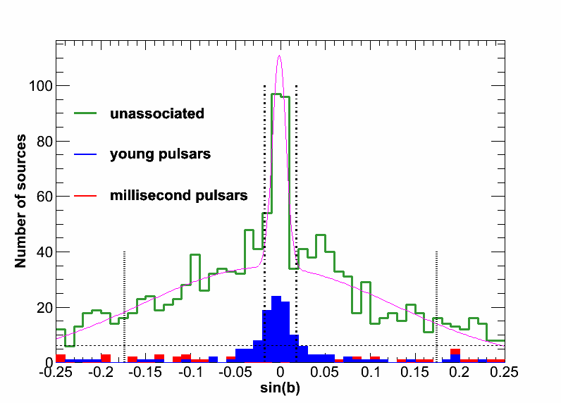
图注：Comparison between the Galactic-latitude distributions for unassociated sources, PSRs, and MSPs. The dashed horizontalline represents the average source number at latitudes~$>30^\circ$. The dashdotted and dotted vertical lines represent the $|b|=1^\circ$ and $|b|=10^\circ$ limits, respectively. The magenta curve corresponds to a two-gaussian decomposition of the unassociated-source distribution. The mean sin(b) values of the broad and narrow components are $(-1.5\pm0.5)\times10^{-2}$ and $(-1.4\pm1.1)\times10^{-3}$, respectively.
对应解读：对应“建议重点查看的图表”第3项和“关键图表逐图导读”图3：银河纬度直方图/双组分模型拟合。
入选理由：该图直接展示低纬未关联源与PSR、MSP的银河纬度分布对比，并给出未关联源分布的双高斯分解，是检验窄“spike”和宽“shoulder”是否真实存在的核心证据。图中还标出 |b|=1° 与 |b|=10° 边界，正好对应日报中强调的组分划分和模型线判读。
来源与置信度：\(arxiv_source\)；high；\(arxiv_source\) / main.tex:figure[2]
Fig08
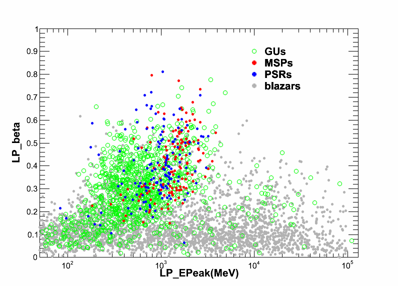
图注：Spectral-curvature parameter beta (half the curvature) plotted versus LP_EPeak for different source populations. No condition on the significance of the spectral curvature has been imposed.
对应解读：对应“建议重点查看的图表”第2项和“关键图表逐图导读”图2：\(LP_EPeak\)-谱曲率参数空间中的源族分离。
入选理由：该图把谱曲率 beta 与 \(LP_EPeak\) 放在同一参数平面上比较不同源族，最能支撑日报中关于SGU具有低峰值、强曲率、不同于已知γ射线源类的解读。相比单独的EPeak直方图，它同时呈现两个关键诊断量，更适合判断SGU是否形成独立参数团簇。
来源与置信度：\(arxiv_source\)；high；\(arxiv_source\) / main.tex:figure[8]
Fig11
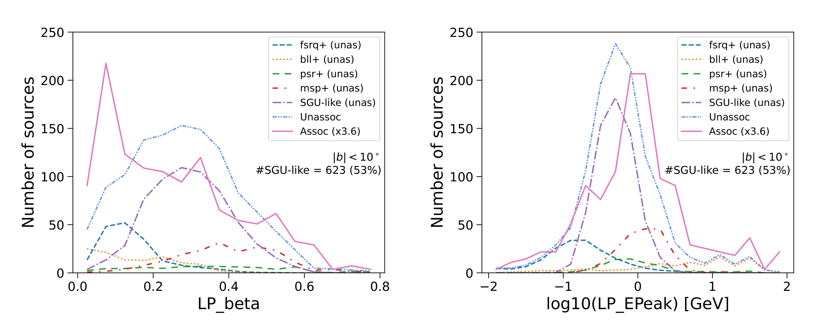
图注：Expected contributions of different source classes to the unassociated sources for $|b| < 10^\circ$, for the LP_beta distribution (left) and the log10(LP_EPeak) distribution (right). The contribution of a new source component modeled as a Gaussian distribution in the LP_beta and log10(LP_EPeak) variables is shown by the purple dash-dotted line (labeled as SGU-like sources). The overall distribution of unassociated plus unk sources is shown by the light blue dash-dot-dotted line. The distribution of associated sources within $|b| < 10^\circ$ (without bcu and spp sources) scaled by 3.6 to match the total number of unassociated and unk sources in this range of latitudes is shown by the solid pink line.
对应解读：对应“模型拟合”中源族性质统计拟合，以及“关键结果”里已知源类无法解释SGU整体分布的论述。
入选理由：该图展示不同已知源类对低纬未关联源在 \(LP_beta\) 与 log10(LP_EPeak) 分布中的预期贡献，并显式加入SGU-like新成分模型。它比一般散点图更直接说明：仅靠已知类缩放难以重现未关联源总体谱参数分布，因此需要额外SGU-like成分或系统误差解释。
来源与置信度：\(arxiv_source\)；high；\(arxiv_source\) / main.tex:figure[11]
Fig12
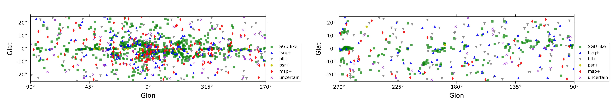
图注：Positions of unassociated sources with predicted classes in the prior shift model. Sources are attributed to a class if the corresponding class probability is larger than 0.5, otherwise the class is considered uncertain.
对应解读：对应“建议重点查看的图表”第4项和“关键图表逐图导读”图4：机器学习分类结果。
入选理由：该图给出prior shift模型下未关联源的预测类别位置分布，并以概率阈值区分确定分类与不确定分类，可用于检查SGU是否被稳定归入已知类，还是大量落入不确定或异常区域。它直接支撑日报中关于机器学习分类显示SGU不自然匹配已知源类的讨论。
来源与置信度：\(arxiv_source\)；high；\(arxiv_source\) / main.tex:figure[12]
Fig10
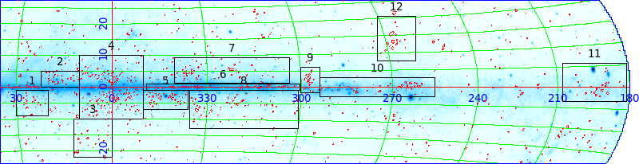
图注：Sky map (Hammer-Aitoff projection, Galactic coordinates) highlighting the different regions with clusters of GUs discussed in the text. The 95\% error ellipses of the 4FGL-DR4 unassociated (plus SPP and UNK) sources are depicted in red. The background depicts the $E>1$ GeV intensity in log scale.
对应解读：对应“建议重点查看的图表”第1项和“关键图表逐图导读”图1：低纬未关联源/SGU的银河坐标分布与聚集区域。
入选理由：该全天Hammer-Aitoff银河坐标图标出未关联源95%误差椭圆和文中讨论的GU聚集区域，背景为 E>1 GeV 强度。它最适合作为样本空间分布总览，帮助读者判断源是否沿银道面集中、是否存在经度聚集，以及这些聚集是否可能与弥散背景结构相关。
来源与置信度：\(arxiv_source\)；high；\(arxiv_source\) / main.tex:figure[10]
Fig05
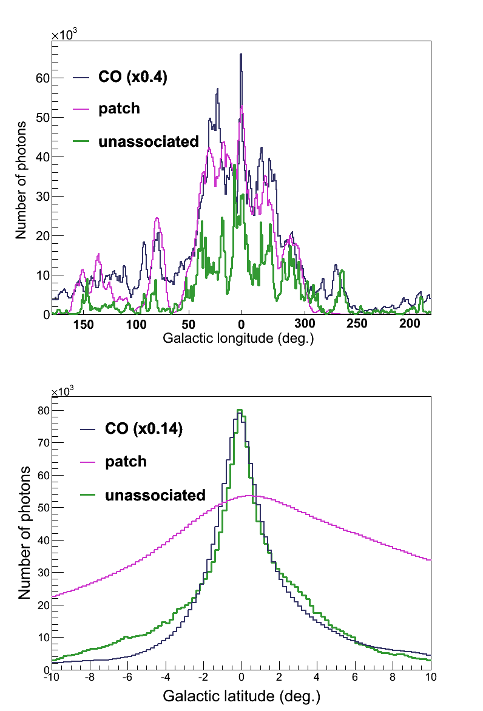
图注：Top: Galactic-longitude distributions of the photons from unassociated sources estimated by the 4FGL analysis model in the $|b|<10^\circ$ area (black histogram). The blue (red) histogram corresponds to the photon counts predicted for the IEM patch (CO) component in the same area. The CO component has been rescaled to facilitate the comparison. Bottom: same as top, for the Galactic latitude.
对应解读：对应“建议重点查看的图表”第7项和“模型拟合”中弥散发射残差、CO模板相关性的讨论。
入选理由：该图比较低纬未关联源模型预测光子在经度和纬度上的分布与IEM patch、CO分量的分布，直接关联到弥散背景或气体模板误建模假说。虽然它不是13CO专门图，也不是完整蒙特卡洛结果，但在候选图中最接近日报强调的气体/弥散模板交叉诊断。
来源与置信度：\(arxiv_source\)；high；\(arxiv_source\) / main.tex:figure[5]
强相关工作
这篇工作与 \(\rm Fermi\)-LAT 源表和未关联源分类研究直接相关。应把它放在 (4{
m FGL}) 系列源表、LAT 仪器性能论文、银河弥散发射模型、以及未关联源机器学习分类工作的背景下阅读。检索关键词可用 “Fermi LAT unassociated sources Galactic plane”, “4FGL DR4 unassociated”, “soft Galactic unassociated sources”, “Fermi diffuse emission residuals”, “gamma-ray source classification machine learning”。
它也与银河弥散 \(\gamma\) 射线和气体示踪问题有关。若 \({\rm SGU}\) 是弥散残差，相关文献应包括 \(\pi^0\) 衰变气体相关辐射、\(X_{\rm CO}\) 转换因子、暗气体、\(^{13}{\rm CO}\) 分子云测绘和宇宙线传播模型。若它们是真实源族，则可与星形成区 \(\gamma\) 射线、年轻星团、超新星遗迹和脉冲星族群研究比较。检索关键词可用 “gamma rays star forming regions”, “Fermi molecular clouds dark gas”, “cosmic ray interactions interstellar gas”, “unmodeled diffuse emission Fermi LAT”。
需要注意，同类研究中有一条持续张力：源表分析倾向于用增加点源改善似然，而弥散建模研究倾向于把部分结构解释为模板不完备。本文没有完全解决这条张力，但把它具体化为 \({\rm SGU}\) 的谱形、纬度分布和团块角尺度问题。
同一事件 / 同类源线索：
- https://arxiv.org/abs/2606.14244
- https://arxiv.org/pdf/2606.14244
- https://fermi.gsfc.nasa.gov/ssc/data/access/lat/14yr_catalog/
- https://fermi.gsfc.nasa.gov/ssc/data/access/lat/BackgroundModels.html
相似工作：
基础理论 / 方法工作：
相反观点 / 张力线索：
2. Spectral Softenings, Composition Bump, and Anisotropy Transition: A Consistent Picture of Cosmic-Ray Origin Below the Knee
- 来源：arXiv / astro-ph.HE
- 链接：https://arxiv.org/abs/2606.14501v1
- 作者：Xulin Dong, Yuhua Yao, Shuwang Cui, Yiqing Guo
- 评分：novelty 7/10，importance 8/10，relevance 9/10，final 9.05/10
- 推荐理由：利用DAMPE组分谱、LHAASO成分信息和各向异性统一解释膝区以下宇宙线起源，直接涉及宇宙线传播和LHAASO可检验预言，主题高度相关且值得阅读。
中文题目：膝区以下宇宙线起源的一致图像：谱软化、成分凸起与各向异性转变
做了什么：这篇文章把 DAMPE 对碳、氧、铁等单元素宇宙线能谱的精确测量纳入同一框架，重建膝区以下平均对数质量数 \(\langle \ln A\rangle\) 的能量演化，并将其与 LHAASO 在更高能区的成分结果连接起来。作者发现 \(\langle \ln A\rangle\) 不是简单单调变重或变轻，而是出现一个明显的“凸起”结构；他们用空间依赖传播模型加一个附近源贡献，同时解释总谱、单元素谱、质量组成和大尺度各向异性。核心结论是：膝区以下银河宇宙线可能不是单一稳态源族的产物，而是传统银河源和附近源共同贡献的结果，未来 LHAASO 的分成分各向异性测量可以直接检验这一图像。
为什么重要：宇宙线膝区以下长期存在三个互相关联但常被分开处理的问题：单元素谱为什么在 \(\mathrm{TeV}\) 到 \(\mathrm{PeV}\) 区间出现硬化或软化，质量组成如何过渡，以及各向异性的相位和振幅为什么随能量变化。本文的重要性在于把这三类观测量放进一个共同约束：如果一个模型只拟合能谱而不能解释 \(\langle \ln A\rangle\) 和各向异性，它就不是完整的起源模型。
理论 / 观测 / 仪器方法价值：对理论建模而言，本文强调源项、传播系数空间分布和局部源不能任意调参，而要被单元素谱、平均质量和各向异性同时限制。对观测而言，它把 DAMPE 的直接探测成分谱和 LHAASO 的地面阵列成分信息连接起来，为未来分成分各向异性观测给出可检验预言。对方法而言，文章展示了如何由元素分辨谱构造 \(\langle \ln A\rangle\)，并用它作为连接直接探测和间接探测能区的诊断量。
为什么应该关注：如果你关心宇宙线起源，这篇文章值得看，因为它没有只讨论某个单独的谱折断，而是试图回答“膝区以下到底有几个源族在起作用”。如果附近源真的在 \(\mathrm{TeV}\) 到 \(\mathrm{PeV}\) 区间主导某些成分，那么宇宙线各向异性的相位、振幅以及不同核素的转变能量都应出现可测的协同变化；这正是未来 LHAASO、DAMPE 后续分析以及 HERD 等实验可以检验的地方。
展开详细解读：文章讲解、背景、理论、重点章节、图表与相关工作
文章详细讲解
科学问题：膝区以下宇宙线的“常规图像”通常认为银河系内大量超新星遗迹或类似源连续注入带电粒子，粒子经磁湍流扩散传播到地球，形成近似幂律能谱。但近年来直接探测实验发现，质子、氦以及更重核素的能谱并非单一幂律；DAMPE 对碳、氧、铁等单元素谱的高精度测量显示，不同成分在膝区以下存在可辨认的谱软化。与此同时，地面阵列对质量组成和大尺度各向异性的结果也显示，简单单源族、单传播律模型很难同时解释所有现象。本文要解决的核心问题是：这些谱软化、质量组成结构和各向异性变化是否可以被同一个物理图像统一解释。
作者怎么做：文章首先利用 DAMPE 已发表或报告的单元素能谱，尤其是碳、氧、铁等关键核素，构造更完整的平均对数质量数 \(\langle \ln A\rangle\) 随能量的分布。这个量本质上是用各元素通量作为权重，对核质量数的对数取平均，因此比单个元素谱更直接反映总宇宙线成分的轻重变化。随后，作者把这个直接探测能区得到的 \(\langle \ln A\rangle\) 与 LHAASO 在更高能区的成分测量连接起来，寻找是否存在连续过渡或结构性特征。理论部分则采用空间依赖传播模型，并加入附近源贡献，用同一套参数同时拟合或解释能谱、组成和各向异性。
关键结果：作者得到的 \(\langle \ln A\rangle\) 分布可以平滑连接到 LHAASO 的高能结果，但在膝区以下出现一个明显的凸起结构。这个凸起意味着成分在某个能段暂时变重或出现非单调演化，不能简单归因于实验归一化差异。本文解释为从传统银河宇宙线源族向附近源主导区间过渡的标志：常规远距离、近似各向同性源群提供背景，而一个或少数附近源在特定刚度区间对某些元素贡献增强，从而同时改变谱形、平均质量和各向异性。模型还预测，不同质量成分的各向异性相位和振幅转变能量应随刚度缩放而不同。
局限和下一步：由于摘要没有给出全部数值参数和误差预算，读者需要在正文中检查模型是否存在参数退化，例如附近源年龄、距离、注入谱指数、截止刚度和扩散系数空间分布之间的互补调节。另一个限制是 \(\langle \ln A\rangle\) 的构造依赖元素谱覆盖范围和未测元素的插值或模型假设，直接探测与地面阵列的能标系统误差也会影响凸起的形状。下一步最关键的检验不是再单独拟合总谱，而是让 LHAASO 或后续实验给出分成分各向异性：若相位翻转和振幅转变按元素刚度有序出现，将显著支持本文图像；若不同成分表现为同相、同能量转变，则附近源解释会受到压力。
关键结果是怎么做出来的
本文的证据链首先建立在样本选择上：作者没有只取总宇宙线能谱，而是把 DAMPE 的分成分结果纳入，特别是碳、氧、铁等对 \(\langle \ln A\rangle\) 权重敏感的重核谱。对 \(\langle \ln A\rangle\) 而言，氢和氦决定轻端基线，碳氧等中等质量核素决定中间能区结构，铁则对变重趋势和凸起幅度有很强杠杆作用。读者应检查正文中对未完全覆盖元素的处理：是采用直接测量、按元素族外推，还是用传播模型填补。
最重要的结果是 \(\langle \ln A\rangle\) 的凸起。它的统计意义不应只看视觉上是否隆起，而要看相对于单调平滑模型或无附近源模型的改进有多大。理想情况下，正文应给出 \(\chi^2\)、似然比、信息准则或后验预测检验；如果文章主要以模型曲线比较为主，读者应特别关注各实验系统误差带是否足以抹平该结构。支撑这一结论的关键图通常应包括单元素谱拟合图、由这些谱合成的 \(\langle \ln A\rangle\) 图，以及与 LHAASO 高能点的连接图。
模型比较的核心在于空间依赖传播加附近源是否同时改善三类观测量。只拟合能谱时，许多模型都可通过改变注入谱指数 \(\nu\)、扩散指数 \(\delta\) 或截止刚度 \(R_{\rm c}\) 达到类似效果；但加入质量组成和各向异性后，自由度被明显压缩。本文声称能同时重现实测谱、成分凸起和各向异性转变，因此读者应查看无附近源基准模型、仅调传播模型、以及加入附近源模型之间的残差差异。
各向异性部分是本文最可检验的预测。大尺度偶极各向异性的相位与振幅取决于局部宇宙线密度梯度和扩散张量；附近源若在某一刚度区间占优，会使梯度方向从银河整体源分布方向转向附近源方向，导致相位转变。本文进一步给出不同质量成分的转变能量预测，因为同一传播过程主要按刚度 \(R=pc/Ze\) 缩放，而不同核素在相同总能量下对应不同刚度。
主要系统误差包括 DAMPE 能标、有效接受度、核素电荷识别、碎裂修正，以及 LHAASO 成分反演对强子相互作用模型的依赖。稳健性检验应包括改变能标、改变未测元素插值、改变附近源距离和年龄、替换扩散参数后，凸起和相位转变是否仍存在。如果正文或附录只展示单一最佳拟合曲线而缺少这些检验，结论应被视为有启发性的统一图像，而不是唯一解。
展开背景、理论、公式、模型、章节和图表导读
背景知识
研究对象是膝区以下的银河宇宙线，能量大致从 \(\mathrm{GeV}\) 到数 \(\mathrm{PeV}\)。所谓“膝”指全粒子谱在约 \(3\times10^{15}\,\mathrm{eV}\) 附近变陡的结构。膝区以下通常被认为主要来自银河源，例如超新星遗迹、脉冲星风云或更广义的恒星死亡相关加速器；膝区以上则可能涉及更高刚度的银河极限或银河外成分的逐渐出现。
历史上，宇宙线起源研究常把三个问题分开：能谱形状、元素组成和各向异性。能谱告诉我们源注入和传播逃逸的组合；成分告诉我们不同核素是否按刚度依次截止；各向异性则直接反映局部密度梯度和扩散性质。困难在于，这三者由不同实验、不同系统误差和不同能区给出，直接探测器在高能端受统计限制，地面阵列在成分识别上又依赖空气簇射模型。
现在值得重新看的原因是 DAMPE、CALET、AMS-02、CREAM、NUCLEON、LHAASO 等实验已经把单元素谱的精度和能区覆盖显著推进。过去只知道质子和氦谱存在硬化或折断，如今碳、氧、铁等中重核谱也有足够精度显示结构。特别是 DAMPE 的高能直接探测结果可以把低能直接测量和高能地面阵列之间的空隙缩小，使 \(\langle \ln A\rangle\) 不再完全依赖模型外推。
该领域常见误区之一是把任何谱折断都解释为源注入折断。实际上，传播系数的刚度依赖改变、局部源贡献、太阳调制残余、实验能标偏差或核碎裂截面误差，都可能在不同程度上造成谱形结构。另一个误区是只看全粒子谱：全粒子谱是不同元素叠加后的结果，许多成分信息被平均掉；如果不同元素的软化能量按刚度排序，全粒子谱上可能只表现为宽缓结构。
还有一个容易忽略的问题是各向异性的约束力。标准扩散模型往往预言的各向异性振幅偏大，这被称为宇宙线各向异性问题。局部源、各向异性扩散、非均匀传播晕或空间依赖扩散都可能缓解这一问题。本文正是利用成分谱和各向异性之间的联动，把附近源解释从“能谱拟合技巧”提升为可观测检验的物理图像。
基础理论 / 方法脉络
基础物理图像是带电宇宙线在银河磁场中被散射，近似经历扩散传播。源项注入的谱通常写成刚度 \(R\) 的幂律，并在某个最大刚度附近截止；传播会使观测谱相对于源谱变陡，因为高刚度粒子更快逃逸。若源注入谱指数为 \(\nu\)，扩散系数随刚度近似为 \(D\propto R^{\delta}\)，在最简单稳态模型中观测谱指数约为 \(\nu+\delta\)。
质量组成的关键量是平均对数质量数 \(\langle \ln A\rangle\)。它不是某个真实核素，而是对所有元素通量加权后的统计量。若某个能段中铁或中重核通量相对增强，\(\langle \ln A\rangle\) 会升高；若质子和氦占比增强，它会降低。本文所谓“成分凸起”就是这个加权量随能量出现非单调结构，提示不同源族或不同刚度截止在叠加。
空间依赖传播模型的思想是扩散系数不必在整个银河晕中处处相同。银河盘、源密集区、湍流强区和外晕可能具有不同的扩散强度和刚度依赖。这样做可以改变能谱硬化、次级粒子比例和各向异性之间的关系。本文在此基础上加入附近源，使地球附近的宇宙线密度不仅由银河平均源分布决定，还受一个有限年龄、有限距离源的时间依赖扩散贡献影响。
观测方法上，直接探测器如 DAMPE 通过电荷测量、量能器能量沉积和粒子鉴别给出元素分辨谱；地面阵列如 LHAASO 通过空气簇射电磁组分、缪子组分和簇射形态反演质量组成与能谱。两类实验的系统误差不同，因此连接它们时必须关注能标偏移、接受度、核碎裂修正和强子相互作用模型。
主要退化关系包括源谱指数 \(\nu\) 与扩散指数 \(\delta\) 的退化、附近源年龄 \(t_s\) 与距离 \(r_s\) 的退化、截止刚度 \(R_{\rm c}\) 与元素电荷 \(Z\) 的刚度缩放退化，以及实验能标误差与谱软化位置的退化。本文的价值就在于用多观测量联合约束这些退化：一个参数组合即使能拟合碳氧铁谱，也未必能给出正确的 \(\langle \ln A\rangle\) 和各向异性相位。
公式与推导
第一步从扩散输运方程出发。对第 \(i\) 种核素的数密度 \(\psi_i(\mathbf{x},R,t)\)，常用方程可写为
这里 \(D(\mathbf{x},R)\) 是空间和刚度依赖的扩散系数，\(Q_i\) 是源项，\(\tau_{\rm loss}\) 表示能量损失时间，\(\tau_{\rm frag}\) 表示核碎裂损失时间，最后一项表示更重核素碎裂产生第 \(i\) 种核素。对 \(\mathrm{TeV}\) 到 \(\mathrm{PeV}\) 核宇宙线，连续能损通常弱于扩散逃逸和碎裂，但碎裂对中重核归一化仍重要。
第二步写出常规银河源的注入形式。对核素 \(i\)，可采用
其中 \(q_{0,i}\) 是归一化，\(R_0\) 是参考刚度，\(\nu_i\) 是注入谱指数，\(R_{{\rm c},i}\) 是截止刚度。若最大能量由刚度控制，常有 \(R_{{\rm c},i}\) 近似相同，而总能量截止随电荷 \(Z_i\) 缩放。
第三步引入空间依赖扩散。一个简化参数化是
其中 \(D_0\) 是扩散归一化，\(F(\mathbf{x})\) 描述银河盘、内晕或源密集区相对于平均扩散强度的变化，\(\delta(\mathbf{x})\) 描述刚度依赖指数的空间变化。这个式子说明谱硬化或软化可以来自传播环境变化，而不一定全来自源注入变化。
第四步估计附近瞬时源贡献。若源在时间 \(t_s\) 前、距离 \(r_s\) 处注入粒子，在均匀扩散近似下格林函数解为
这里 \(Q_i^{\rm loc}(R)\) 是附近源注入谱。指数项表明只有当扩散长度 \(\sqrt{4D(R)t_s}\) 与源距 \(r_s\) 可比时，附近源才会显著影响本地谱；这自然产生一个能量窗口。
第五步把数密度转为可观测通量。对相对论性粒子，微分通量近似为
其中 \(v_i\) 是粒子速度，在高能区近似为光速 \(c\)。本文的单元素谱拟合本质上就是比较 \(\Phi_i(E)\) 与 DAMPE 等实验给出的元素分辨通量。
第六步构造平均对数质量数。若第 \(i\) 种核素质量数为 \(A_i\)，则
这个式子是本文成分凸起的核心诊断。若附近源在某一能区增强中重核贡献，分子比分快速增加，\(\langle \ln A\rangle\) 会出现凸起；若轻核占优，则 \(\langle \ln A\rangle\) 下降。
第七步写出大尺度偶极各向异性。扩散近似下偶极振幅向量为
这里 \(\nabla \psi/\psi\) 是相对密度梯度。常规银河源和附近源给出的梯度方向不同，因此当 \(\psi^{\rm loc}/\psi^{\rm bg}\) 随能量变化时，\(\boldsymbol{\Delta}\) 的相位和振幅都可能转变。
第八步给出元素分辨各向异性的混合关系。若观测不能完全分离核素，总偶极可近似写成
这说明全粒子各向异性可能掩盖单元素相位变化；本文因此强调未来 LHAASO 的分成分各向异性测量比全粒子结果更关键。
第九步是模型与数据比较的统计量。若数据点为 \(y_k\)，模型为 \(m_k(\boldsymbol{\theta})\)，协方差为 \(C_{kl}\)，可写
其中 \(\boldsymbol{\theta}\) 包括 \(D_0\)、\(\delta\)、\(q_{0,i}\)、\(\nu_i\)、\(R_{\rm c}\)、\(r_s\)、\(t_s\) 等参数。这个统计量可用于比较有无附近源、不同传播假设以及不同系统误差处理下的拟合优度。
模型拟合 / 应用方法
本文这类模型的拟合对象至少包括三组量：单元素通量 \(\Phi_i(E)\)、平均对数质量 \(\langle \ln A\rangle(E)\)、以及各向异性振幅和相位。最保守的做法是先拟合各元素能谱，再由拟合谱合成 \(\langle \ln A\rangle\)，最后检验各向异性是否自然落在观测范围内。更强的做法是把三类数据放入联合似然，同时考虑不同实验之间的能标和归一化系统误差。
拟合参数可以分为源参数和传播参数。源参数包括各元素注入归一化、注入谱指数、最大刚度或截止形状，以及附近源的年龄、距离、注入能量和成分丰度。传播参数包括扩散归一化、刚度指数、空间依赖函数、晕高以及碎裂截面相关参数。由于 \(\nu\) 与 \(\delta\) 常常只通过 \(\nu+\delta\) 影响观测谱，若没有次级粒子或各向异性约束，二者高度退化。
残差诊断非常重要。读者不应只看模型线穿过数据点，而应检查残差是否在谱软化能量附近呈系统偏差。如果无附近源模型在碳、氧、铁谱上都出现同方向残差，同时在 \(\langle \ln A\rangle\) 凸起处偏离，那么附近源解释更有说服力。相反，如果残差主要集中在某一实验或某一元素上，则可能是能标、接受度或电荷识别系统误差，而非真实天体物理结构。
各向异性拟合还涉及相位这一圆周变量，不能简单用普通线性残差处理。相位在 \(0\) 到 \(2\pi\) 之间周期等价，振幅又必须非负，因此最好比较偶极向量的两个分量，而不是分别拟合振幅和相位。若本文给出相位转变预测，读者应关注其置信区间是否包含源位置、银河中心方向或局部磁场方向的不确定性。
模型可能失败的地方也很清楚。第一，附近源参数可能并非唯一，多个候选源或连续局部源分布都能产生类似谱形。第二，空间依赖传播模型的自由度较大，若没有硼碳比、反质子、弥散伽马射线等额外约束，可能存在过拟合。第三，LHAASO 成分反演依赖强子相互作用模型，若模型切换导致 \(\langle \ln A\rangle\) 高能点系统移动，凸起与高能连接的显著性会变化。
实际应用上，这套框架可以作为未来观测的预测机器：给定元素谱和传播参数，计算不同核素的各向异性转变能量、相位变化和振幅峰值。若 LHAASO 能按轻组、中组、重组分别给出偶极结果，就可以把附近源的距离和年龄从能谱退化中部分解开。
重点章节 / 结果段落怎么读
第一，数据与成分谱部分应优先阅读。这里应说明 DAMPE 的哪些单元素谱被采用、能区范围如何、与其他直接探测实验是否合并、误差是统计误差还是包含系统误差。读者尤其要看碳、氧、铁谱的软化能量和误差带，因为它们直接控制 \(\langle \ln A\rangle\) 的凸起。
第二，\(\langle \ln A\rangle\) 构造部分是全文关键。需要检查作者如何处理氢、氦以及未单独测量的元素，是否按元素族分组，是否考虑不同实验能标偏移。这里的公式通常很简单，但系统误差传播很重要；如果凸起只来自少数未测元素的假设，结论会弱很多。
第三，传播模型部分要看空间依赖扩散的参数化。读者应找出 \(D(\mathbf{x},R)\) 的形式、银河晕边界条件、源空间分布、注入谱和截止刚度设置。若模型源自作者团队此前的空间依赖传播框架，应注意哪些参数被固定，哪些为本文重新调整。
第四，附近源部分要看源距离、年龄、注入谱和成分丰度。附近源贡献是否只为解释某一谱结构而加入，还是同时由各向异性相位约束支持，是判断物理可信度的重点。读者还应看是否讨论具体候选源，或仅采用有效附近源参数。
第五，结果与预测部分应重点读各向异性。本文最有前瞻性的内容不是已经拟合出的总谱，而是对不同质量成分各向异性相位和振幅转变能量的预测。这部分直接决定未来 LHAASO 分成分各向异性观测能否证伪该模型。
第六，稳健性检验或附录若存在，应检查能标移动、不同强子模型、不同扩散参数和不同附近源设定对结论的影响。对这类多参数宇宙线模型，附录往往比主文曲线更能说明结论是否稳固。
建议重点查看的图表
-
单元素能谱图：重点看碳、氧、铁以及可能的氢、氦谱，横轴通常是能量或刚度，纵轴常乘以幂次因子以突出结构；要检查谱软化是否在多个元素中一致出现。
-
\(\langle \ln A\rangle\) 重建图：重点看 DAMPE 直接探测点与 LHAASO 高能点之间是否平滑连接，以及凸起相对于误差带是否显著。
-
模型分解图：应区分常规银河背景、附近源贡献和总和；要看附近源是否只在有限能区占优，以及不同元素的占优能区是否按刚度排序。
-
各向异性振幅图：看模型是否同时落在观测振幅范围内，尤其是否避免标准扩散模型常见的过大各向异性问题。
-
各向异性相位图：看相位是否存在从常规银河梯度方向向附近源方向的转变，以及转变能量是否随元素质量或电荷变化。
-
参数或残差表：若有 \(\chi^2\)、最佳拟合参数、系统误差预算或模型比较表，应重点看加入附近源后拟合改善主要来自哪些数据集。
-
稳健性图：若正文或附录展示改变能标、扩散参数或附近源参数后的曲线，重点看 \(\langle \ln A\rangle\) 凸起是否仍存在。
关键图表逐图导读
图 1：通常应是 DAMPE 单元素谱与模型曲线比较。横轴可能为动能每核、总能量或刚度，纵轴可能为 \(E^{\gamma}\Phi(E)\) 形式以压平幂律。数据点代表不同元素的实测通量，模型线应分为背景、附近源和总和。读图陷阱是幂次加权会放大局部弯曲，不能仅凭视觉判断显著性，应结合误差条和残差。
图 2：应关注 \(\langle \ln A\rangle\) 随能量的演化。横轴为能量，纵轴为平均对数质量数，DAMPE 构造点和 LHAASO 高能点可能同时出现。主要结论是两者能平滑衔接并出现凸起。陷阱是不同实验的能标和质量反演系统误差可能不是独立高斯误差，若图中只画统计误差，凸起显著性会被高估。
图 3：可能是模型成分分解或不同源族贡献。坐标轴通常为能量与通量占比，线型表示传统银河源、附近源和总贡献。关键是看附近源贡献峰值是否与谱软化和 \(\langle \ln A\rangle\) 凸起同处一个能区。读图时要注意附近源参数是否物理合理，例如年龄太小或注入能量过高会降低解释可信度。
图 4：各向异性振幅图。横轴为能量，纵轴为偶极振幅，数据点来自全粒子或不同实验的观测，模型线可能给出全粒子和分成分预测。主要结论应是空间依赖传播加附近源不会产生过大的各向异性，并能解释振幅随能量的变化。陷阱是不同实验天空覆盖和谐波分析方法不同，振幅数据不能总是直接等价比较。
图 5：各向异性相位图。横轴为能量，纵轴为赤经相位或等效方向角。若附近源贡献增强，模型线可能出现相位转折。最值得看的是不同元素或质量组的相位转变能量是否错开，并且错开方式是否符合刚度缩放。读图陷阱是相位在低振幅区间不稳定，振幅接近零时相位误差会很大。
图 6：如果有预测图或表，应看 LHAASO 可检验的分成分各向异性转变能量。坐标轴可能是元素组与转变能量，或能量与相位/振幅曲线。主要结论是未来分成分测量可区分传统单源族模型和附近源主导模型。陷阱是预测能区若落在实验成分分辨能力较弱处，实际检验难度会大于图面显示。
论文原图 / 可嵌入图片
Fig02
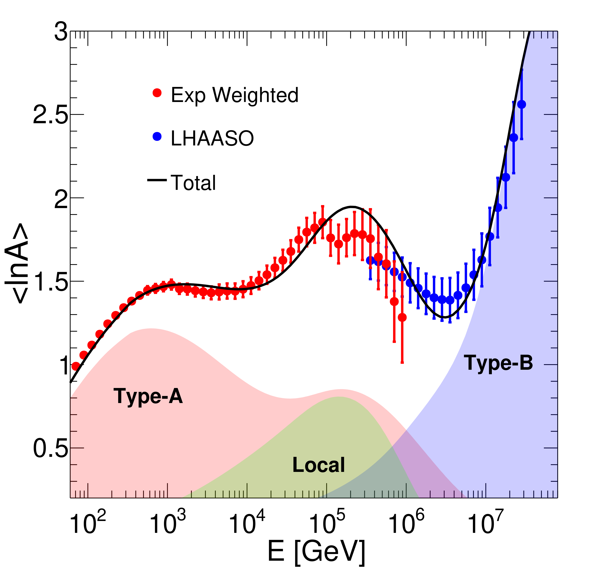
图注：Comparison between the $\langle \ln A\rangle$ calculated by the model and the $\langle \ln A\rangle$ calculated from experimental data. The red points represent the $\langle \ln A\rangle$ calculated from the AMS-02 and DAMPE experimental data, the blue points represent the $\langle \ln A\rangle$ measured by the LHAASO experiment, and the black solid line represents the $\langle \ln A\rangle$ calculated by the model. The shaded regions labeled "Type-A", "Type-B", and "Local" represent the contributions of the three types of sources to the total $\langle \ln A\rangle$, respectively.
对应解读：对应“建议重点查看的图表”第2项、关键图表逐图导读图2，以及详细解读中关于 DAMPE 构造的 \(\langle\ln A\
angle\) 与 LHAASO 高能点平滑连接并出现凸起的核心结论。
入选理由：这是本文最直接支撑“composition bump”的关键图，明确展示由 AMS-02/DAMPE 数据计算的 \(\langle\ln A\
angle\)、LHAASO 测量点、模型曲线以及 Type-A、Type-B、Local 三类源对总平均质量的贡献。它比单纯能谱图更集中体现论文主张：谱软化对应的成分凸起能否与高能组成数据连续衔接，并能检验附近源解释是否必要。
来源与置信度：\(arxiv_source\)；high；\(arxiv_source\) / apssamp.tex:figure[2]
Fig01
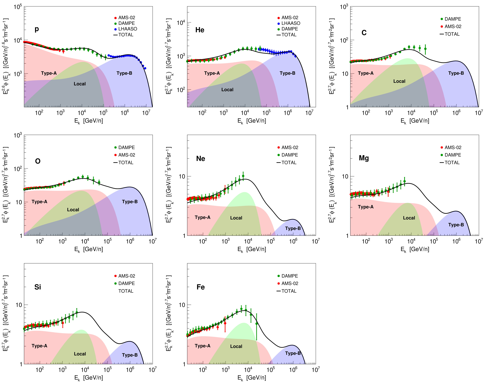
图注：Model-predicted energy spectra of individual CR nuclei compared with measurements from AMS-02 \(\cite{aguilar2021alpha,aguilar2024properties,aguilar2023properties,aguilar2021properties1,aguilar2020properties,aguilar2019properties},\) DAMPE \(\cite{2026Natur.653...52D,Casilli:2025w8},\) and LHAASO \(\cite{2025SciBu..70.4173C,2026PhRvL.136l1001C}.\) In the figure, red, blue, and green points represent AMS-02, DAMPE, and LHAASO data, respectively; the black solid line shows the total model flux. The labels "Local", "Type-A", and “Type-B” denote the energy spectra of the nearby source, Type-A sources and Type-B sources, respectively.
对应解读：对应“建议重点查看的图表”第1项和第3项、关键图表逐图导读图1与图3，以及模型拟合段落中关于单元素通量 \\(\\Phi_i(E)\\)、背景源与附近源分解的讨论。
入选理由：该图展示多种单元素宇宙线能谱与 AMS-02、DAMPE、LHAASO 数据的比较，并区分 Local、Type-A、Type-B 与总模型通量。它直接支撑本文从 DAMPE 碳、氧、铁等成分谱软化出发建立统一模型的基础，也能检查附近源贡献是否只在有限能区占优、不同元素结构是否按刚度排序。
来源与置信度：\(arxiv_source\)；high；\(arxiv_source\) / apssamp.tex:figure[1]
Fig03
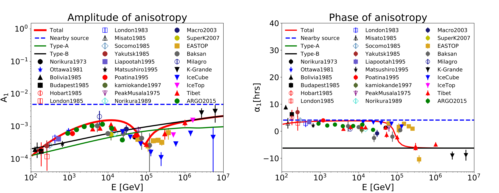
图注：The amplitude (left) and phase (right) of CR anisotropy. The solid red line shows the total anisotropy from the Type-A, Type-B, and nearby-source components. The dashed and solid colored lines show the individual component contributions. The data points are taken from Norikura \(\cite{1973ICRC....2.1058S},\) Ottawa\cite{1981ICRC...10..246B}, London\cite{1983ICRC....3..383T}, Bolivia\cite{1985P&SS...33.1069S}, Budapest\cite{1985P&SS...33.1069S}, Hobart\cite{1985P&SS...33.1069S}, London\cite{1985P&SS...33.1069S}, Misato\citep{1985P&SS...33.1069S}, Socorro\cite{1985P&SS...33.1069S}, Yakutsk\cite{1985P&SS...33.1069S}, Banksan\cite{1987ICRC....2...22A}, HongKong\cite{1987ICRC....2...18L}, Sakashita\cite{1990ICRC....6..361U}, Utah\cite{1991ApJ...376..322C}, Liapootah\cite{1995ICRC....4..648M}, Matsushiro\cite{1995ICRC....4..639M}, Poatina\cite{1995ICRC....4..635F}, Kamiokande\cite{1997PhRvD..56...23M}, Marco\cite{2003PhRvD..67d2002A}, SuperKamiokande\cite{2007PhRvD..75f2003G}, PeakMusala\cite{1975ICRC....2..586G}, Baksan\cite{1981ICRC....2..146A}, Norikura\cite{1989NCimC..12..695N}, EAS-TOP\cite{1995ICRC....2..800A,1996ApJ...470..501A,2009ApJ...692L.130A}, Baksan\cite{alekseenko200910}, Milagro\cite{2009ApJ...698.2121A}, KASCADE-Grande\cite{2015ICRC...34..281C}, IceCube\cite{2010ApJ...718L.194A,2012ApJ...746...33A}, Ice-Top\cite{2013ApJ...765...55A}, ARGOYBJ\cite{2015ApJ...809...90B}, Tibet\cite{2005ApJ...626L..29A,2017ApJ...836..153A,2015ICRC...34..355A}, and AUGER\cite{2020ApJ...891..142A}.
对应解读：对应“建议重点查看的图表”第4项和第5项、关键图表逐图导读图4与图5，以及模型拟合段落中关于各向异性振幅和相位联合检验的内容。
入选理由：该图同时给出全粒子宇宙线各向异性的振幅和相位，并与大量历史观测数据比较，且区分 Type-A、Type-B、附近源和总贡献。它是检验模型是否避免标准扩散模型过大各向异性、以及是否能产生相位转变的核心证据，科学价值仅次于组成凸起和单元素谱分解。
来源与置信度：\(arxiv_source\)；high；\(arxiv_source\) / apssamp.tex:figure[3]
Fig04
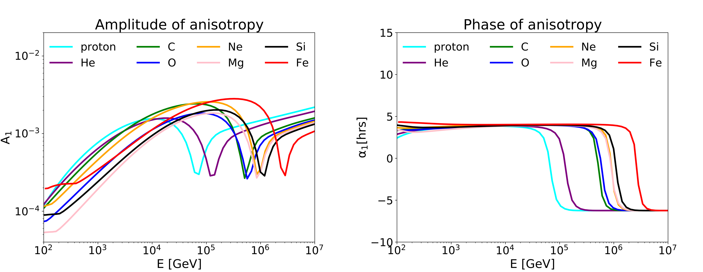
图注：Model-predicted amplitudes (left) and phases (right) of the anisotropies for individual elements.
对应解读：对应“建议重点查看的图表”第5项和关键图表逐图导读图6，尤其是未来 LHAASO 分成分各向异性检验、不同元素相位和振幅转变能量预测。
入选理由：该图给出单个元素的各向异性振幅和相位预测，直接服务于论文摘要中“预测不同质量成分的各向异性相位和振幅转变能量”的前瞻性结论。相比 Fig03 的全粒子观测对比，它更偏预测，但对判断刚度缩放和未来分成分测量能否验证附近源图像非常重要。
来源与置信度：\(arxiv_source\)；high；\(arxiv_source\) / apssamp.tex:figure[4]
强相关工作
这篇工作与 DAMPE、AMS-02、CREAM、CALET、NUCLEON 等直接探测实验关于单元素谱硬化和软化的结果直接相关，也与 LHAASO 对膝区附近全粒子谱和质量组成的测量相连。建议检索关键词包括“DAMPE carbon oxygen iron cosmic ray spectrum softening”、“LHAASO mean logarithmic mass cosmic rays”、“cosmic ray component spectra below the knee”和“rigidity dependent cutoff cosmic rays”。这些属于同类观测和目录型结果，不是同一瞬变事件。
理论上，本文与常规扩散模型、空间依赖传播模型、局部源解释和宇宙线各向异性问题相联系。相反或竞争观点包括：谱结构主要由传播系数刚度折断造成、由源注入普遍折断造成、由多个远距离源族叠加造成，或由实验系统误差和能标差异造成。建议检索关键词包括“spatially dependent propagation cosmic rays”、“nearby source cosmic ray anisotropy”、“cosmic ray anisotropy problem”、“local source explanation cosmic ray spectral hardening”。
若读者要追踪本文的上下文，应把它放在“同类源与同类观测”而非“同一源事件”的谱系中：这里没有命名超新星遗迹或瞬变事件被唯一识别，附近源更像有效模型成分。需要特别比较的历史原型包括用 Vela、Geminga、Monogem 或其他近邻年轻源解释局部宇宙线电子、正电子或核谱结构的工作，但本文的关键不同点是把核素成分和大尺度各向异性一起纳入。
同一事件 / 同类源线索：
- https://arxiv.org/abs/2606.14501
- https://arxiv.org/pdf/2606.14501
- https://dpnc.unige.ch/dampe/
- http://english.ihep.cas.cn/lhaaso/
相似工作：
基础理论 / 方法工作：
- https://ui.adsabs.harvard.edu/abs/1964ocr..book.....G/abstract
- https://ui.adsabs.harvard.edu/abs/1990acr..book.....B/abstract
相反观点 / 张力线索：
（未提供）
3. Probing New Degrees of Freedom with the Universal Tail of Primordial Black Hole Mass Functions
- 来源：arXiv / astro-ph.HE
- 链接：https://arxiv.org/abs/2606.13788v1
- 作者：Kaustubh Agashe, Jae Hyeok Chang, Steven J. Clark, Bhaskar Dutta, Yuhsin Tsai, Tao Xu
- 评分：novelty 7/10，importance 8/10，relevance 9/10，final 9.05/10
- 推荐理由：研究PBH蒸发低质量尾对高能伽马射线谱和新自由度的可观测特征，直接涉及伽马射线约束与未来实验，虽偏粒子宇宙学但高度相关。
中文题目：Probing New Degrees of Freedom with the Universal Tail of Primordial Black Hole Mass Functions
做了什么：本文提出利用原初黑洞今日低质量蒸发尾部来探测新的粒子自由度。核心逻辑是：PBH 质量函数在 Hawking 蒸发下满足质量空间连续性方程，许多不同初始质量函数会在当前蒸发尺度以下形成近似普适的低质量尾部；该尾部主导高能 gamma-ray 发射。若存在额外暗自由度，它们在黑洞温度超过其质量时参与 Hawking 辐射，增加总蒸发率并扭曲尾部，从而在 photon spectrum 中产生由 \(m_{\rm dark}\) 和自由度数 \(N\) 控制的特征。Fig. 1 展示了不同初始 log-normal 质量函数在 SM 情况下尾部收敛，以及 BSM 自由度造成的谱形偏离；Fig. 2 和 Fig. 3 进一步把这种特征转化为未来 gamma-ray 观测所需的曝光量和望远镜性能。论文的重要结论是，即使 PBH 只占暗物质很小比例，且新粒子与可见部门几乎无耦合，PBH 蒸发尾部仍可能提供一种独立的隐藏自由度探针。
为什么重要：这篇论文的重要性在于提出了一个跨越早期宇宙、黑洞热力学和 BSM 粒子物理的可观测桥梁。PBH 是否构成主要暗物质仍受强约束，但本文说明即使 PBH 是 subdominant population，其接近蒸发末期的高能辐射也可能对新自由度极其敏感。
更具体地说，论文识别了“普适蒸发尾部”这一减少模型依赖的结构。传统 PBH 研究常被初始质量函数、形成机制和丰度归一化困扰；若尾部形状确实由连续性方程和 Hawking 率固定，那么高能 gamma-ray 谱中对初始条件不敏感的部分就能成为更干净的物理探针。
它还重要在于新自由度的探测不要求这些粒子与 SM 有可测相互作用。Hawking 辐射只按可用自由度分配能量，这使 PBH 蒸发成为少数能直接感知“完全暗”粒子数的天体物理机制之一。
最后，论文把理论效应量化到未来实验需求，如 Fig. 2 的 \(T_{\rm obs}A_{\rm eff}\) 和 Fig. 3 的 0.1--1 TeV 望远镜性能窗口。这使结论不只是概念性提案，而是可以被后续 mock likelihood、仪器设计和实际 gamma-ray 数据搜索继续推进的研究计划。
理论 / 观测 / 仪器方法价值：本文的理论价值在于把 PBH 质量函数的蒸发尾部从“初始条件不确定的麻烦”转化为“由连续性方程和 Hawking 率固定的普适诊断量”。这为扩展质量函数 PBH 研究提供了一个比总丰度约束更结构化的观测目标。
它的粒子物理价值在于对隐藏自由度敏感而不依赖可见耦合。许多暗部门模型在 collider、direct detection 或传统 indirect detection 中难以检验，但只要粒子能被热的 PBH 引力地产生，就会改变蒸发功率和可见光子谱。
观测价值在于将理论尾部特征映射到 GeV--TeV gamma-ray 谱和 \(T_{\rm obs}A_{\rm eff}\) 需求，使未来高能望远镜能够围绕谱形拐点设计搜索。它也提示数据分析应更重视高能段的形状信息，而不仅是 PBH 蒸发的总通量上限。
方法价值在于提供了一套可推广框架：连续性方程演化质量函数、自由度阈值改变 \(\alpha(M)\)、卷积单个 PBH 发射谱、再用谱形 likelihood 区分 SM 与 BSM。这个框架可扩展到不同自旋的新粒子、不同初始 PBH 谱、以及真实仪器响应下的 mock 或实际数据分析。
为什么应该关注：值得关注这篇论文，是因为它把 PBH 蒸发从单纯的宇宙学约束工具提升为一种可能的 hidden-sector spectroscopy。高能 photon spectrum 中的拐点不是来自暗粒子衰变，而是来自黑洞热辐射可访问自由度的变化，因此覆盖了很多传统实验难以触及的暗模型。
对天体物理读者而言，论文提醒我们 gamma-ray 背景或未来 TeV 观测中的某些谱形结构可能携带早期宇宙和粒子自由度信息，而不仅是普通天体源建模问题。对粒子物理读者而言，它提供了一个几乎只依赖引力与热力学的探针，避开了可见耦合过小带来的盲区。
对方法论读者而言，本文也很有启发：通过寻找对初始条件不敏感的普适尾部，可以减少 PBH 形成模型的不确定性。这样的思路比直接拟合任意扩展质量函数更稳健，也更容易转化为可检验的观测形状。
展开详细解读：文章讲解、背景、理论、重点章节、图表与相关工作
文章详细讲解
本文的科学问题可以表述为：PBH 低质量蒸发尾部是否是一种普适的、可观测的“粒子自由度探针”？如果答案是肯定的，那么 gamma-ray 望远镜不仅能约束 PBH 丰度，还能在新粒子与标准模型几乎无耦合的情况下，通过 Hawking 辐射热力学测量隐藏自由度。论文摘要和 Fig. 1 明确把论证分成两步：先证明今日尾部对初始质量函数不敏感，再说明额外自由度会破坏 SM 普适尾部并在光子谱中留下特征。
方法上，作者从 PBH 质量函数的连续性演化出发，用 Hawking 质量损失率把初始 \(\hat n_{\rm BH}(t_i,M)\) 推到今天 \(\hat n_{\rm BH}(t_0,M)\)。Fig. 1 左图显示多条薄线代表不同参数 \(\mu,\sigma\) 的 log-normal 初始谱，且在 \(M_{\rm evp}\) 处被归一到相同密度；在只含 SM 粒子时，低于 \(M_{\rm evp}\) 的实线收敛到一条共同尾部。这个设计很重要，因为它避免把尾部一致性误认为是同一初始模型的平凡结果。
关键结果是，额外暗自由度会以质量阈值的方式改变尾部。图注给出的示例是 \(N=10^3\) 个额外标量自由度，质量 \(m_{\rm dark}\) 不同；当 PBH 温度足以产生这些粒子时，总蒸发率增强，质量空间流速改变，今日尾部相对于 SM 实线出现虚线或点划线偏离。偏离开始的位置由 \(m_{\rm dark}\) 决定，因为阈值条件近似是 \(T_{\rm BH}(M)\sim m_{\rm dark}\)。
再把尾部卷积到 gamma-ray 谱后，Fig. 1 右图显示高于约 GeV 的谱线在不同初始质量函数之间几乎一致，但在加入额外自由度时产生清晰 BSM signature。这个结果是论文最有力的证据链：普适尾部保证初始条件不敏感；高能 photon spectrum 选择性地放大低质量尾部；额外自由度通过蒸发率而非可见耦合影响谱形。因此该方法补充了传统 collider、direct detection、indirect annihilation searches 无法覆盖的“暗而只受引力产生”的自由度空间。
局限性也应明确。论文从摘要和图注看更像是理论与灵敏度预测研究，而不是对实际 gamma-ray 数据做完整联合似然拟合。因此读者应检查正文是否包含具体背景模型、探测器响应、能量分辨率、天空区域选择和现有约束比较。若这些只是估算，Fig. 2 和 Fig. 3 的 \(T_{\rm obs}A_{\rm eff}\) 或望远镜性能需求应理解为可达性标尺，而非实验排除曲线。
下一步修复或扩展可以有三类。第一，把普适尾部信号嵌入真实仪器响应，用 Poisson likelihood 对 Fermi-LAT、HAWC、LHAASO、CTA 等不同能段做 mock-data 检验。第二，把 Galactic PBH 分布、extragalactic PBH 累积背景、宇宙传播吸收和二级光子统一处理。第三，系统扫描不同自旋、统计性质和质量谱的 BSM 自由度，检查 \(N\) 与 \(m_{\rm dark}\)、PBH 归一化、背景谱指数之间的退化。
关键结果是怎么做出来的
第一项主结果是今日低质量 PBH 质量函数尾部的普适性。作者在 Fig. 1 左图中选择多组 log-normal 初始质量分布，参数 \(\mu\) 与 \(\sigma\) 不同，但在 \(M_{\rm evp}\) 处归一到相同密度；图注还给出一个参考归一化，对紫色今日曲线相当于 \(f_{\rm PBH}\approx2\times10^{-8}\)。在只含 SM 粒子的情况下，所有实线在 \(M 第二项主结果是 BSM 自由度会系统性扭曲这个普适尾部。图 1 左图的虚线/点划线加入 \(N=10^3\) 个额外标量自由度，质量 \(m_{\rm dark}\) 取不同值。由于额外自由度在 \(T_{\rm BH}\gtrsim m_{\rm dark}\) 时打开，蒸发率 \(|\dot M|\) 增强，尾部数密度按近似 \(n_{\rm tail}\propto1/|\dot M|\) 改变。图上的 onset 随 \(m_{\rm dark}\) 移动，是将粒子质量映射到 PBH 质量/温度的关键证据。 第三项主结果是 gamma-ray 高能谱继承了尾部的普适性。Fig. 1 右图把相同 present-day distributions 卷积成 \(E_\gamma^3\) 加权 photon spectrum。图注说明 \(E_\gamma>1\,\mathrm{GeV}\) 区域不同初始条件几乎相同，而初始质量函数差异主要影响 sub-GeV 区域。因此，如果未来观测集中在 GeV 到 TeV 高能段，谱形对 PBH 形成模型的不确定性较小，对 BSM 蒸发自由度更敏感。 第四项主结果是这种方法可探测“暗”自由度，而不依赖其可见耦合或热遗迹丰度。论文的物理统计量不是暗粒子的直接衰变产物，而是光子谱中因总蒸发功率被额外通道分走、以及质量函数尾部被改写而造成的特征。换言之，即便暗标量不与 SM 发生可观测相互作用，只要它们在 Hawking 辐射中可产生，就会改变 \(\alpha(M)\) 并通过 PBH photon emission 间接暴露。 第五项主结果体现在 Fig. 2 的灵敏度估算。纵轴是探测所需的最小观测时间乘有效面积 \(T_{\rm obs}A_{\rm eff}\)，曲线按 \(N\) 与 \(m_{\rm dark}\) 展示。这里的“显著性”或“可探测”判据需要读者回到正文核查：它可能来自谱形差异的计数统计估算、\(\chi^2\) 阈值或 likelihood ratio。无论具体阈值如何，图注给出的物理解释清楚：暗粒子太重时影响发生在信号更少的深尾部；太轻时相对于相关 PBH 温度近似无质量，灵敏度趋于平台；中间质量可能因谱形 drop 落在观测窗口之外而降低有效信号。 第六项结果是 Fig. 3 将理论特征翻译成 0.1--1 TeV photon 观测的望远镜性能需求。这说明作者并未停留在“存在一个谱形差异”的层面，而是估计了未来实验需要的曝光或有效面积量级。稳健性方面，已经由 Fig. 1 的多初始质量函数比较支撑了对初始条件的鲁棒性；但读者仍应检查正文是否系统改变 PBH 空间分布、gamma-ray 背景、仪器响应、能量分辨率和灰体因子。若这些只被简化处理，则结论应视为强理论动机加灵敏度预测，而不是现有数据的严格排除。 原初黑洞（PBH）是早期宇宙密度扰动、相变、宇宙弦或其他非标准机制可能产生的黑洞种群。与恒星坍缩黑洞不同，PBH 的质量不受恒星演化下限限制，可以覆盖从亚克级到太阳质量以上的宽广范围。本文关注的不是 PBH 是否构成全部暗物质，而是一个更细的高能物理问题：如果今天仍有接近完全蒸发的低质量 PBH，它们的 Hawking 辐射尾部是否能成为探测新粒子自由度的“热计”。 Hawking 蒸发的关键尺度是黑洞温度随质量反比增长。质量越低，温度越高，越能辐射更重的粒子。质量约在当前宇宙年龄内蒸发的 PBH 会在今日质量函数的低质量端形成一个蒸发尾部；该尾部控制高能光子、电子、正电子、中微子等末期辐射信号。传统 PBH 约束常问“某一质量附近 PBH 丰度有多大”，而本文的问题更接近“在任意初始质量函数经过长期 Hawking 演化后，低质量端是否出现可预测的形状”。 论文的核心动机是：连续性方程与 Hawking 质量损失率会把许多不同的初始 PBH 质量分布映射到相似的今日低质量尾部。只要初始分布在将要蒸发的质量附近不是人为调成奇异形状，低质量端的数密度形状主要由质量流速决定，而不是由初始分布细节决定。这种“普适尾部”使得 PBH gamma-ray 信号中某些高能谱形特征可能独立于 PBH 形成模型，从而避免了初始功率谱、塌缩阈值、非高斯性等早期宇宙不确定性。 本文进一步利用一个高能物理事实：Hawking 辐射并不关心新粒子与普通物质的非引力耦合，只要粒子质量低于黑洞温度、且存在可辐射的自由度，它就会贡献到蒸发功率。额外暗标量或其他 BSM 自由度会增加总能量损失率，改变 PBH 沿质量轴的流速，从而扭曲今日尾部形状。即使这些暗粒子本身不可见，它们通过减少可见光子通道的相对能量、改变 PBH 质量函数、并在 photon spectrum 中产生拐点而留下间接痕迹。 一个常见误区是把本文的信号理解为“直接看见暗粒子衰变或湮灭”。事实上，摘要和图注强调的是 visible-sector coupling independent：新自由度可以完全暗，只通过引力性 Hawking 辐射被产生。另一个误区是认为结论强依赖某个对数正态初始 PBH 质量函数；Fig. 1 左图恰恰展示多组初始 log-normal 分布在今日低质量端收敛到同一 SM 普适尾部，而 BSM 自由度改变的是尾部动力学本身。第三个误区是把所有 gamma-ray 能段都视为同等干净：图注说明初始质量函数差异主要影响 sub-GeV 区域，而高于 GeV、尤其更高能窗口才更直接追踪蒸发尾部。 理解本文首先要从 Hawking 温度开始。Schwarzschild 黑洞的温度近似为 \(T_{\rm BH}=1/(8\pi G M)\)，因此黑洞越轻越热。对 PBH 而言，质量接近当前蒸发尺度 \(M_{\rm evp}\) 的对象在今天具有最高温度和最剧烈的辐射；它们虽可只占暗物质极小比例，却在高能 photon flux 中占主导，因为辐射功率随质量降低迅速增强。 第二个基础概念是质量函数的演化。设 \(\hat n_{\rm BH}(t,M)\) 表示按质量定义的 PBH 数密度分布。Hawking 蒸发让每个 PBH 沿质量轴从大质量流向小质量，形成一个一维“质量空间流体”。如果忽略合并、吸积和新生 PBH，则质量函数服从连续性方程 \(\partial_t \hat n+\partial_M(\dot M\hat n)=0\)。这意味着今日低质量端的形状不是任意的，而受质量流速 \(\dot M(M)\) 控制。 第三个关键是自由度函数。Hawking 质量损失率通常可写作 \(\dot M=-\alpha(M)/M^2\)，其中 \(\alpha(M)\) 汇总所有可辐射粒子的自旋、颜色、统计权重和灰体因子。标准模型粒子给出一个随 \(T_{\rm BH}\) 逐步打开的 \(\alpha_{\rm SM}(M)\)。若有 \(N\) 个质量为 \(m_{\rm dark}\) 的额外暗标量，当 \(T_{\rm BH}\gtrsim m_{\rm dark}\) 时，它们会增加 \(\alpha(M)\)，使低质量 PBH 蒸发更快，进而降低或重塑相应质量区间的尾部数密度。 第四个连接是从质量函数到可观测 gamma-ray 谱。单个 PBH 的光子发射率依赖 \(M\) 与光子能量 \(E_\gamma\)，总谱是对今日质量函数的卷积。高能光子主要来自更热、更轻的 PBH，因此它们特别敏感于低质量普适尾部；而低能光子可以由更宽的质量范围贡献，更容易保留初始质量函数差异。Fig. 1 右图使用 \(E_\gamma^3\) 加权，是为了在宽能段中突出谱形拐点和 BSM 导致的相对偏离。 第五个理论点是统计可检验性并非只由 PBH 丰度决定。若 PBH 总丰度很小，绝对通量会下降，但尾部形状和 BSM 拐点仍可能在足够大的曝光量 \(T_{\rm obs}A_{\rm eff}\) 下被辨认。本文 Fig. 2 与 Fig. 3 把“尾部扭曲”转化为所需观测时间乘有效面积或望远镜性能要求。读者应把它理解为形状检验的灵敏度估算，而非对某个具体现有望远镜数据集的正式发现声明。 最后需要注意若干退化与系统误差。PBH 总归一化、天体 gamma-ray 背景、探测器有效面积、能量分辨率、SM 灰体因子近似、以及初始质量函数在 \(M_{\rm evp}\) 附近的异常结构，都可能模仿或削弱 BSM 特征。因此本文最强的地方在于指出一种初始条件不敏感的尾部诊断；真正用于数据时，还必须把背景模型、能量响应和 PBH 空间分布纳入似然分析。 可以把本文的推导理解为从单个黑洞热辐射到总体 gamma-ray 形状的连续链条。首先，非旋转、无电荷 PBH 的 Hawking 温度为 它给出质量阈值与粒子质量的对应关系：当 \(T_{\rm BH}\gtrsim m_a\) 时，质量为 \(m_a\) 的粒子种类可以被有效辐射。 单粒子物种 \(i\) 的 Hawking 发射率可概念性写为 其中 \(g_i\) 是内部自由度，\(s_i\) 是自旋，\(\Gamma_i\) 是灰体因子。本文的 BSM 信息通过增加可辐射的 \(g_i\) 进入，而不要求这些粒子有可见耦合。 把所有物种能量流加总，质量损失率可写成 若有 \(N\) 个额外暗标量，常用的阈值近似是 其中 \(S(x)\) 是从 0 到 1 平滑打开的阈值函数，\(\alpha_0\) 包含单个标量的灰体积分贡献。这个式子解释了 Fig. 1 中偏离起点为何由 \(m_{\rm dark}\) 决定。 若在某一质量区间可把 \(\alpha\) 近似为常数，则单个 PBH 的寿命关系为 当前正在蒸发的初始质量尺度满足 其中 \(t_0\) 是宇宙年龄。严格计算中 \(\alpha(M)\) 随阈值变化，但这个比例关系足以说明为什么额外自由度会移动有效蒸发尺度并改变尾部。 质量函数的演化满足质量空间连续性方程 沿特征线 \(dM/dt=\dot M\)，数目守恒给出 在低质量尾部，许多平滑初始分布的 \(\hat n(t_i,M_i)\) 变化较慢，而 Jacobian 与 \(\dot M\) 控制主要形状，这就是“普适尾部”的数学来源。 在准稳态或平滑注入近似下，质量空间通量 \(J=\dot M\hat n\) 近似固定，可得直观标度 因此，当 BSM 自由度使 \(\alpha(M)\) 增大时，尾部数密度相对 SM 降低或改变斜率；这正是 Fig. 1 左图虚线/点划线偏离实线的物理原因。 总 gamma-ray 微分通量可以写为 若讨论各向同性宇宙背景，还需把视线积分替换为红移积分并加入吸收。本文图示的核心不是空间分布细节，而是 \(M\) 积分被高能光子选择到低质量尾部。 若用观测事件数检验 BSM 与 SM 谱形，能量 bin \(k\) 的期望计数可写为 其中 \(\theta\) 包括 \(N,m_{\rm dark},f_{\rm PBH}\) 等信号参数，\(\eta\) 是背景参数。常用的形状区分统计量为 或等价的 Poisson likelihood ratio。Fig. 2 的 \(T_{\rm obs}A_{\rm eff}\) 灵敏度可理解为使该区分统计量达到预设阈值所需的曝光量。 本文不是典型的“拟合一个已观测数据集”的论文，而更像是理论模型加未来灵敏度预测。因此模型拟合应理解为两层：第一层是把初始 PBH 质量函数经过 Hawking 演化映射到今日质量函数；第二层是把今日质量函数卷积成 gamma-ray 谱，并比较 SM 与 BSM 谱形差异。可调参数至少包括初始质量函数参数 \((\mu,\sigma)\)、PBH 归一化或 \(f_{\rm PBH}\)、额外自由度数 \(N\)、暗粒子质量 \(m_{\rm dark}\)，以及可能的背景谱参数。 若把它写成正式似然，能量 bin 中的期望计数应由信号加背景组成：\(\mu_k=T_{\rm obs}\int A_{\rm eff}R(\Phi_{\rm PBH}+\Phi_{\rm bg})\)。检验 BSM 可用 profile likelihood ratio：固定或扫描 \((N,m_{\rm dark})\)，同时剖面化 \(f_{\rm PBH}\)、背景归一化、背景谱指数和仪器 nuisance parameters。若只比较 \(\Phi_{\rm BSM}\) 与 \(\Phi_{\rm SM}\) 的理论谱差，则应明确这是 Asimov sensitivity，而不是对真实数据的 posterior。 残差诊断非常关键。由于 PBH 总丰度会整体抬高或降低 photon spectrum，单看绝对通量很容易把 \(f_{\rm PBH}\) 与 \(N\) 混淆。更好的诊断是能量依赖残差：BSM 自由度应在由 \(m_{\rm dark}\) 决定的能段产生局部拐点或谱形 drop，而单纯归一化误差只产生近似常数比值。读者应检查是否有 \(\Phi_{\rm BSM}/\Phi_{\rm SM}\)、best-fit residuals、或不同能量窗口下的 \(\Delta\chi^2\) 分解。 主要退化包括：\(N\) 与 \(f_{\rm PBH}\) 的退化、\(m_{\rm dark}\) 与能量窗口位置的退化、初始质量函数在 \(M_{\rm evp}\) 附近局部结构与 BSM onset 的退化、以及天体背景谱弯曲与 PBH 谱形弯曲的退化。Fig. 1 通过多种 log-normal 初始谱削弱了第一类初始条件担忧，但并不能完全排除人为尖峰、截断或多峰初始谱造成的相似特征。因此严肃拟合时应尝试更灵活的初始质量函数先验。 系统误差方面，至少应包含 Hawking 灰体因子、SM 自由度阈值、PBH 空间分布、Galactic diffuse gamma-ray background、extragalactic background、能量响应矩阵、有效面积标定和 exposure map。Fig. 2 的 \(T_{\rm obs}A_{\rm eff}\) 曲线若未纳入这些误差，通常会偏乐观。一个稳健的模型比较应报告在不同背景模型、能量下限/上限、系统误差 floor 和 PBH 分布假设下，BSM discovery reach 如何变化。 模型可能失败的情形也值得记录。如果 PBH 丰度远低于假定值，高能 photon counts 不足，形状优势无法发挥；如果真实初始质量函数在蒸发尺度附近有非平滑结构，普适尾部可能被局部注入历史污染；如果额外自由度不是稳定自由粒子而有复杂相变、强耦合或温度依赖有效自由度，简单 \(N,m_{\rm dark}\) 参数化会过窄。读者应把本文的模型视为建立原理与可观测标尺，而非覆盖所有暗部门动力学的最终模板。 Introduction 与问题设定：重点读作者如何界定“universal tail”。要确认他们假设 PBH 不发生显著吸积、合并或后期产生，并看他们如何说明该尾部对初始 PBH 质量函数不敏感。还要记录他们把方法与传统 PBH 丰度约束、暗物质直接探测、collider searches 的差别放在哪里。 PBH mass function evolution/model 部分：这是全文最关键的技术段。阅读时应逐行跟踪连续性方程、Hawking 质量损失率、\(\alpha(M)\) 或自由度函数的定义，以及从初始 \(\hat n(t_i,M)\) 到今日 \(\hat n(t_0,M)\) 的映射。检查 log-normal 初始谱的归一化选择，尤其是为什么在 \(M_{\rm evp}\) 处设相同密度。 BSM degrees of freedom 部分：看作者如何参数化额外自由度，例如 \(N\) 个暗标量和 \(m_{\rm dark}\)。应确认他们使用的是精确灰体因子计算、阶跃近似还是平滑阈值函数；不同近似会影响 onset 的锐度，但不应改变“温度超过粒子质量即打开通道”的基本逻辑。 Photon spectrum calculation 部分：重点读单个 PBH 光子发射率如何与今日质量函数卷积，以及是否包含次级光子、宇宙传播吸收、Galactic/extragalactic 几何因子。Fig. 1 右图的可信度取决于这里的谱计算，因为它是从质量尾部到可观测 gamma-ray 的桥梁。 Sensitivity/projection 部分：围绕 Fig. 2 和 Fig. 3 阅读。要查明“minimum \(T_{\rm obs}A_{\rm eff}\)”的统计定义、能量窗口、背景是否纳入、系统误差如何处理，以及发现或排除阈值是多少。若只是无背景或简化背景估算，结论应被标注为 optimistic projection。 Discussion/Conclusion 部分：重点看作者承认的局限与未来实验路径。尤其要找是否讨论了 PBH 丰度上限、现有 gamma-ray 背景约束、初始质量函数极端形状、以及 BSM 自由度自旋和不可见通道的泛化。 今日质量函数与初始质量函数对比图：重点看横轴是否为 PBH 质量、纵轴是否为 \(\hat n_{\rm BH}(t_0,M)\) 或等价归一化数密度；检查不同初始 log-normal 薄线在 \(M_{\rm evp}\) 附近如何归一化，以及 SM 实线在 \(M SM 与 BSM 尾部偏离图：看虚线、点划线对应的 \(N\) 与 \(m_{\rm dark}\)，偏离起点是否随 \(m_{\rm dark}\) 按 \(T_{\rm BH}\sim m_{\rm dark}\) 移动；还要看偏离是改变斜率、归一化，还是产生局部拐点。 \(E_\gamma^3 d\Phi/dE_\gamma\) 或类似加权 gamma-ray 谱：重点看高能段不同初始质量函数是否重合，以及 sub-GeV 区域是否保留初始条件差异；加权谱容易视觉放大高能端，读者应同时检查未加权通量或事件数是否足够。 灵敏度曲线 \(T_{\rm obs}A_{\rm eff}\) 对 \(m_{\rm dark}\) 或 \(N\) 的依赖：Fig. 2 中应看高质量端为何失去灵敏度、低质量端为何渐近，以及中间质量区域为何出现灵敏度下降或上升。确认纵轴单位和判据是信噪比、\(\Delta\chi^2\)、likelihood ratio 还是简单计数估算。 望远镜性能需求图：Fig. 3 声称使用 0.1--1 TeV photons 发现暗 BSM 模型，需检查横纵轴究竟是有效面积、观测时间、角分辨率、能量分辨率还是背景抑制要求；还要比较这些需求是否接近 CTA、LHAASO、SWGO 等设施的公开性能。 残差或比值诊断图：若正文有 BSM/SM 谱比、\((\Phi_{\rm BSM}-\Phi_{\rm SM})/\Phi_{\rm SM}\)、或最佳拟合残差，应优先看这些图，因为绝对谱图常被归一化主导，而比值图更能显示自由度阈值造成的局部特征。 系统误差与鲁棒性图表：检查是否改变初始质量函数宽度 \(\sigma\)、中心 \(\mu\)、PBH 丰度归一化、背景谱指数或能量窗口后，普适尾部结论仍成立。若没有图，应把这些作为阅读时的缺口记录。 图 1 左图：横向应读作 PBH 质量，纵向为今日 PBH 质量函数 \(\hat n_{\rm BH}(t_0,M)\) 或其归一化版本。薄线是不同 \(\mu,\sigma\) 的 log-normal 初始质量谱，图注说明它们在 \(M_{\rm evp}\) 处具有相同密度；这一步控制了归一化，使比较集中在形状而非总丰度。实线只含 SM 粒子，关键读法是看 \(M 图 1 右图：坐标是 gamma-ray spectrum 乘以 \(E_\gamma^3\)，这种加权让高能端和谱形拐点更清楚，但也会弱化读者对绝对 photon counts 的直觉。颜色与线型对应左图同一组质量函数和自由度模型。核心证据是 \(E_\gamma>1\,\mathrm{GeV}\) 区域不同初始条件几乎重合，说明高能谱由普适尾部控制；而 BSM 模型产生的谱形变化具有随 \(m_{\rm dark}\) 移动的 onset。阅读时应特别看 sub-GeV 区域，因为图注说那里才明显受初始质量函数影响，这也是未来数据分析中应避免用来声称普适性的区域。 图 2：该图估计探测 BSM 额外自由度所需的最小 \(T_{\rm obs}A_{\rm eff}\)。横轴应与 \(m_{\rm dark}\) 或相关质量参数有关，曲线区分不同 \(N\) 的额外标量自由度。读法不是“曲线越低模型越强”，而是“在给定模型下达到区分 SM/BSM 谱形所需的曝光量越低，越容易探测”。图注解释了三段行为：高质量暗粒子只在更深尾部影响蒸发，信号少而灵敏度变差；低质量暗粒子相对于 \(T_{\rm BH}(M_{\rm evp})\) 近似无质量，曲线渐近；中间质量处如果谱形下降落在观测窗口之前，会减少窗口内信号。 图 3：该图把 0.1--1 TeV photon 窗口内利用普适 PBH 蒸发尾部发现暗 BSM 模型所需的望远镜性质做成概要图。读者应看它是否给出有效面积、曝光时间、能量窗口或背景要求之间的组合关系，并与 Fig. 2 的 \(T_{\rm obs}A_{\rm eff}\) 一致。这里的陷阱是把望远镜“最低性能”理解为某一现有设施必然能发现；若论文没有注入真实背景和仪器响应，它更应被读作设计指标或目标灵敏度。 若正文还有比值图或残差图，应把它们与图 1 右图配合读。绝对谱图可以被 PBH 丰度归一化改变整体高度，而 BSM 自由度真正稳健的证据应是随 \(m_{\rm dark}\) 出现的局部能量依赖拐点。最佳诊断通常是 \(\Phi_{\rm BSM}/\Phi_{\rm SM}\)、谱指数变化或 mock residuals，而不只是肉眼比较多条曲线。 Fig01 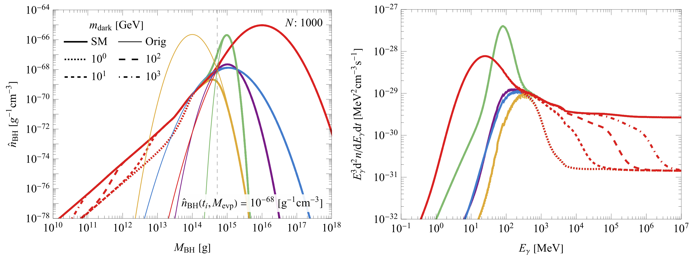展开背景、理论、公式、模型、章节和图表导读
背景知识
基础理论 / 方法脉络
公式与推导
模型拟合 / 应用方法
重点章节 / 结果段落怎么读
建议重点查看的图表
关键图表逐图导读
论文原图 / 可嵌入图片
图注：\(\textbf{Left:}\) Present-day PBH distribution $\hat{n}_\textrm{BH}(t_0,M)$ for various initial PBH distributions. The thin lines show log-normal initial mass spectra $\hat{n}_\textrm{BH}(t_i,M)$ with different $\mu$ and $\sigma$ (see \Eq{eq:lognormaldist}), each in a distinct color. All initial spectra have identical densities at $\mevp$, corresponding to $f_\text{PBH}\approx 2\times 10^{-8}$ for the present-day {\(\it\) purple} curve. The solid curves assume only SM particle content while the various dotted and dashed curves include $N=10^3$ additional scalar dof with mass $m_{\rm dark}$ as indicated in the legend. For $M<\mevp$, all solid curves converge to a single universal tail. The enhanced evaporation rate from the extra dof alters the tail relative to the SM prediction, with the onset of the deviation determined by $m_{\rm dark}$. \(\textbf{Right:}\) Gamma-ray spectrum weighted by $E_{\gamma}^3$ for the present-day distributions presented in the {\(\it\) left} panel, with line styles and colors matching. The gamma-ray spectra at $E_\gamma > 1$~GeV are nearly identical across initial conditions, reflecting the universality of the tail, while additional dof produce a clean BSM signature with an onset set by $m_\mathrm{dark}$. Differences in the initial mass function affect only the sub-GeV region.
对应解读：对应“建议重点查看的图表”中关于主要模型比较、诊断量和模型曲线的核心图；也最适合弥补“关键图表逐图导读”缺失部分。
入选理由：这张图直接展示论文的核心物理结论：左图比较不同初始PBH质量函数在今日低质量蒸发尾部的收敛，证明尾部的普适性；同时用不同线型展示加入额外暗自由度后尾部形状如何偏离SM预言。右图把同一组质量函数映射到E_gamma^3加权的伽马射线谱，显示高能段对初始条件不敏感但对新自由度敏感，是论文从PBH质量函数到可观测高能光子信号的关键证据。
来源与置信度：\(arxiv_source\)；high；\(arxiv_source\) / \(main_arXiv_submit_v1.tex\):figure[1]
Fig02
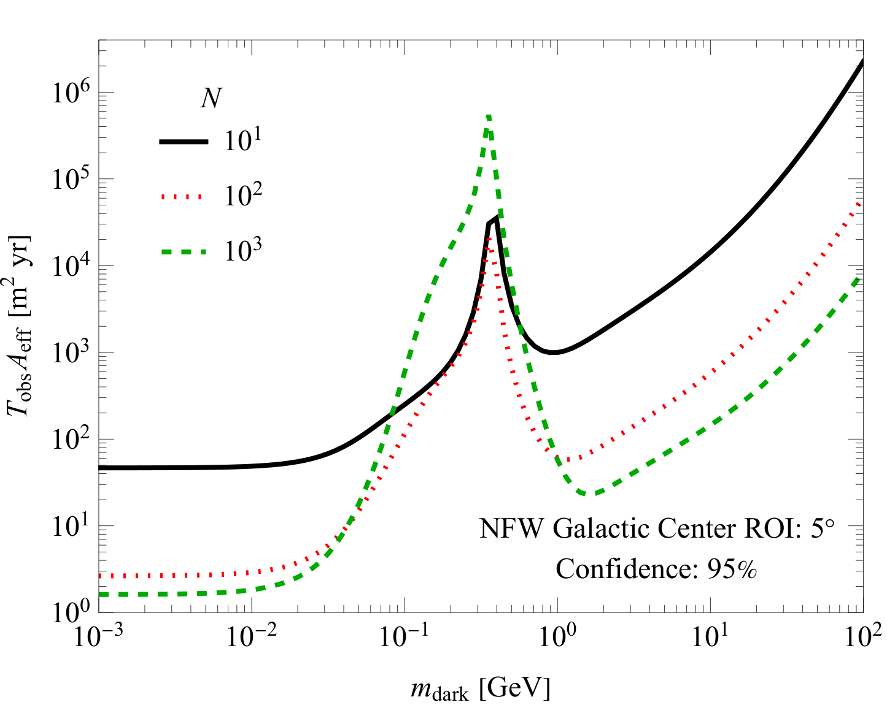
图注：An estimate of the minimum observation time ($T_\mathrm{obs}$) times effective area ($A_\mathrm{eff}$) to probe BSM models with additional dof using the tail of a PBH distribution. Individual lines correspond to models with $N$ additional scalar dark dof with mass $m_\mathrm{dark}$. At high masses, sensitivity is lost due to differences occurring deeper in the tail where there is less signal, while at low masses, the limit asymptotes due to BSM particles becoming massless compared with $T_\mathrm{BH}(\mevp)$. For middle masses, the sensitivity decreases due to the spectral drop from additional dof occurring before the observation window, leading to a reduced signal.
对应解读：对应“建议重点查看的图表”中关于灵敏度预测、参数约束和模型比较的部分。
入选理由：这张图给出探测额外自由度所需的最小观测时间乘有效面积T_obs \(A_eff\)，并按暗标量自由度数N和质量m_dark展示灵敏度变化，是从理论特征走向实验可检验性的核心图。它直接量化哪些BSM参数区域能通过PBH蒸发尾部被探测，比单纯示意图更能支撑日报中的模型可观测性解读。
来源与置信度：\(arxiv_source\)；high；\(arxiv_source\) / \(main_arXiv_submit_v1.tex\):figure[2]
Fig03
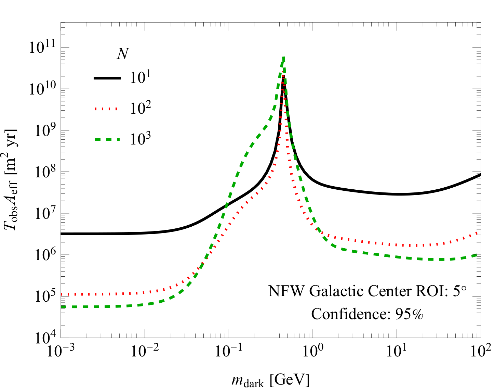
图注：Minimum telescopic properties for utilizing the universal PBH evaporation tail to discover dark BSM models using $0.1$--$1~\mathrm{TeV}$ photons.
对应解读：对应“建议重点查看的图表”中关于未来实验或望远镜性能需求的灵敏度预测。
入选理由：这张图进一步把普适PBH蒸发尾部用于发现暗BSM模型所需的望远镜性质总结在0.1--1 TeV光子窗口内，适合补充说明论文对未来高能伽马射线观测设备的要求。其科学信息与Fig02相关但更偏仪器性能概览，因此排序低于直接给出参数依赖的Fig02。
来源与置信度：\(arxiv_source\)；high；\(arxiv_source\) / \(main_arXiv_submit_v1.tex\):figure[3]
强相关工作
同类与基础工作应沿三条线检索。第一条是 PBH Hawking 蒸发与 gamma-ray 约束的经典文献，可用关键词“primordial black holes Hawking evaporation gamma rays constraints”, “PBH evaporation extragalactic gamma-ray background”, “BlackHawk PBH Hawking radiation”在 arXiv 与 NASA ADS 检索。公开可靠入口包括 Hawking 原始论文的期刊页面或 ADS 记录、Carr 与 Kühnel 关于 PBH 的综述 arXiv:2006.02838（https://arxiv.org/abs/2006.02838）、以及 BlackHawk 蒸发代码论文 arXiv:1905.04268（https://arxiv.org/abs/1905.04268）。这些工作提供质量损失率、灰体因子和 PBH 约束的基础，但不一定强调本文的“今日低质量普适尾部”。
第二条是 PBH 质量函数演化与扩展质量函数约束。检索关键词可用“extended PBH mass function constraints”, “lognormal primordial black hole mass function”, “PBH mass function evaporation continuity equation”。这类文献讨论从初始质量谱到观测约束的映射，常见张力在于扩展质量函数不能简单套用单色质量约束。本文的特色是反过来利用蒸发尾部的普适性，把一部分初始谱不确定性转化为优势。
第三条是用 PBH 蒸发探测新粒子自由度或暗部门。检索关键词包括“PBH evaporation dark sector degrees of freedom”, “Hawking radiation hidden sector”, “primordial black holes probe BSM particles”。相关工作通常研究 PBH 产生暗物质、暗辐射、重粒子或引力波/宇宙学效应；本文更具体地关注额外自由度对今日 PBH tail 和 gamma-ray spectrum 的反作用。若要比较张力，应查看这些文献是否假设 PBH 为早期宇宙暗物质生产源，而本文强调即使 PBH subdominant 也可通过高能光子尾部探测。
由于本文对象不是某个命名天体事件或单一暂现源，而是 PBH 种群与 BSM 自由度的理论探针，因此不存在 same-event 或 same-source 文献；更合适的上下文是 same-class PBH evaporation、prototype Hawking radiation 计算、review/catalog PBH constraints 和 historical analogue gamma-ray background constraints。读者若要快速建立文献图谱，可先读 Carr/Kühnel 综述、BlackHawk 工具论文、Fermi-LAT/EGRET 对 PBH 蒸发 gamma-ray 背景的约束论文，再回到本文看“universal tail”是否真正提供了超越传统丰度约束的新可观测量。
同一事件 / 同类源线索：
（未提供）
相似工作：
（未提供）
基础理论 / 方法工作：
（未提供）
相反观点 / 张力线索：
（未提供）
4. IceCube Real-time Searches for High-energy Neutrinos Coincident with LIGO/Virgo/KAGRA Gravitational-Wave Alerts in O4a
- 来源：arXiv / astro-ph.HE
- 链接：https://arxiv.org/abs/2606.13762v1
- 作者：The IceCube Collaboration, R. Abbasi, M. Ackermann, J. Adams, J. A. Aguilar, M. Ahlers, J. M. Alameddine, S. Ali
- 评分：novelty 7/10，importance 8/10，relevance 9/10，final 9.05/10
- 推荐理由：IceCube对LIGO/Virgo/KAGRA O4a引力波警报进行高能中微子实时符合搜索，属于明确的多信使高能天体物理；虽无显著探测，但样本大、实时管线改进和通量/能量上限对致密并合中微子模型有实用价值。
中文题目：IceCube Real-time Searches for High-energy Neutrinos Coincident with LIGO/Virgo/KAGRA Gravitational-Wave Alerts in O4a
做了什么：本文报告 IceCube 对 LIGO/Virgo/KAGRA O4a 及前置 engineering run 实时 GW 告警的高能中微子跟进：短时标搜索覆盖 85 个 significant 和 945 个 low-significance compact-binary-coalescence 候选，在并合时刻 \(\pm500\,\mathrm{s}\) 内寻找时间、方向和能量上相符的 IceCube 事件；另对三个特别候选做最长两周的长时标搜索。论文使用 UML 频率学未分箱似然与 LLAMA Bayesian 管线两套方法，并展示 O4a 自动 GCN notice 使实时响应延迟降低。结果是没有发现任何单个 GW 事件的统计显著高能中微子发射；作者因此给出逐事件时间积分通量上限，并在 \(E^{-2}\) 谱、约 500 GeV–50 PeV 能区和各向同性发射假设下换算为 \(90\%\) CL 的 \(\nu_\mu+\bar\nu_\mu\) \(E_{\rm iso}\) 上限。
为什么重要：这篇论文的重要性不在于宣布新天体，而在于建立 O4a 多信使实时搜索的统计和工程基线。紧致双星并合是否是高能中微子源，直接关系到相对论喷流、强子加速、宇宙线来源和并合后致密残骸物理；而可靠回答这个问题需要大样本、低延迟、可校准背景和透明的上限。本文用 85 个 significant 与 945 个 low-significance GW 候选证明，在当前数据和假设下没有显著信号，并给出可与理论模型和未来 O4/O5 数据对接的逐事件约束。
理论 / 观测 / 仪器方法价值：本文的观测价值在于把 O4a 实时 GW 告警与 IceCube 高能中微子数据做了系统化、低延迟、双管线的联合检验，给出了一套可直接与未来 O4/O5 告警比较的基准。方法价值在于同时使用 UML 与 LLAMA：前者提供清晰的事件级似然和背景伪实验诊断，后者能自然纳入 GW 天区、距离和天体物理先验，并处理大量 low-significance alerts。仪器价值在于量化 IceCube 实时自动发布能力的提升；物理价值在于把非探测转化为逐事件 fluence 与 \(E_{\rm iso}\) 上限，为 NSBH/BNS 喷流、choked jet、外流强子加速等模型提供可检验约束。
为什么应该关注：如果你关心多信使天文学，这篇论文值得读，因为它展示了实际告警流中“没有发现”的科学含量：实时响应是否足够快、背景是否校准、低 \(p\) 候选如何被排除、上限如何随距离和 IceCube 有效面积变化。它也是理解 O4a 阶段 GW—中微子联合搜索现状的入口：目前还没有高能中微子对应体，但分析框架已经能在分钟量级内给全球社区反馈，并把非探测变成对源模型有用的能量约束。
展开详细解读：文章讲解、背景、理论、重点章节、图表与相关工作
文章详细讲解
本文的科学问题很明确：在 O4a 的实时 GW 告警流中，IceCube 是否看到与紧致双星并合在时间和方向上相符的高能中微子？如果没有，实时管线的灵敏度、响应延迟和物理上限达到什么水平？这不是单纯的源搜索论文，还包括实时告警系统性能评估，因为真正的多信使跟进要求在分钟量级内把结果反馈给全球望远镜网络。
数据方面，论文分析了 85 个 significant GW alerts 和 945 个 low-significance GW candidates。短时标部分使用并合时刻中心的 \(\pm500\,\mathrm{s}\) 窗口；长时标部分只对三个特别候选事件展开，包括两个 NSBH 候选和一个带有可能 subthreshold gamma-ray counterpart 的低显著性 GW 事件。这个分层设计说明作者没有把全部低显著事件都作为等价对象处理，而是用不同统计框架吸收不同级别的先验信息。
方法上，论文使用两条互补管线。UML 管线主要用于 significant alerts，构建未分箱似然，利用中微子方向、角误差、能量代理和 GW skymap 来估计是否存在信号超额；LLAMA 管线则采用 Bayesian 形式，把 GW 事件的天区概率、距离和天体物理先验纳入，既可处理 significant alerts，也可处理 low-significance alerts。两条管线若在同一事件上都给出小 \(p\)-value，才更值得关注；若只有一条管线低而另一条不低，就需要看 Fig. 8 和 Fig. 9 中的定位、距离和单事件贡献。
关键结果是全样本没有发现统计显著的中微子发射。Fig. 3 显示 UML 搜索在 O1–O4a 的 \(p\)-value 分布与背景伪实验期望相容；Fig. 6 显示 LLAMA 管线的 \(p\)-value 分布接近背景均匀分布，且 significant 与 low-significance 事件堆叠后也没有系统性左端 excess；Fig. 9 展示了若干 \(p<0.1\) 的事件，但中微子方向误差圈与 GW 90% 定位轮廓的重合程度和管线 \(p\)-value 都不足以构成发现。
非探测被转化为物理约束：作者给出每个事件的时间积分通量上限，并在各向同性发射假设下计算高能中微子能量 \(E_{\rm iso}\) 上限。Fig. 5 把 O1–O4a significant GW alerts 的 \(90\%\) CL \(\nu_\mu+\bar\nu_\mu\) \(E_{\rm iso}\) 上限放在同一图中，并叠加 IceCube 点源灵敏度灰带与事件距离不确定性。读者应重点比较近距离事件与大定位面积事件：前者更容易给出严格能量上限，后者即使没有中微子也会因定位和有效面积损失而约束较弱。
局限性主要来自能谱、时间窗和几何假设。若真实中微子谱明显偏离 \(E^{-2}\)，或发射集中在 GeV–TeV 以下，IceCube 的上限不能直接套用；若发射晚于两周或与并合前长期活动有关，本文窗口也无法覆盖；若喷流高度准直且未朝向地球，各向同性等效能量上限会高估对真实喷流能量的限制。下一步最值得修复或扩展的是：用事件级源分类概率区分 BBH、NSBH、BNS；对有电磁/伽马候选的事件单独建立联合先验；并在 O4 后续数据中做层级堆叠约束，而不仅是逐事件上限。
关键结果是怎么做出来的
第一条主结果是样本覆盖范围：论文用 IceCube 数据跟进 O4a 及前置 engineering run 的 85 个 significant compact-binary-coalescence GW alerts 和 945 个 low-significance candidates，在并合时刻 \(\pm500\,\mathrm{s}\) 内寻找高能中微子符合。这一数字本身就是结果链的起点，因为它决定了 trial factor、背景期望和群体 \(p\)-value 分布的解释方式。读者应在表格中核对每类事件的源分类、GW 定位面积、距离后验和是否进入 UML/LLAMA 管线。
第二条主结果是实时响应性能改善。摘要明确说 O4a 管线加入自动发送 notice，降低 IceCube 对 GW 事件的实时响应时间；Fig. 2 用 O3 与 O4a 的 latency distributions 量化这一点。这里的证据不是物理显著性，而是工程统计：IceCube latency 从收到 LVK notice 到 IceCube GCN 发布，total latency 从并合时刻到 IceCube 结果发布；500 秒虚线帮助判断结果能否在短时标窗口结束附近及时发布。工程性能的改善对多信使网络很关键，因为电磁望远镜的跟进排程需要及时知道“是否有中微子线索”。
第三条主结果是 UML 管线没有发现显著短时标发射。UML 对 significant alerts 做未分箱最大似然分析，事件级信息包括方向、角误差、能量代理和 GW skymap。Fig. 3 把 O1–O4a 的 UML \(p\)-value 分布与背景-only 伪实验比较，30,000 个背景伪实验为每个 GW 事件给出零假设分布。若观测绿色点总体落在黑线和灰带附近，尤其低 \(p\) 尾部没有稳定 excess，则说明单个低 \(p\) 值可由背景涨落解释。
第四条主结果是 LLAMA Bayesian 管线也没有给出显著关联，并且它把 significant 与 low-significance alerts 都纳入。Fig. 6 显示 LLAMA \(p\)-value 分布接近背景均匀分布，误差带用 binomial uncertainties 表示。这个图尤其重要，因为 low-significance alerts 数量远大于 significant alerts：如果不看整体分布，只挑若干小 \(p\) 事件，很容易产生选择偏差；而均匀分布说明这批候选总体上没有可识别的共同中微子 excess。
第五条主结果是两条管线的一致性与候选排查。Fig. 8 比较 O4a significant alerts 的 UML 与 LLAMA pre-trials \(p\)-value，并用颜色编码距离后验均值；Fig. 9 展示在任一管线中 overall \(p<0.1\) 的事件 skymap 和 IceCube 中微子叠加。论文的论证链应理解为：即使存在若干低 \(p\) 面板，它们在空间重合、能量权重、距离先验和跨管线一致性上不足以超过发现阈值，因此不能作为真实对应体报告。
第六条主结果是非探测上限。论文对每个事件给出时间积分通量上限，并在各向同性发射假设下换算为高能中微子 \(E_{\rm iso}\) 上限。Fig. 5 是核心证据：它把 O1–O4a significant GW alerts 的 \(90\%\) CL \(\nu_\mu+\bar\nu_\mu\) 上限放到同一框架，能量范围按 \(E^{-2}\) 谱的 90% central energy range 约为 500 GeV–50 PeV。系统误差主要来自 IceCube 有效面积、能量/方向重建、GW 距离与定位、以及能谱假设；稳健性则来自两条独立管线、背景伪实验和事件级 skymap 检查的相互支持。
展开背景、理论、公式、模型、章节和图表导读
背景知识
这篇论文处在“引力波—高能中微子”多信使天文学的交叉点。自 GW170817/GRB 170817A 以后，紧致双星并合已经被证明能同时产生引力波和电磁辐射；但是否能产生 TeV–PeV 甚至更高能的中微子，仍然没有观测确认。高能中微子要求有强子加速、足够高的靶光子或靶物质密度，以及中微子能逃逸的环境，因此它比普通电磁对应体更直接地指向宇宙线加速与喷流/外流中的 hadronic 过程。
本文研究对象不是单一著名事件，而是 LIGO/Virgo/KAGRA 在 O4a 及其前置 engineering run 中实时发布的紧致双星并合候选：85 个 significant alerts 和 945 个 low-significance alerts。IceCube 在每个事件并合时刻附近 \(\pm 500\,\mathrm{s}\) 内寻找空间和时间上符合的高能中微子，并对三个候选事件做长时标搜索，最长到并合后两周。这个样本层级很重要：它把“单个漂亮事件”的故事变成了“实时告警流中的系统性非探测与上限”问题。
历史上，IceCube、ANTARES、Pierre Auger 等实验已经对 GW150914、GW151226、GW170817 以及 GWTC-2/GWTC-3 中的事件做过类似搜索。典型结果是没有发现显著高能中微子对应体，但这些非探测仍可限制某些模型，例如面向地球的相对论喷流、choked jet、并合后吸积盘驱动外流、磁星残骸加速等。本文的新增价值在于 O4a 实时管线改进、自动发送 IceCube GCN notice，以及同时使用 unbinned maximum likelihood 与 LLAMA Bayesian 管线来处理 significant 与 low-significance 告警。
阅读时要避免一个常见误区：没有探测到高能中微子并不等于并合事件不产生任何中微子。IceCube 对天空位置、能谱、时间窗口、方向重建误差、源距离和地球吸收都有选择效应；若中微子能量低于分析敏感区、发射非各向同性且喷流未对准、发射延迟超过搜索窗口，或事件距离太远，非探测并不排除模型。本文的结论应理解为在给定时间窗、能谱假设和 IceCube 有效面积下，对每个事件的时间积分通量与各向同性等效中微子能量给出约束。
另一个常见误区是把 low pre-trials \(p\)-value 当作发现。本文涉及大量 GW 告警、多个时间窗、两条分析管线和不同天空定位面积；因此单个事件的较小 \(p\)-value 需要结合背景伪实验、trial factor、全样本 \(p\)-value 分布以及空间重合图来判断。Fig. 3、Fig. 6、Fig. 8 和 Fig. 9 正是用来防止“看见一个低 \(p\)”就过度解释的诊断图。
基础理论 / 方法脉络
物理图像可以从紧致双星并合后的能量释放开始。黑洞-黑洞、黑洞-中子星和双中子星并合首先以引力波形式释放能量；若系统含有中子星物质，或形成吸积盘、喷流、外流、磁星残骸，就可能把一部分能量转入非热质子/核子。高能质子与光子发生 \(p\gamma\) 反应，或与气体发生 \(pp\) 碰撞，产生带电介子，随后衰变为 \(\nu_\mu,\nu_e\) 及其反粒子。IceCube 对这类源最敏感的通常是可较好定向的 muon-track 事件，尤其是 \(\nu_\mu+\bar\nu_\mu\)。
观测上，IceCube 不能只问“有没有一个中微子在附近”，而要同时利用四类信息：中微子到达时间、重建方向、角误差和能量代理量。背景主要来自大气中微子和误重建的大气 muon，其到达时间近似随机、赤纬分布受探测器几何和地球吸收影响，能量分布通常比天体 \(E^{-2}\) 谱更软。因此 unbinned maximum likelihood 的核心思想是：每个候选中微子都得到一个信号概率密度与背景概率密度的比值，然后在给定 GW 天区概率图和时间窗内拟合可能的信号事件数。
GW 告警提供的不是精确点源位置，而是 HEALPix skymap：每个像素有天空概率，有时还附带距离后验。对 IceCube 而言，大定位面积会稀释空间符合的判别力；距离越远，同样的通量上限对应的各向同性等效能量上限越高。LLAMA 这类 Bayesian 管线进一步把 GW 天区概率、距离先验、源类先验和中微子观测信息合并，比较“存在共同天体源”与“纯背景巧合”两个假设的相对证据。
本文采用的 \(\pm500\,\mathrm{s}\) 窗口来自短时标并合相关发射的经验选择：它覆盖并合前后可能的 precursor、prompt 和 early afterglow-like 中微子发射，同时把随机背景控制在较低水平。长时标搜索则针对更慢的喷流穿出、吸积盘演化或外流相互作用，把窗口扩展到数天至两周。时间窗越长，背景事件数随之增加，因此长时标分析必须更依赖空间、能量和源先验，不能简单复用短时标的直觉。
本论文的关键退化来自源物理和仪器响应两方面。源物理上，发射能谱指数、最高能量、喷流开角、视角和 baryon loading 都会改变中微子可见性；仪器上，有效面积随能量和赤纬剧烈变化，南北天背景不同，角分辨率和能量代理量也影响似然。因而 Fig. 5 中的 \(E_{\rm iso}\) 上限不是一个普适“源能量上限”，而是在假设 \(F=dN/dE\propto E^{-2}\)、500 GeV–50 PeV 中央能量范围、各向同性发射和事件距离后验下得到的可比指标。
公式与推导
可以把本文统计量从“源发射—探测响应—似然检验—能量上限”连成一条推导链。首先假设源在能量区间 \([E_{\min},E_{\max}]\) 内的单味或 \(\nu_\mu+\bar\nu_\mu\) 时间积分通量为
其中 \(\phi_0\) 是归一化，\(E_0\) 是参考能量，本文上限图通常采用 \(\gamma=2\) 的基准谱。这里的 \(F(E)\) 是 fluence 谱，即在搜索时间窗内积分后的到达地球粒子数通量，而不是瞬时 luminosity。
给定 IceCube 有效面积 \(A_{\rm eff}(E,\delta)\)，一个方向赤纬为 \(\delta\) 的源期望产生的探测事件数为
如果还要合并 GW skymap，严格地说应对天空概率加权：
其中 \(P_{\rm GW}(\Omega)\) 是归一化的 GW 天区概率。这个式子解释了为什么大定位面积事件会损失灵敏度：有效面积和背景在天空上并不均匀。
UML 搜索通常把每个中微子事件 \(i\) 写成信号 PDF 与背景 PDF 的混合：
其中 \(N\) 是时间窗内候选中微子数，\(n_s\) 是拟合的信号事件数，\(S_i\) 包含方向、角误差、能量和 GW skymap 权重，\(B_i\) 描述大气背景的方向和能量分布。常见的空间信号项可近似为
其中 \(\Omega_i\) 与 \(\sigma_i\) 是中微子重建方向和角误差。这个式子说明 Fig. 9 中“误差圈落在高概率 GW 区域”为什么能提高显著性。
检验统计量通常是最大似然比：
其中 \(\hat n_s\) 是使似然最大的信号事件数。由于边界 \(n_s\ge0\)、事件数少、GW skymap 不同，\(TS\) 的零假设分布不应简单假设为标准 \(\chi^2\)，而是用时间 scrambling 或背景伪实验得到：
这正是 Fig. 3 背景伪实验和 \(p\)-value 分布的统计含义。
LLAMA 的 Bayesian 版本可抽象成比较共同源假设 \(H_s\) 与背景假设 \(H_b\) 的 Bayes factor：
其中 \(D_{\nu}\) 是中微子方向、能量和时间信息，\(D_{\rm GW}\) 是 GW skymap、距离和源类信息。若写成积分形式，信号证据包含
这里 \(r\) 是距离，\(\theta\) 可代表源类、能谱或 luminosity 参数。这个公式强调 LLAMA 对 low-significance alerts 仍可使用，因为它能把 GW 先验强弱显式放进证据积分。
若没有显著信号，就给出 fluence 上限。对给定置信度 \(C=90\%\)，可以通过 profile likelihood 或 Neyman/Feldman-Cousins 类构造得到 \(\phi_0^{90}\)，满足
或等价的频率学覆盖条件。随后时间积分能量通量为
在各向同性发射假设和 luminosity distance \(d_L\) 下，对应的中微子各向同性等效能量为
若考虑距离后验，实际应传播 \(p(d_L\mid D_{\rm GW})\) 的不确定性，而 Fig. 5 中的距离误差条正是在提醒读者：同一 fluence 上限会因 \(d_L^2\) 放大为差异很大的能量上限。
模型拟合 / 应用方法
本文的“模型拟合”主要不是拟合天体物理辐射模型参数，而是在每个 GW 告警附近拟合或检验一个可能的中微子信号分量。UML 管线中的核心拟合量是信号事件数 \(n_s\)，并通过方向、角误差、能量代理和 GW skymap 给每个中微子分配信号/背景权重。若 \(\hat n_s\) 接近 0 或对应 \(TS\) 在背景伪实验中常见，就说明数据不支持信号分量。
似然诊断要看两层：单事件层面和总体层面。单事件层面，Fig. 9 可用于判断某个低 \(p\) 事件是否由真实空间重合驱动，还是由宽 GW skymap、较大中微子误差圈或单个高能背景事件造成。总体层面，Fig. 3 的 \(p\)-value histogram 是校准诊断：如果背景模型正确且没有信号，\(p\)-value 应与背景伪实验预测相容；低 \(p\) 端的稳定 excess 才是潜在群体信号。
LLAMA 管线的拟合或推断对象更接近后验 odds/Bayes factor，而不是单一 \(n_s\)。它把 GW 距离、天空概率和天体物理先验与中微子数据相乘或积分，因此可能对近距离、定位较好、源类更可能产生中微子的事件更敏感。Fig. 6 检验 LLAMA 输出的 \(p\)-value 是否服从背景均匀分布；Fig. 8 则检查 UML 与 LLAMA 在同一 significant alert 上是否一致。两者不一致时，应追踪差异来自距离先验、能量项、空间项还是背景定义。
参数退化主要包括：中微子 fluence 归一化与能谱指数退化；源距离与 \(E_{\rm iso}\) 的 \(d_L^2\) 退化；GW 定位面积与空间重合显著性的退化；时间窗长度与背景事件数的退化。本文为可比性采用 \(E^{-2}\) 谱计算上限，但如果真实谱更软或有 cutoff，则 IceCube 高能有效面积优势会减弱，上限的物理解释需要重算。
系统误差来自 IceCube 有效面积、光学冰模型、角分辨率、能量代理校准、大气背景估计、GW skymap 和距离后验。模型失败的典型情形包括：GW skymap 后续更新显著改变高概率区域；中微子发射延迟超出 \(\pm500\,\mathrm{s}\) 或两周窗口；源发射高度准直但未对准；或候选 gamma-ray counterpart 本身为背景波动。稳健读法是要求统计图、空间图和上限图三者一致支持结论，而不是只引用最低的事件级 \(p\)-value。
重点章节 / 结果段落怎么读
-
摘要和引言：先抓住三件事——样本规模为 85 个 significant 与 945 个 low-significance GW alerts；短时标窗口为 \(\pm500\,\mathrm{s}\)；长时标只针对三个候选。引言中应重点找作者如何界定 BBH、NSBH、BNS 产生高能中微子的物理动机，以及他们与 O1/O2/O3 先前 IceCube 搜索的关系。
-
数据与实时管线章节：阅读 LVK alert 选择、IceCube neutrino event stream、GCN notice/circular 自动化流程和 latency 定义。这里要核对 significant 与 low-significance 的阈值、是否使用最新 skymap、engineering run 是否有人工审批，以及每个 GW 事件是否只用第一张 skymap还是更新 skymap。
-
UML 方法章节：重点读似然函数、信号 PDF、背景 PDF、能量项和空间项如何构造。要确认 \(n_s\) 是否被 profile，背景伪实验如何生成，pre-trials 与 post-trials \(p\)-value 如何区分，以及是否对不同时间窗或事件集合做多重检验修正。
-
LLAMA 方法章节：重点读 Bayesian odds 或 Bayes factor 的定义，以及 GW skymap、距离后验、源类先验和 neutrino likelihood 如何合并。它与 UML 的差异不是“一个频率学一个贝叶斯”这么简单，而是先验信息和 low-significance alert 处理方式不同。
-
结果章节：按 Fig. 2、Fig. 3、Fig. 6、Fig. 8、Fig. 9、Fig. 5 的顺序读。先看实时响应是否改进，再看两条管线是否有显著性 excess，接着看候选事件 skymap，最后看 flux/energy upper limits。这样能避免直接跳到上限图而忽略统计检验。
-
讨论与结论：重点看作者如何解释非探测的物理含义。应检查他们是否明确限定能谱为 \(E^{-2}\)、能量范围为约 500 GeV–50 PeV、假设各向同性发射，以及是否讨论了视角、喷流准直、延迟发射和低能中微子不可见性等局限。
建议重点查看的图表
-
实时响应延迟图：检查 IceCube latency 与 total latency 的定义是否不同，尤其 Fig. 2 中 O3 与 O4a 的直方图对比。看 O4a 自动 GCN notice 是否把 IceCube 结果发布时间压到 \(\pm500\,\mathrm{s}\) 窗口结束附近或之前；还要注意 engineering run 中 human-in-the-loop circulars 是否形成长尾。
-
UML 背景伪实验与 \(p\)-value 分布：看 Fig. 3 的绿色观测点、黑色背景期望线和灰色 \(\sqrt{N}\) 泊松带。重点不是某个 bin 是否略高，而是低 \(p\) 端是否持续偏离背景；还要确认 30,000 个背景-only pseudo-experiments 对最小可分辨 \(p\)-value 的限制。
-
LLAMA \(p\)-value 分布：看 Fig. 6 的 linear 与 logarithmic binning，区分 significant 和 low-significance GW events 的堆叠贡献。若背景期望为均匀分布，左端 bin 的 binomial uncertainty 很关键；不要把低显著告警数量大导致的少数低 \(p\) 误读为群体信号。
-
两条管线的 pre-trials \(p\)-value 对比：Fig. 8 应检查点是否沿对角线分布，以及颜色编码的距离后验均值是否与低 \(p\) 聚集有关。若某些远距离事件给出较低 \(p\)，通常更像统计波动；若近距离且两管线都低，才值得进一步看 skymap。
-
空间符合 skymap：Fig. 9 展示 GW 概率定位、90% containment contour、中微子最佳方向和 90% 误差圈。重点看蓝色中微子误差圈是否真的落在高 GW 概率区域，而不是只与巨大 90% 轮廓边缘相交；同时对照每个中微子的 per-event \(p\)-value。
-
通量/能量上限图：Fig. 5 是非探测转为物理约束的核心图。检查 \(E_{\rm iso}\) 上限如何随距离和赤纬灵敏度变化，灰带代表 IceCube 点源灵敏度在所有赤纬上的范围；不要跨不同能谱假设或不同置信度直接比较。
-
长时标搜索诊断：若正文或附录给出长时标候选的时间扫描、最佳窗口或后验 odds，应看最佳窗口是否贴近窗口边界、是否由单个能量高但空间较差的事件驱动，以及 trials 是否已计入。
关键图表逐图导读
图 1：若论文开头给出 O4a GW 告警与 IceCube 实时管线流程图或样本概览，应先读清楚事件流。横向通常是 LVK notice 到达、IceCube 数据选择、短时标 \(\pm500\,\mathrm{s}\) 搜索、UML/LLAMA 统计量计算、GCN notice/circular 发布；纵向则可能区分 significant 与 low-significance alerts。陷阱是把所有 1030 个告警都视为同等统计对象：UML 主要针对 significant alerts，LLAMA 才系统处理 significant 与 low-significance 两类。
图 2：这是实时性能图。上面板 IceCube latency 的横轴是收到 LVK notice 到发布 IceCube 结果的延迟，下面板 total latency 是并合时刻到 IceCube 结果发布的延迟；直方图比较 O3 与 O4a，且 500 秒虚线标出短时标搜索窗口结束。读者应看 O4a 分布是否整体左移，以及 engineering run 的人工审批是否形成慢响应尾部。不要把 total latency 与 IceCube 内部处理速度混淆，因为 LVK 自身发布延迟也计入 total latency。
图 3：这是 UML 管线的整体拟合诊断。横轴是 \(p\)-value bin，纵轴是事件数；绿色点为观测，黑线为背景期望，灰带为泊松不确定性，彩色直方图还按 GW 90% 定位面积标注不同事件背景贡献。线性 bin 看整体均匀性，对数 bin 看低 \(p\) 尾部。若绿色点在低 \(p\) 端没有系统超出灰带，就支持“无显著信号”；但要注意有限伪实验数会限制最小 \(p\) 的分辨率。
图 5：这是物理上限图，纵轴为 \(90\%\) CL 的 \(\nu_\mu+\bar\nu_\mu\) 各向同性等效能量上限，横向按 O1–O4a significant GW alerts 排列或分组；灰带给出 IceCube 在所有赤纬上的点源灵敏度范围，事件距离及距离不确定性也被显示。读法是把每个事件的上限与距离和灰带联系起来：近距离且位于 IceCube 敏感赤纬的事件会给出更强约束，远距离或定位/赤纬不利的事件上限自然较弱。陷阱是把 \(E_{\rm iso}\) 当作真实喷流能量；它只是在各向同性和 \(E^{-2}\) 谱下的换算。
图 6：这是 LLAMA 管线的 \(p\)-value 诊断。横轴同样是 \(p\)-value，纵轴是数量；significant 与 low-significance GW events 被区分并堆叠，背景期望为均匀分布，误差带为 binomial uncertainty。重点看左端低 \(p\) bin 是否超过误差带，以及 low-significance 大样本是否主导任何视觉上的 excess。若 linear 和 log 两种分箱都没有稳定左端增强，就说明 Bayesian 管线也不支持群体信号。
图 8：这是两条管线的事件级一致性检查。横轴和纵轴分别是 O4a significant alerts 在 UML 与 LLAMA 中的 pre-trials \(p\)-value，颜色代表 GW 距离后验均值。理想的强候选会落在左下角；若点远离对角线，说明两条管线对空间、能量、距离或先验的权重不同。陷阱是只挑一条管线中最低的点讲故事，而忽略另一条管线不支持以及试验因子。
图 9：这是最直观的候选空间重合图。颜色图是 GW skymap 概率密度，黑线是 90% containment contour；蓝叉是 IceCube 中微子最佳方向，蓝圈是 circularized 90% 方向误差，深紫色点表示同一时间窗内其他中微子，图中还标注两条管线 \(p\)-value。读者应逐面板判断：中微子是否位于高概率而非低概率尾部？角误差是否大到使重合不具判别力？低 per-event \(p\) 是否由高能量还是由空间重合驱动？这些判断共同解释为什么论文没有把这些 \(p<0.1\) 事件升级为发现。
论文原图 / 可嵌入图片
Fig05
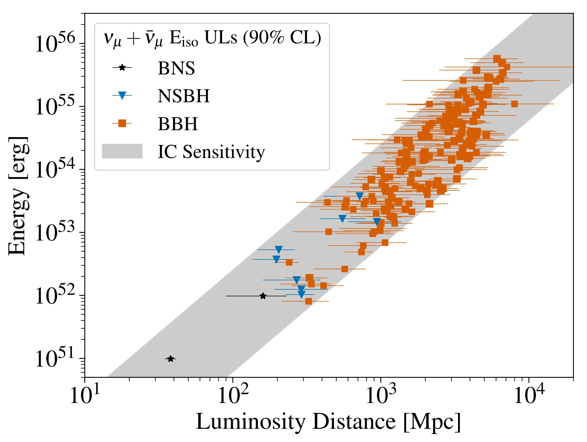
图注：\(\eiso\)~90\% CL $\nu_\mu+\bar{\nu}_\mu$ upper limits for each significant GW alert in runs O1-O4a. The gray band shows the IceCube point source sensitivity over all declinations for a $\pm500$ second time window. Distances and distance uncertainties for each event from \(\cite{gwtc1, gwtc2, gwtc2.1, gwtc3}\) and public FITS headers for O4a are shown. For GW170817, the distance uncertainty of the host galaxy is used \(\citep{gw170817_distance}.\) $\mathrm{E_{iso}}$ values are computed over the 90\% central energy range (500 GeV - 50 PeV), assuming a spectrum $F=dN/dE \propto E^{-2}$.
对应解读：建议重点查看的参数约束/灵敏度结果：O1-O4a显著GW告警的90% CL中微子各向同性等效能量上限。
入选理由：这是论文非探测结果转化为物理约束的核心图，直接展示每个GW事件的E_iso上限、距离不确定性以及IceCube点源灵敏度灰带，比单纯事件分布图更能支撑对论文主要结论的解读。
来源与置信度：\(arxiv_source\)；high；\(arxiv_source\) / main.tex:figure[5]
Fig03
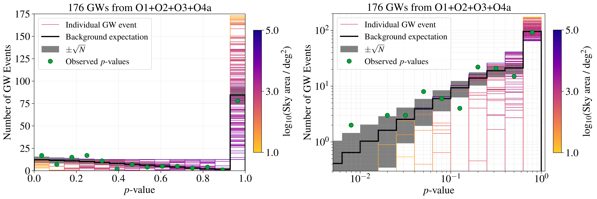
图注：Histogram of $p$-values from the UML search for GW events during O1-O4a. Observed $p$-values in each bin are shown as green points. The background expectation for the ensemble of GW events is shown in the black line, with the Poisson uncertainty ($\sqrt{N}$) indicated by the gray band. The background-only expectation for each GW event is shown in the colored histograms, with the color representing the 90\% containment area of that event’s skymap. There are 30,000 background-only pseudo-experiments for each GW event, as shown in Fig.~\(\ref{fig:uml_bkg_ts}.\) The distribution is shown with linear bins (top) and log-scaled bins (bottom).
对应解读：模型拟合/似然检验诊断：UML搜索的p值分布与背景期望比较。
入选理由：图中同时给出观测p值、背景期望黑线和泊松不确定性灰带，是判断是否存在统计显著中微子关联的关键诊断图；与论文‘未发现显著发射’的主结论直接相关。
来源与置信度：\(arxiv_source\)；high；\(arxiv_source\) / main.tex:figure[3]
Fig06
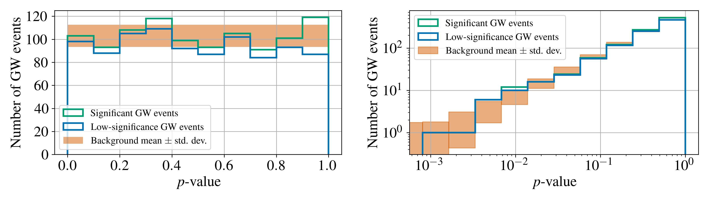
图注：The $p$-value distribution of the results of the LLAMA pipeline, with linear (top) and logarithmic (bottom) bins. The $p$-value distributions for the coincidences of significant and low-significance GW events are distinguished and stacked on top each other. The expected distribution of the background $p$-values is a uniform distribution. The error bands represent binomial uncertainties. The leftmost error band on the bottom figure is for the bin starting from 0.
对应解读：模型拟合/统计显著性诊断：LLAMA贝叶斯管线的p值分布。
入选理由：该图检验另一条独立分析管线在显著和低显著GW事件上的p值是否偏离均匀背景分布，并包含误差带；与Fig03互补，能说明两种方法均未发现显著超额。
来源与置信度：\(arxiv_source\)；high；\(arxiv_source\) / main.tex:figure[6]
Fig09
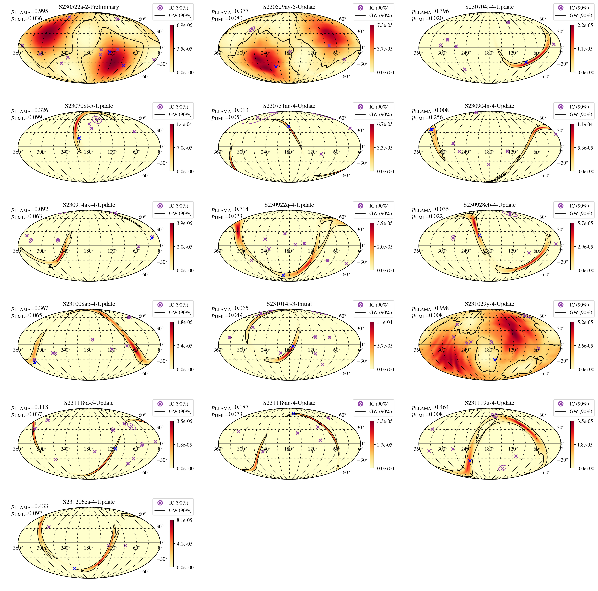
图注：Individual skymaps for the $\pm500$ second timescale follow-up. Probability localization regions for the GW events are shown in the colorscale, with the 90\% containment contour shown in black. Overlaid are the IceCube neutrino events, with blue crosses representing the best-fit neutrino direction and the circularized 90\% containment error region in blue circles. All significant alerts which had an overall $p$-value in either analysis less than 0.1 in either analysis are shown, with $p$-values for each alert in the two pipelines annotated on each panel. Individual neutrino events which had a per-event $p$-value less than 10\% are indicated in blue, while other neutrinos in the on-time window are indicated in darker purple.
对应解读：关键图表逐图导读：±500秒随动搜索中低p值事件的GW定位图与IceCube中微子方向叠加。
入选理由：这是最直观展示候选空间符合情况的图，包含GW概率定位、90%等概率轮廓、中微子方向和90%误差圈以及两条管线p值标注，适合解释具体事件为何未达到显著关联。
来源与置信度：\(arxiv_source\)；high；\(arxiv_source\) / main.tex:figure[9]
Fig02
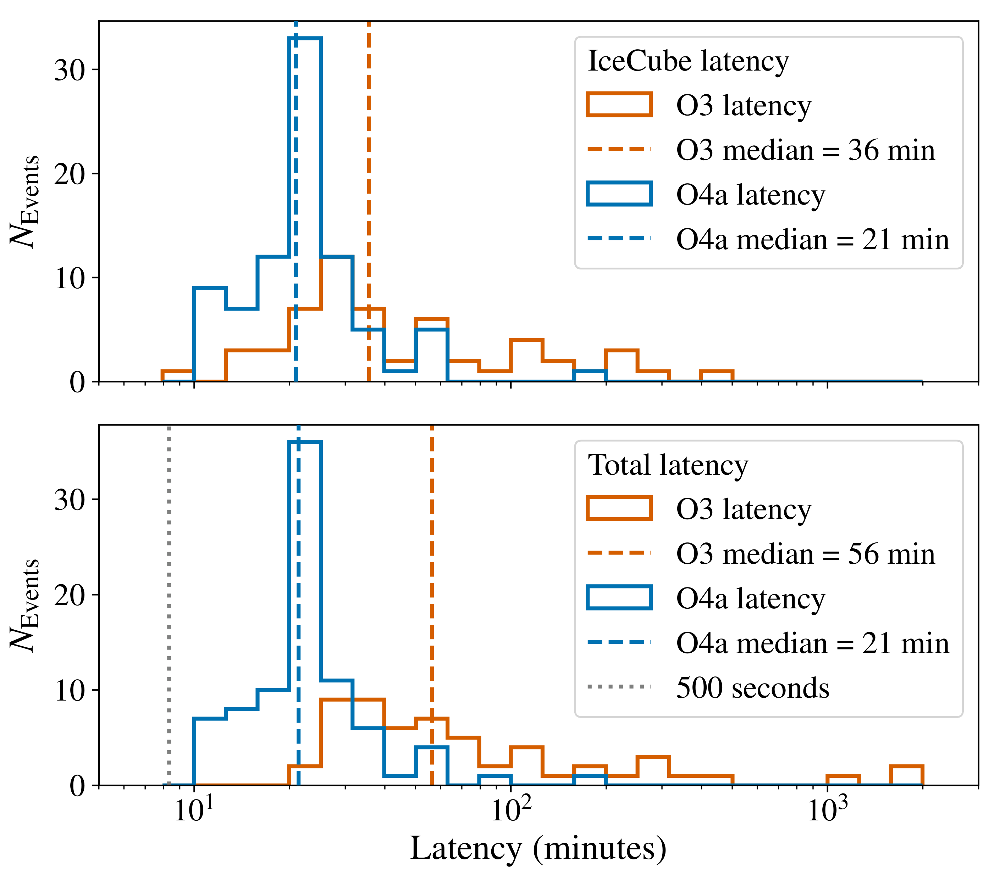
图注：Latency distributions for GW events in O3 and for the first map received for each significant event in O4a. The IceCube latency (top) is the time delay from the receipt of the LVK Notice and publication of the IceCube results GCN, while the total latency (bottom) is defined as the delay between the merger time and publication of the IceCube results. In O4a, most events are sent automatically as GCN Notices, with the exception of events during the engineering run preceding O4a, which were sent as GCN Circulars with human-in-the-loop approval. On the total latency histogram (bottom) 500 seconds after the merger time is plotted (dotted), indicating the end of the analysis time window. Latencies are calculated from publication times of LVK and IceCube public GCN Notices and GCN Circulars \(\citep{gcn}.\)
对应解读：建议重点查看的实时搜索性能图：O3与O4a中IceCube响应延迟和总延迟分布。
入选理由：论文强调O4a在线管线改进和自动发送GCN显著降低响应时间；该图直接量化IceCube延迟、总延迟，并标出500秒分析窗口，对理解实时随动搜索能力很重要。
来源与置信度：\(arxiv_source\)；high；\(arxiv_source\) / main.tex:figure[2]
Fig08
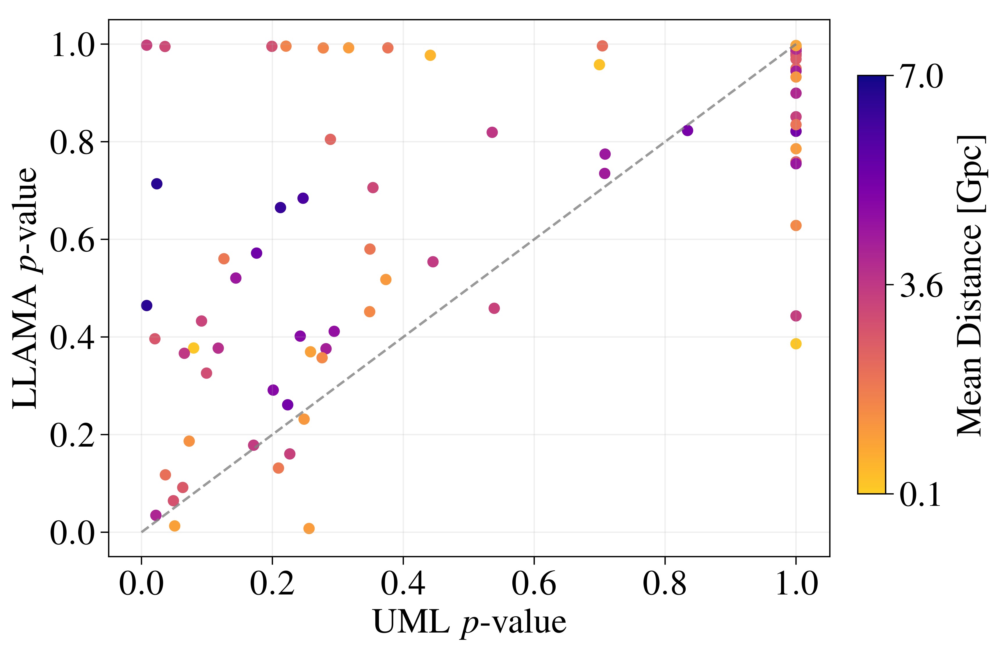
图注：Comparison of pre-trials $p$-values of the significant alerts from the two analysis pipelines for events during O4a. The color scale indicates the mean of the distance posterior to a given GW event for the most recent skymap.
对应解读：模型/管线比较：O4a显著告警在UML与LLAMA两种分析管线中的pre-trials p值对比。
入选理由：该图直接比较两条独立管线对同一批O4a事件的显著性评估，并用颜色编码GW距离后验均值，有助于检查结果一致性和潜在距离相关系统差异。
来源与置信度：\(arxiv_source\)；high；\(arxiv_source\) / main.tex:figure[8]
强相关工作
同事件/同源背景方面，本文不是围绕一个命名瞬变，而是 O4a 期间 LVK compact-binary-coalescence 实时告警流的 IceCube 跟进；因此最接近的是同类“GW catalog / alert follow-up with high-energy neutrinos”论文。应从 IceCube 对 O1/O2/O3 GW 事件的中微子搜索、GW170817 的高能中微子非探测、以及 GWTC-2/GWTC-3 多信使 follow-up 论文开始查。可靠入口包括本文 arXiv 页面 https://arxiv.org/abs/2606.13762 ，LVK 公开告警页 https://gracedb.ligo.org/ ，IceCube 实时告警/新闻页 https://icecube.wisc.edu/ ，以及 NASA ADS 检索关键词 “IceCube gravitational wave neutrino follow-up O3”, “GW170817 high-energy neutrinos IceCube ANTARES Auger”, “LLAMA gravitational wave neutrino Bayesian”.
基础工作方面，GW170817 是原型事件：可检索 “Search for high-energy neutrinos from binary neutron star merger GW170817” 和 arXiv:1710.05839/1710.05832 相关多信使论文；IceCube、ANTARES、Pierre Auger 对 GW170817 的非探测给出了早期中微子上限。GWTC catalog 则提供 O1–O3 紧致双星群体背景，可从 LVK GWTC-1、GWTC-2、GWTC-3 论文和 GWOSC 页面 https://www.gw-openscience.org/ 进入。本文 Fig. 5 把 O1–O4a significant alerts 放在一起，因此读者应把它当作 catalog-level continuation，而非孤立 O4a 结果。
相似方法方面，应查 IceCube point-source unbinned likelihood、time-dependent neutrino transient search、GCN realtime neutrino follow-up，以及 LLAMA pipeline 的方法论文。检索路径可以用 NASA ADS 或 arXiv 搜 “unbinned maximum likelihood IceCube gravitational wave follow-up”, “LLAMA pipeline neutrino gravitational wave”, “Bayesian multimessenger association neutrino gravitational wave”。若无法确认具体论文编号，不要硬填 DOI；应回到本文 bibliography 查 LLAMA 与 UML 首次应用于 GW transient 的引用。
潜在张力线索主要来自模型论文而非观测论文：某些 NSBH/BNS choked jet、magnetar remnant 或 baryon-rich outflow 模型可能预言在近距离事件中 IceCube 可探测的 fluence；但非探测上限是否排除这些模型，取决于距离、视角、喷流能量、baryon loading 和能谱 cutoff。建议检索 “high energy neutrinos neutron star merger choked jet”, “neutrinos NSBH merger IceCube upper limits”, “BNS merger hadronic jet neutrino emission” 并把模型预测的 fluence 与本文 Fig. 5 的事件级上限逐一比较。
同一事件 / 同类源线索：
（未提供）
相似工作：
（未提供）
基础理论 / 方法工作：
（未提供）
相反观点 / 张力线索：
（未提供）
5. Resolving the temporal evolution of M87 jet with $\lesssim0.1$-arcsec Chandra observations
- 来源：arXiv / astro-ph.HE
- 链接：https://arxiv.org/abs/2606.13800v1
- 作者：Camille Poitras, Gerrit Schellenberger, Ralph Kraft, Paul Nulsen, Marie-Lou Gendron-Marsolais, Eileen Meyer
- 评分：novelty 8/10，importance 8/10，relevance 8/10，final 9.00/10
- 推荐理由：13年Chandra/HRC-I亚角秒研究M87喷流时间演化，解析HST-1和下游结结构、同步冷却和超光速运动；对AGN喷流粒子加速和高能X射线辐射非常相关。
中文题目：用优于 \(0.1\) 角秒的 Chandra 观测分辨 M87 喷流的时间演化
做了什么：这篇论文把 Chandra/HRC-I 对 M87 千秒差距尺度喷流的 13 年 X 射线观测重新做了点扩散函数反卷积，目标是把过去在 \(\sim 0.5\) 角秒视宁度下混在一起的喷流结、子结构和运动拆开。作者在 HST-1、knot A 等区域看到更细的形态，测到喷流整体 X 射线通量在十几年内显著下降，最大可达 \(84\%\)，并用同步辐射冷却时间估算了局部磁场下限。论文还把 X 射线图像与 ALMA、JWST、HST 的低能波段形态比较，发现 X 射线峰通常相对低能辐射更靠上游，符合高能电子更快冷却、加速区更靠近激波或耗散前沿的图像。最后，作者利用多历元结构位置测量得到既有准静止特征也有视超光速运动，HST-1 的表观速度可到 \(4.8c\)，并强调未分辨成分混合会系统性偏置自行速度。
为什么重要：M87 是距离近、角尺度大、黑洞质量和喷流方向约束较好的相对论喷流标杆源；EHT 看的是事件视界尺度，HST、ALMA、JWST 看的是较低能电子和较长冷却时间的结构，而 Chandra X 射线正好追踪寿命短、能量高的同步辐射电子。本文重要之处在于，它不是只给一张更清晰的图，而是把十几年基线上的形态、亮度衰减和自行测量放在同一个高角分辨率框架中，直接检验喷流中粒子加速、冷却和图像混合偏差。
理论 / 观测 / 仪器方法价值：对理论而言，论文把 X 射线衰减时间转化为 HST-1 和 knot A 的磁场下限，为喷流耗散区的磁场强度和电子寿命提供了可检验尺度。对观测而言，它展示了 Chandra/HRC-I 经过谨慎 PSF 反卷积后仍能在亚角秒以下做时间域成像，而不只是静态测光。对方法而言，它提醒用多历元图像测喷流 knot 速度时，若没有分辨内部子结构，得到的速度可能是多个成分加权质心的运动，而非真实等离子体或扰动速度。
为什么应该关注：如果你关心喷流能量如何从黑洞附近输运到千秒差距尺度、哪里加速最高能电子、以及为何不同波段看到的 knot 位置不完全重合，这篇文章值得看。它把 M87 这个同一源上的多波段、长时间基线和高分辨率优势用得很充分，也给未来 AXIS、Lynx 或更高分辨率 X 射线成像任务提出了一个很具体的科学案例：只有分辨结构，才能不把冷却、运动和混合误认为同一种变化。
展开详细解读：文章讲解、背景、理论、重点章节、图表与相关工作
文章详细讲解
科学问题：M87 喷流的千秒差距尺度结构长期被用来研究相对论喷流的粒子加速和能量耗散，但 X 射线角分辨率一直是瓶颈。Chandra 名义上已经是目前最强的 X 射线成像望远镜之一，但 M87 喷流中 HST-1、knot D、knot A 等区域的内部成分仍会在常规图像中相互混合。问题不只是图像好不好看，而是若不同子结构具有不同亮度衰减和不同速度，混合后的测光和质心运动会直接误导同步冷却时间、磁场强度和表观速度的推断。
作者怎么做：论文使用 13 年跨度的 Chandra/HRC-I 观测，选择 HRC-I 是因为它没有 ACIS 那样的能谱优势，但具有适合高精度成像的空间响应和较少的 pile-up 问题。作者对各历元图像进行配准、PSF 建模和反卷积，试图达到 \(\lesssim 0.1\) 角秒的有效分辨能力。随后他们在反卷积图像中识别喷流结和子成分，进行区域测光、时间衰减拟合、与 ALMA/JWST/HST 图像的空间对齐比较，并用多历元位置变化估算自行。
关键结果：反卷积图像显示 HST-1 至少包含两个过去容易混在一起的 X 射线成分，下游 knot 的形态也比常规图像复杂。喷流 X 射线整体变暗，部分区域下降幅度可到 \(84\%\)，这被解释为高能同步辐射电子在十几年时间尺度上的冷却或加速供给减弱。若把衰减时间与同步辐射冷却时间相联系，得到 HST-1 的最小磁场约为 \(324\) 至 \(1006\,\mu\mathrm{G}\)，knot A 约为 \(41\) 至 \(115\,\mu\mathrm{G}\)。多波段比较显示 X 射线结构总体跟低能波段的喷流宽度和 knot 位置对应，但 X 射线峰更常在上游，这正是高能电子寿命更短、辐射更靠近加速前沿的预期。
局限和下一步：反卷积不能凭空创造信息，它依赖 PSF 模型、计数统计、配准精度和正则化选择；因此子结构的真实性需要通过多历元一致性、模拟注入和不同反卷积参数来检验。HRC-I 缺乏能谱分辨率，使得光谱软化、吸收变化或不同电子谱分量的区分不如 ACIS 或未来任务。自行测量也不一定等于物质流速度，可能是激波图样速度、亮度峰迁移或多个成分的加权质心运动。下一步最自然的是把这些反卷积形态与同时段的 HST、JWST、ALMA、VLBI 以及 TeV 活动曲线做联合时变模型，并用三维 relativistic MHD 加粒子输运模拟检验上游偏移和衰减时间是否可同时解释。
关键结果是怎么做出来的
这篇文章的证据链从样本选择开始：作者没有做 M87 的单历元快照，而是选取跨越约 13 年的 Chandra/HRC-I 数据来追踪同一批千秒差距喷流结构的变化。HRC-I 的关键价值是稳定的高空间分辨成像；代价是能谱信息弱。因此论文的主要观测量不是逐点光谱指数，而是反卷积后的图像形态、区域计数率或通量、亮度峰位置及其随时间变化。
最重要的技术步骤是 PSF 反卷积和历元配准。作者需要证明 HST-1 的两个成分和下游 knot 的复杂形态不是反卷积伪影。读者应重点看论文中原始图像、PSF 反卷积图像和多历元对比图：若同一子结构在相邻历元或不同处理设置下稳定出现，可信度就高；若结构只在低计数区域或强梯度附近出现，则需要谨慎。作者还强调未分辨混合会影响自行，这一点通常可通过比较单高斯质心、多个子成分拟合和图像互相关位移来诊断。
通量衰减结果是本文的物理核心。作者测到喷流不同区域 X 射线亮度普遍下降，最大衰减幅度约 \(84\%\)。这不是简单的总源变暗，因为不同 knot 的衰减幅度和形态变化并不完全相同。论文将衰减时间尺度与同步辐射冷却时间比较，从而给出磁场下限：HST-1 约 \(324\) 至 \(1006\,\mu\mathrm{G}\)，knot A 约 \(41\) 至 \(115\,\mu\mathrm{G}\)。读者应检查支撑这个推断的光变曲线、指数或线性衰减拟合、通量误差条，以及是否考虑了背景、曝光、有效面积和区域边界变化。
自行结果依赖多历元亮度峰或子结构位置测量。作者报告 HST-1 可达 \(4.8c\) 的视超光速运动，同时也存在准静止结构。这里的显著性不是粒子物理式的单一 \(\sigma\) 发现，而更像位置误差、历元基线和模型选择共同决定的运动学约束。重点应看位置对时间的拟合图、斜率置信区间、不同成分识别方案是否给出一致速度，以及把多个子结构混成一个 knot 时速度如何变化。
多波段比较是把观测结果接上物理解释的部分。作者将 Chandra X 射线结构与 ALMA、JWST、HST 低能图像对齐，发现喷流宽度和 knot 大致对应，但 X 射线峰常偏上游。这个结果支持高能电子在加速区附近辐射后快速冷却，而低能电子能被带到更下游继续发射。系统误差主要来自跨波段天体测量对齐、不同波段分辨率差异、非同时观测导致的时变偏差，以及不同辐射机制或电子能段采样的不完全一致。
展开背景、理论、公式、模型、章节和图表导读
背景知识
M87 是 Virgo 星系团中心的巨椭圆星系，拥有质量约几十亿太阳质量的超大质量黑洞和一条角尺度很大的相对论喷流。由于距离近，\(1\) 角秒对应几十秒差距量级，M87 成为少数能在射电、红外、光学、紫外和 X 射线中直接分辨喷流结的活动星系核之一。EHT 解析了黑洞阴影和事件视界尺度喷流根部，而 Chandra、HST、ALMA、JWST 则研究喷流在更大尺度上如何维持准直、加速粒子和耗散能量。
M87 喷流中的 HST-1 是历史上最受关注的结构之一。它位于核心外侧约 \(1\) 角秒附近，曾发生强烈的光学、紫外和 X 射线耀发，也被讨论为 TeV 高能活动的可能关联区域。HST-1 的特殊之处在于它既靠近核心又能被空间分辨，是连接亚秒差距 VLBI 喷流和千秒差距喷流 knot 的关键桥梁。若 HST-1 内部有多个成分，其亮度和运动就不能用单一激波或单一等离子团块简单描述。
从历史上看，M87 喷流的 knot 速度测量一直存在分歧：有些结构接近静止，有些显示视超光速运动。理论上这并不矛盾，因为观测到的亮度峰可以是流体团块、激波、剪切层、不稳定性波包或磁重联区，图样速度未必等于 bulk Lorentz factor。分辨率不足时，不同速度的成分混在同一波束内，会使测到的质心速度依赖亮度权重，而不是几何运动本身。
为什么现在值得重新看？一方面，Chandra 长期运行积累了足够长的时间基线，使十年量级的同步冷却和自行可以被测量；另一方面，ALMA、JWST、HST 和 EHT 已经为同一源提供了前所未有的多尺度、多波段参照。现在的问题不再是单独判断某个 knot 是否发光，而是要问高能电子在哪里被加速、不同能段辐射峰为什么错位、哪些结构是稳定耗散点、哪些是移动扰动。
常见误区包括：把 X 射线峰当成喷流物质本身的位置，把表观超光速当成违反相对论，把多波段峰值错位简单归因于配准误差，或把通量下降等同于喷流总功率下降。实际上，X 射线同步辐射对最高能电子极其敏感，局部加速效率、磁场、冷却和多普勒因子的小变化都可能造成强烈亮度变化。本文的价值正是在更高分辨率下把这些效应尽量拆开。
基础理论 / 方法脉络
物理图像从同步辐射开始。相对论电子在磁场中回旋并辐射，电子能量越高、磁场越强，特征辐射频率越高，同时冷却越快。X 射线同步辐射要求电子洛伦兹因子很高，因此这些电子的寿命通常远短于射电或红外电子。于是 X 射线图像更像是近期加速位置的示踪，而射电、红外、光学图像则更容易包含被输运到下游的较低能电子。
M87 喷流是相对论性流，观测亮度还受多普勒增强影响。若喷流与视线夹角较小，图样速度可以显示为视超光速，即天空平面投影速度超过 \(c\)。这不代表真实速度超光速，而是光行时效应。对同一条喷流，准静止结构和超光速结构可以共存：前者可能是驻波、再准直激波或局部障碍，后者可能是沿喷流传播的扰动。
本文的关键假设之一是，十年尺度 X 射线衰减至少部分反映同步辐射冷却。若某个区域没有持续注入高能电子，X 射线发射会随电子能谱高能端耗尽而下降。把观测衰减时间与同步冷却时间相等或比较，可以反推磁场的下限。这里的下限含义很重要：若还有绝热膨胀、逃逸、加速开关变化或多普勒因子变化，单纯用冷却解释会改变磁场估计。
观测方法上，HRC-I 图像需要经过曝光校正、背景处理、天体测量配准和 PSF 反卷积。反卷积提高的是对已存在空间信息的恢复能力，而不是无限制地超分辨。它对高信噪比、稳定 PSF、准确配准和合理正则化很敏感。对 M87 这类亮核心加喷流结构，核心散射翼、局部背景、区域重叠和时变仪器响应都可能影响弱结构测量。
主要退化关系包括磁场与电子能量的退化、冷却与注入变化的退化、真实运动与亮度峰迁移的退化，以及分辨率与成分数目的退化。例如同样的 X 射线峰上游偏移，可以由快速冷却造成，也可能由局部磁场增强或加速区几何投影造成。本文通过多波段位置、长时间光变和自行测量同时约束这些退化，但并不能完全消除它们。
公式与推导
第一步是同步辐射的特征频率。对洛伦兹因子为 \(\gamma\) 的电子，在磁场 \(B\) 中辐射的典型频率可写为
其中 \(e\) 是元电荷，\(m_{\rm e}\) 是电子质量，\(c\) 是光速，\(\delta\) 是多普勒因子，\(z\) 是红移。这个式子说明给定观测 X 射线频率 \(\nu_{\rm syn}\)，所需 \(\gamma\) 随 \(B^{-1/2}\) 变化。
第二步是电子同步辐射损失。单个相对论电子的辐射功率近似为
其中 \(\sigma_{\rm T}\) 是 Thomson 截面，\(U_B\) 是磁场能量密度。电子能量为 \(E=\gamma m_{\rm e}c^2\)，因此高能电子因 \(P_{\rm syn}\propto B^2\gamma^2\) 而最先冷却。
第三步得到同步冷却时间：
把第一式中的 \(\gamma\) 消去，可得到给定观测频率的冷却时间标度
这正是本文用亮度衰减时间估算局部磁场下限的物理阶梯：若 X 射线在时间 \(t_{\rm fade}\) 内显著衰减，则要求 \(t_{\rm syn}\lesssim t_{\rm fade}\) 或同量级。
第四步可把这个不等式写成磁场约束：
这里 \(\nu_{\rm X}\) 是 X 射线频率或有效能段对应频率，\(t_{\rm fade}\) 是观测到的衰减时间。该式的适用条件是衰减主要由同步冷却控制，且没有强烈持续再加速。
第五步是从计数到通量。对 HRC-I 这类成像观测，某一区域的净计数率可表示为
其中 \(C_{\rm src}\) 是源区计数，\(C_{\rm bkg}\) 是背景区计数，\(\alpha\) 是面积和曝光缩放因子，\(T_{\rm exp}\) 是有效曝光时间。若采用响应矩阵或能量转换因子 \({\cal K}\)，通量可写作 \(F_{\rm X}\simeq {\cal K}R_{\rm net}\)。
第六步是描述光变衰减。常见近似是指数形式
其中 \(F_0\) 是初始可变分量，\(F_{\rm q}\) 是准稳态底噪或不可变分量，\(\tau\) 是衰减时间。若论文采用分段线性或比例下降，物理解释仍是用观测衰减尺度与 \(t_{\rm syn}\) 比较。
第七步是 PSF 卷积和反卷积的观测模型。探测器图像 \(D(x,y)\) 可写为
其中 \(I(x,y)\) 是真实天空亮度，\(P(x,y)\) 是 PSF，\(E(x,y)\) 是曝光图，\(B(x,y)\) 是背景，\(N(x,y)\) 是 Poisson 噪声。反卷积的目标是估计 \(I(x,y)\)，但结果受 \(P(x,y)\) 和噪声强烈约束。
第八步是自行与表观速度。若角位置变化为 \(\mu\)，角径距离为 \(D_A\)，则天空平面表观速度为
相对论光行时给出
其中 \(\beta c\) 是真实图样速度，\(\theta\) 是与视线夹角。本文报告的 \(\beta_{\rm app}\) 到 \(4.8\) 量级可由 \(\beta<1\) 且 \(\theta\) 较小自然产生。
第九步是位置拟合的统计形式。若第 \(i\) 个历元位置为 \(x_i\)，误差为 \(\sigma_{x,i}\)，线性运动模型为
通过最小化 \(\chi^2\) 或构造 Gaussian likelihood，可得到 \(\mu\) 的置信区间。若一个区域实际含有多个成分，\(x_i\) 可能只是亮度加权质心，速度就会被混合偏置。
第十步是成分混合偏差。两个未分辨成分的位置为 \(x_1\)、\(x_2\)，通量为 \(F_1\)、\(F_2\)，观测质心近似为
即使 \(x_1\) 和 \(x_2\) 不动，只要 \(F_1/F_2\) 随时间变化，\(x_{\rm cen}\) 也会漂移。这就是本文强调高分辨反卷积对自行测量至关重要的数学原因。
模型拟合 / 应用方法
本文的拟合主要分为三类：图像重建、通量时间演化和位置运动学。图像重建不是传统意义上的少参数物理模型拟合，而是在给定 PSF、曝光和噪声统计下恢复天空亮度分布。反卷积结果需要用模拟 PSF、不同迭代次数或正则化选择、以及原始图像残差来评估。读者应关注重建后是否出现过锐、振铃或沿 PSF 方向的假结构。
通量拟合的核心量是各喷流区域的净计数率或转换后的 X 射线通量随时间变化。可采用指数衰减、线性下降或分段模型来描述，但物理解释通常落到冷却时间、持续注入和底噪分量之间的竞争。参数退化很明显：较大的底噪 \(F_{\rm q}\) 会改变可变分量衰减时间 \(\tau\)，区域边界选择会改变混入的稳定成分比例，响应转换因子则依赖假定谱形。
位置拟合通常可用亮度峰追踪、二维高斯成分拟合、图像互相关或 ridge-line 位移。本文强调成分混合会偏置速度，因此模型选择本身就是系统误差来源：单成分模型可能给出平滑但错误的速度，多成分模型则可能受限于计数和分辨率而不唯一。一个好的诊断是看残差是否有系统弯曲、不同历元是否需要改变成分数、以及速度置信区间是否覆盖准静止解。
磁场估计不是直接测得的，而是由衰减时间与同步冷却公式推导。这里的先验假设包括 X 射线确为同步辐射、衰减主要由辐射冷却而非注入变化控制、局部多普勒因子变化不主导光变、以及有效 X 射线频率和谱形近似合理。若存在绝热冷却或电子逃逸，磁场下限可能被重新解释；若存在持续再加速，则同样的衰减可能要求更强或更复杂的磁场结构。
实际应用中，这类模型适合回答哪些 knot 是稳定耗散点、哪些是移动扰动、哪里存在高能电子新鲜注入，以及不同波段峰值偏移是否符合冷却输运图像。模型可能失败的地方包括：三维几何投影过强、喷流横向速度剪切造成不同层发射混合、跨波段数据非同时导致假偏移、以及 HRC-I 缺乏能谱信息导致不能区分谱变和通量变。未来若结合 ACIS 光谱、JWST 近红外谱指数、ALMA 偏振和 VLBI 运动学，可显著减少这些退化。
重点章节 / 结果段落怎么读
数据和样本部分应先看。重点是 13 年 Chandra/HRC-I 历元如何选择、每个历元曝光和观测模式是否一致、是否排除了异常背景、怎样做绝对和相对天体测量配准。对这篇文章，配准精度几乎和科学结论同等重要，因为 \(\lesssim 0.1\) 角秒结构和自行都依赖它。
PSF 反卷积方法部分是技术核心。读者应查作者使用的 PSF 模型、反卷积算法、迭代或正则化准则，以及他们如何证明新出现的子结构不是处理伪影。特别要看是否有未反卷积图像、反卷积图像和模型残差的并列比较。
形态与通量演化结果部分应和图表一起读。这里通常会列出 HST-1、knot A 及下游结构的通量变化、峰值位置和形态描述。不要只看最大 \(84\%\) 衰减这个数字，还要看哪些区域衰减、哪些区域相对稳定，以及误差条和系统误差是否足以改变结论。
多波段比较部分连接物理解释。读者应关注 ALMA、JWST、HST 与 Chandra 的配准方式、分辨率匹配方式，以及 X 射线峰相对低能峰的上游偏移是否在多个 knot 中重复出现。若偏移只在少数边缘区域出现，应谨慎；若沿喷流系统性存在，则支持冷却输运图像。
自行和讨论部分要特别关注成分识别。作者报告准静止与超光速成分并存，并指出未分辨混合可显著影响速度。读者应把这部分和反卷积图像一起看：速度不是抽象斜率，而是某个被识别结构在多历元中的位置变化；若结构身份随时间不清，速度解释也应降级。
建议重点查看的图表
-
多历元 Chandra/HRC-I 原始或平滑图像：看喷流整体亮度是否随时间系统下降，核心和喷流之间的动态范围如何处理。
-
PSF 反卷积前后对比图：重点检查 HST-1 是否确实分成两个成分，下游 knot 的复杂形态是否与 PSF 方向或噪声结构相关。
-
HST-1 和 knot A 的光变曲线：看通量下降幅度、误差条、是否存在底噪分量，以及最大 \(84\%\) 衰减来自哪个区域或统计定义。
-
同步冷却磁场约束图或表：检查 HST-1 的 \(324\) 至 \(1006\,\mu\mathrm{G}\) 和 knot A 的 \(41\) 至 \(115\,\mu\mathrm{G}\) 如何随衰减时间、多普勒因子或频率假设变化。
-
多波段叠加图：看 ALMA、JWST、HST 和 Chandra 的峰值是否沿喷流方向有系统偏移，尤其要检查坐标对齐误差和分辨率匹配。
-
自行位置对时间图：看线性拟合斜率、置信区间、准静止成分和超光速成分的区分，以及 HST-1 的 \(4.8c\) 是否由少数历元主导。
-
成分混合或模拟诊断图：如果论文提供，应重点看未分辨多成分如何改变质心速度，这是本文方法学结论的关键证据。
关键图表逐图导读
图 1：通常应是 M87 喷流的 Chandra/HRC-I 总体图或多历元拼图。横纵轴应为空间坐标，常以角秒或相对核心位置表示；颜色或等高线表示 X 射线计数率或表面亮度。读图时先确认核心、HST-1、knot A 等主要结构的位置，再看喷流宽度和亮度梯度。陷阱是颜色拉伸会夸大弱结构，核心散射翼也可能影响近核心喷流。
图 2：反卷积前后对比图应是本文最值得细看的图之一。坐标轴仍为空间位置，面板可能分别显示原始 HRC-I 图像、PSF 反卷积图像和残差或轮廓。关键是 HST-1 的双成分是否在反卷积后清楚分开，下游 knot 是否显示非单峰结构。读图陷阱是反卷积常会产生过锐结构，因此要同时看残差、噪声水平和多历元重复性。
图 3：通量随时间变化图应展示不同 knot 或区域的 X 射线计数率/通量随年份变化。横轴是观测时间，纵轴是通量或归一化亮度，数据点带误差条，模型线可能是指数衰减或趋势线。主要结论是多数喷流区域在十几年内变暗，局部下降可达 \(84\%\)。陷阱是区域边界、背景扣除和不同历元曝光差异会影响低表面亮度区。
图 4：多波段叠加图可能把 Chandra X 射线轮廓叠在 ALMA、JWST 或 HST 图像上。读者应看 X 射线峰是否位于低能峰上游，以及喷流横向宽度是否一致。若图中有 beam 或 PSF 标记，要比较偏移量是否显著大于配准和分辨率误差。陷阱是不同波段非同时观测，时变结构可能造成看似空间偏移。
图 5：位置对时间或自行拟合图用于支撑 \(4.8c\) 等表观速度。横轴为年份，纵轴为沿喷流方向的位置或相对核心角距，点为各历元测量，直线为线性运动模型。关键是斜率是否显著非零、是否有准静止分量、以及高速结果是否受某个异常点控制。陷阱是把亮度峰运动误读为同一物质团块运动。
图 6：如果有磁场约束表或衰减时间到 \(B_{\min}\) 的转换图，应关注不同区域的 \(t_{\rm fade}\)、假定 \(\nu_{\rm X}\)、多普勒因子和所得磁场范围。该图或表的结论不是精确测量磁场，而是在同步冷却解释下给出量级约束。陷阱是忽略注入变化、绝热损失或多普勒因子变化导致的系统不确定性。
论文原图 / 可嵌入图片
Fig01
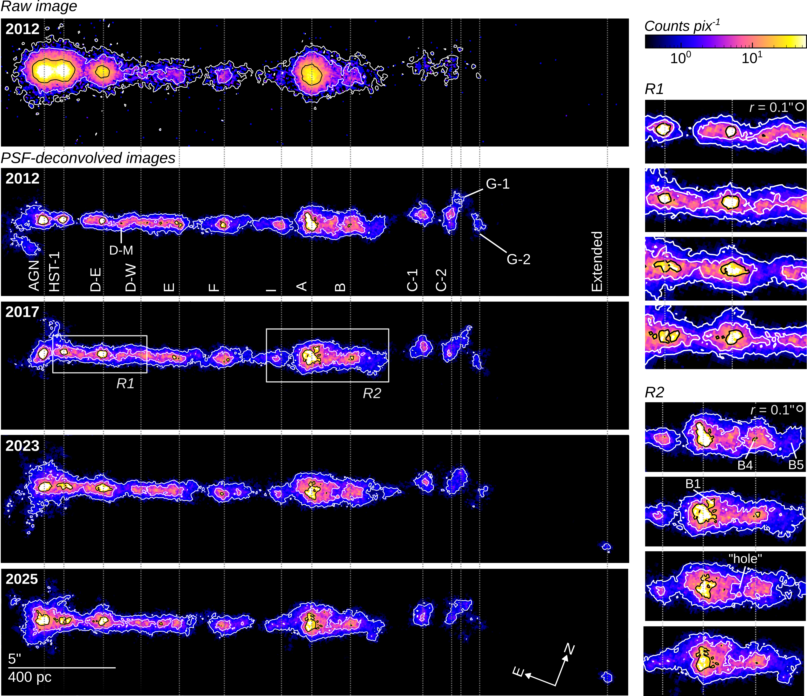
图注：\(\textit{Left panel:}\) Raw (non-deconvolved) image from 2012 (top), followed by PSF-deconvolved images for each epoch (2012 to 2025, from top to bottom), shown at a pixel scale of $0.0659\arcsec$. \(\textit{Right panel:}\) zoomed-in regions for each epoch (same top-to-bottom order), corresponding to the areas indicated in the 2017 panel. The positions of the AGN and jet knots are marked by dotted vertical lines to guide the eye. All images are rotated by $21^\circ$ northward from west. Pixel-to-pixel intensities are not directly comparable between epochs.
对应解读：对应“建议重点查看的图表”第1、2项，以及“关键图表逐图导读”图1/图2关于多历元 Chandra/HRC-I 图像和 PSF 反卷积结果的解读。
入选理由：这是全文最核心的形态学证据：同一图中同时给出2012原始图像和2012至2025各历元PSF反卷积图像，并标出AGN、HST-1和各knot位置，可直接检查HST-1双成分、下游复杂结构以及多历元形态重复性。相比单纯差分图，它更能支撑论文关于小于0.1角秒分辨率和子结构解析的主结论。
来源与置信度：\(arxiv_source\)；high；\(arxiv_source\) / MAIN.tex:figure[1]
Fig08
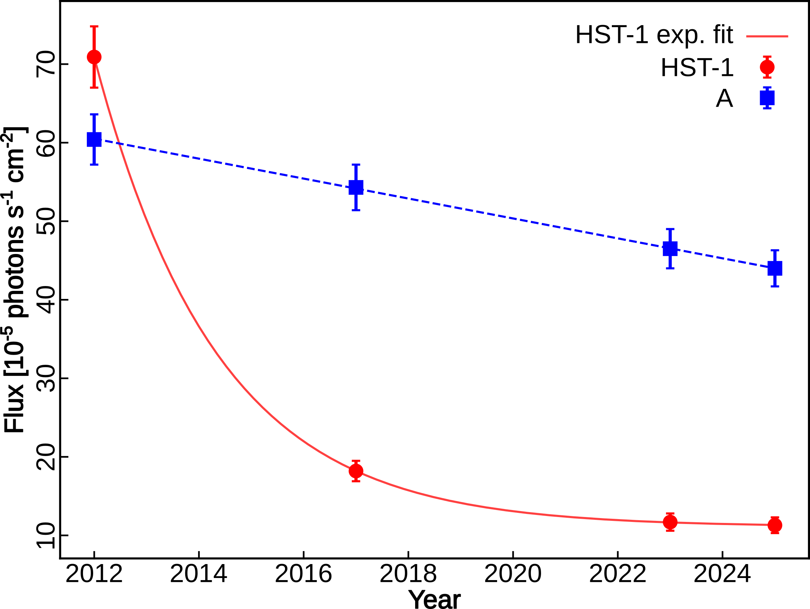
图注：Flux evolution of HST-1 (red circles) and knot A (blue squares) as a function of time. Knot A exhibits a linear decline over 12.9~yr, whereas HST-1 follows an exponential decay. The solid red curve shows the best-fit exponential model to HST-1, yielding an observed decay timescale of $(2.3 \pm 0.3)$~yr.
对应解读：对应“建议重点查看的图表”第3、4项，以及“关键图表逐图导读”图3/图6和模型拟合段落中关于HST-1、knot A光变、指数衰减、线性下降和同步冷却磁场估计的讨论。
入选理由：这张图直接展示HST-1和knot A的通量随时间演化，并明确给出HST-1指数衰减最佳拟合和观测衰减时标2.3±0.3年，是推导同步冷却时间、磁场范围以及最大变暗幅度的关键输入。它比差分图更适合检验光变模型、误差趋势和区域间差异。
来源与置信度：\(arxiv_source\)；high；\(arxiv_source\) / MAIN.tex:figure[8]
Fig04
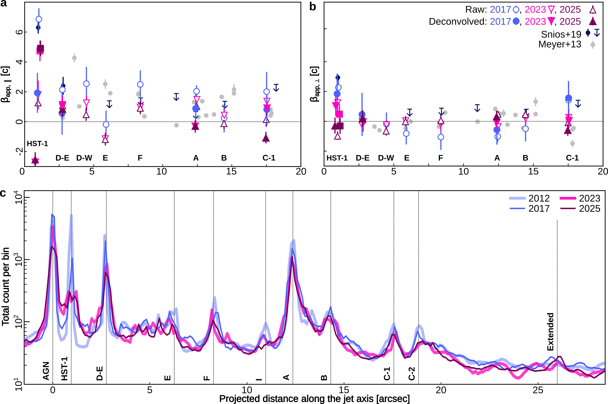
图注：\(\footnotesize\) Apparent velocities of jet features relative to the 2012 reference epoch. Panels (a) and (b) show the velocity components parallel and perpendicular to the jet axis for 2017 (blue circles), 2023 (magenta downward triangles), and 2025 (purple upward triangles). Unfilled and filled markers indicate measurements from the raw and deconvolved images, respectively; square markers denote the HST-1-down component (2023, 2025). Previous optical \(\citepalias{Meyer2013}\) and X-ray \(\citepalias{Snios2019}\) measurements are shown for comparison. (c) Normalized count profiles along the jet axis from the deconvolved images for each epoch (2012: thick blue; 2017: thin blue; 2023: thick magenta; 2025: thin purple). Vertical dotted lines indicate the feature positions.
对应解读：对应“建议重点查看的图表”第6、7项，以及“关键图表逐图导读”图5和模型拟合段落中关于自行、准静止/超光速成分、原始图像与反卷积图像速度差异、成分混合偏置的讨论。
入选理由：该图给出沿喷流和平行/垂直方向的表观速度，并区分原始图像与反卷积图像测量，还包含HST-1-down等成分和既有光学/X射线速度结果对比。它最能支撑4.8c表观运动以及未分辨成分会改变速度推断这一方法学结论。
来源与置信度：\(arxiv_source\)；high；\(arxiv_source\) / MAIN.tex:figure[4]
Fig10
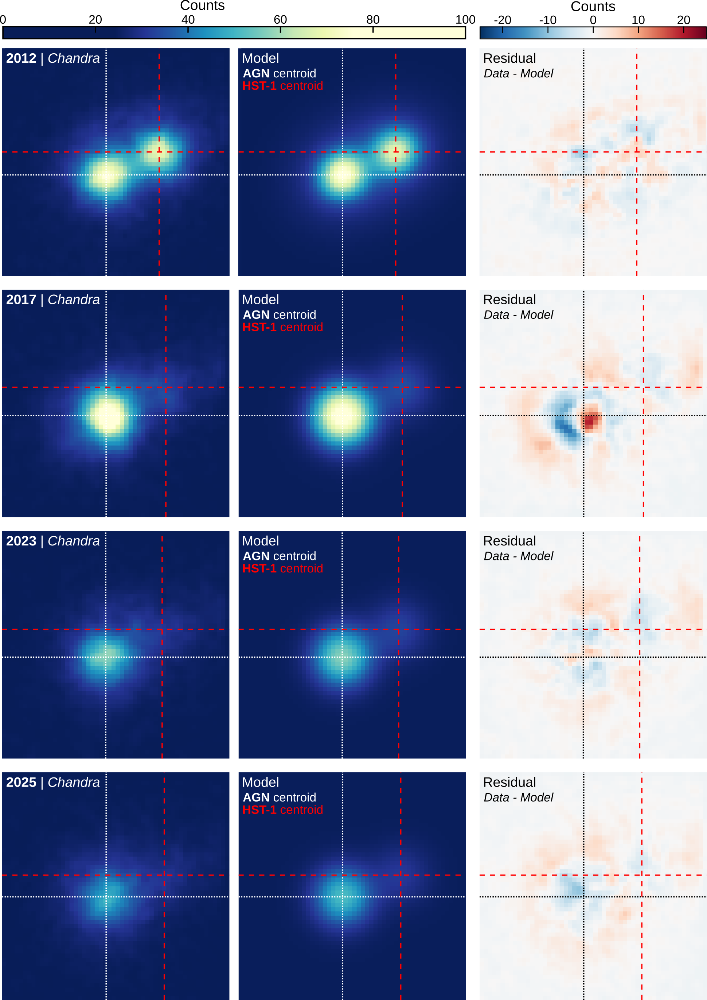
图注：\(\footnotesize\) \(\textit{Chandra}\) count images (\(\textit{left}\); binned to a pixel size of $0.0659\arcsec$), corresponding best-fit 2D models obtained with \(\texttt{Sherpa}\) (\textit{center}), and residual maps (\(\textit{right}\); defined as data $-$ model) from 2012 to 2025 (top to bottom). The dotted white/black and dashed red lines mark the fitted centroid positions of the AGN and HST-1, respectively.
对应解读：对应“建议重点查看的图表”第2、7项，以及模型拟合段落中关于二维模型、残差、质心位置和成分混合系统误差的讨论。
入选理由：这张图同时展示Chandra计数图像、Sherpa二维最佳拟合模型和data-model残差图，是候选图中唯一明确包含模型残差诊断的图。它可用于检查HST-1与AGN附近拟合质心是否稳定、单/多成分模型是否留下系统残差，以及反卷积或成分混合是否造成速度和位置偏置。
来源与置信度：\(arxiv_source\)；high；\(arxiv_source\) / MAIN.tex:figure[10]
Fig06
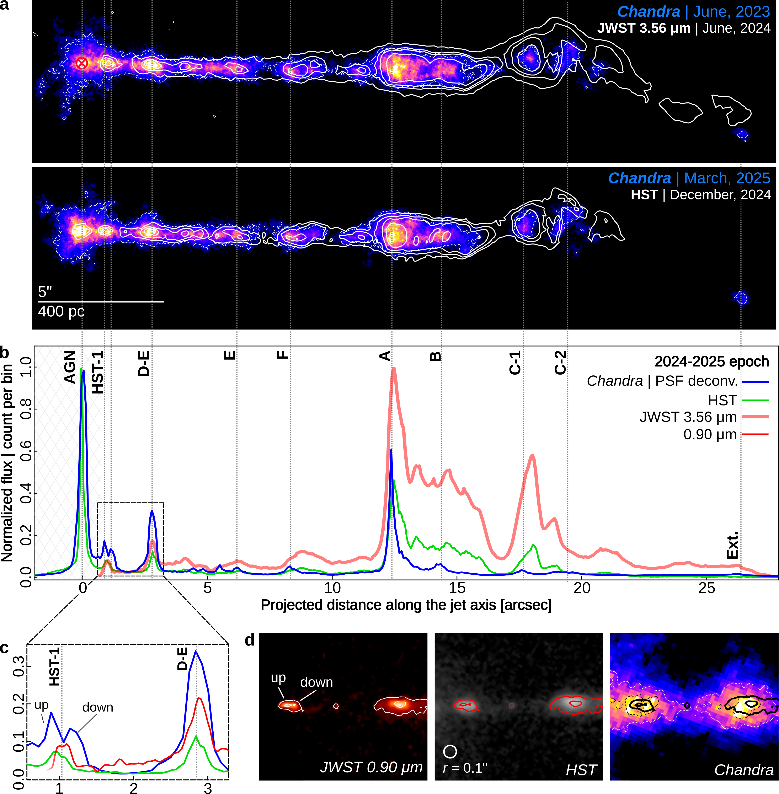
图注：\(\footnotesize\) (a) PSF-deconvolved images of the jet for epochs centered on June 2023 (top) and March 2025 (bottom), overlaid with contours from JWST 3.56~$\mu$m (June 2024; top) and HST/WFC3-UVIS data (December 2024; bottom). The AGN position, masked in the JWST data, is marked by a red circle with a cross. (b) Radial profiles along the jet axis comparing the 2025 X-ray data (thin blue line) with the HST (green line) and JWST 3.56~$\mu$m (thick pink line). Vertical dotted lines mark the positions of AGN and knots. (c) Zoomed-in radial profiles for HST-1 and knot D, highlighting resolved substructures; the JWST profile corresponds to the $\SI{0.90}{\mu m}$ data. (d) Corresponding multi-wavelength images of the jet (2024--2025), with JWST contours (solid lines) overlaid in each panel.
对应解读：对应“建议重点查看的图表”第5项，以及“关键图表逐图导读”图4中关于Chandra、JWST、HST多波段叠加、径向剖面、上游偏移和分辨率比较的讨论。
入选理由：该图覆盖2023至2025年的X射线反卷积图像，并叠加JWST和HST轮廓，还提供沿喷流径向剖面及HST-1、knot D放大剖面。它最适合检验近年多波段峰值是否系统偏移、X射线结构是否对应低能波段knot，以及JWST/HST/Chandra之间的形态一致性。
来源与置信度：\(arxiv_source\)；high；\(arxiv_source\) / MAIN.tex:figure[6]
Fig02
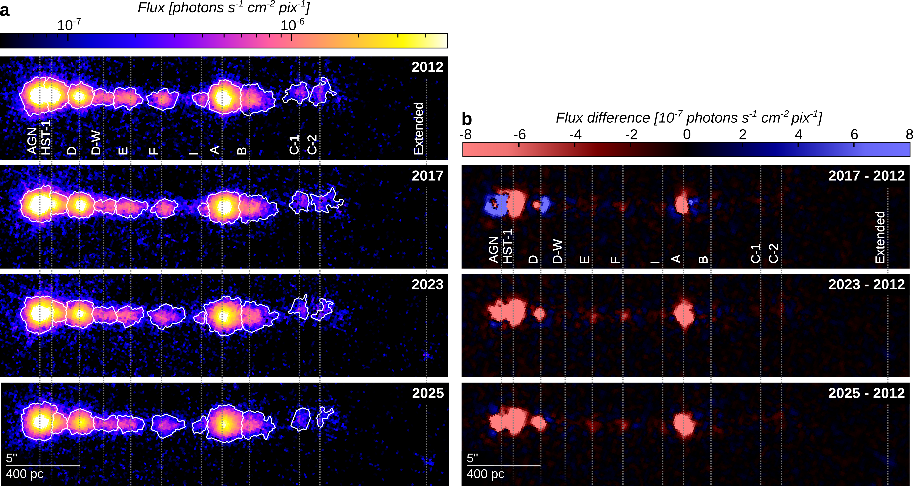
图注：\(\footnotesize\) (a)~Aligned flux images for the 2012 to 2025 epochs (top to bottom), shown with a pixel scale of $0.1318\arcsec$~pix$^{-1}$, with the region used for the flux measurements of each jet feature overlaid as a solid white contour. (b)~Corresponding flux difference maps relative to the 2012 epoch, smoothed with a Gaussian kernel ($\sigma = 2$~pix). Blue/red regions indicate flux increases/decreases. For each panel, the AGN and jet knots are marked with dotted vertical lines.
对应解读：对应“建议重点查看的图表”第1、3项，以及“关键图表逐图导读”图3中关于多历元通量下降、差分图、区域测光边界和全喷流变暗的讨论。
入选理由：该图给出2012至2025配准后的通量图和相对2012的通量差分图，并叠加各喷流特征的测光区域，可直观看到哪些knot变暗或增强。它补充Fig08的定量光变曲线，帮助判断整体84%衰减是否来自局部区域、区域边界或背景/曝光处理。
来源与置信度：\(arxiv_source\)；high；\(arxiv_source\) / MAIN.tex:figure[2]
强相关工作
这篇工作属于 M87 同一源、同一喷流、同类多波段高分辨率观测的延续。应把它和 EHT 的 M87 黑洞阴影与喷流根部研究、HST 对 HST-1 光学/紫外耀发和自行研究、Chandra 早期 M87 X 射线喷流监测、ALMA/JWST 近年红外和毫米波结构研究放在一起读。检索关键词可用 M87 jet Chandra HRC HST-1 X-ray variability proper motion synchrotron cooling、M87 jet multiwavelength ALMA JWST HST Chandra、M87 HST-1 superluminal motion。
在理论上，本文连接的是相对论喷流中激波、再准直、磁重联、剪切加速和同步冷却的老问题。相反或互补观点包括：X 射线衰减不一定只由同步冷却造成，也可能来自加速注入改变、Doppler boosting 改变、绝热膨胀或未分辨成分亮度权重变化；X 射线上游偏移也可能受磁场增强或投影几何影响。检索关键词可用 synchrotron cooling offset jet knots、relativistic jet knot proper motion pattern speed、M87 HST-1 TeV flare origin。
同一事件 / 同类源线索：
- https://arxiv.org/abs/2606.13800
- https://arxiv.org/abs/1906.11238
- https://arxiv.org/abs/2104.06855
- https://adsabs.harvard.edu/abs/1918PLicO..13....9C
相似工作：
基础理论 / 方法工作：
- https://adsabs.harvard.edu/abs/1977MNRAS.179..433B
- https://adsabs.harvard.edu/abs/1979ApJ...232...34B
- https://adsabs.harvard.edu/abs/1918PLicO..13....9C
相反观点 / 张力线索：
（未提供）
6. Transitions in the Mass-ratio and Spin Properties of Binary Black Holes in GWTC-5
- 来源：arXiv / astro-ph.HE
- 链接：https://arxiv.org/abs/2606.14472v1
- 作者：Elizabeth Flanagan, Fabio Antonini, Thomas Callister, Debatri Chattopadhyay, Fani Dosopoulou, Isobel Romero-Shaw
- 评分：novelty 7/10，importance 8/10，relevance 8/10，final 8.70/10
- 推荐理由：基于GWTC-5的黑洞双星质量比和有效自旋族群分段转变分析，若结果稳健将影响黑洞形成通道理解；虽非伽马射线方向，但属于重要致密天体/引力波HE主题。
中文题目：GWTC-5 中双黑洞质量比和自旋性质的转变
做了什么：这篇论文用 GWTC-5 双黑洞并合样本做层级贝叶斯总体推断，考察质量比和有效自旋 \(\chi_{\rm eff}\) 的分布如何随主黑洞质量 \(m_1\) 改变。作者不用单一幂律或少数高斯峰硬套整个人群，而是用较灵活的高斯过程总体模型，寻找质量区间之间的分布转变。核心结论是：双黑洞并非一个平滑连续的人群；在 \(m_1\) 的若干区间内，质量比和 \(\chi_{\rm eff}\) 同时发生转变，低质量端更像孤立双星或三体演化，高质量端越来越符合星团中动力学装配和分层并合的图像。
为什么重要：双黑洞形成通道的判别长期受限于单事件参数误差和样本选择效应。质量比 \(q\) 与有效自旋 \(\chi_{\rm eff}\) 是区分孤立双星、动力学装配、三体演化和分层并合的最有信息量的低维观测量之一。如果它们在同一主质量位置出现同步转变，就比单独看到质量谱中的一个峰或自旋分布的轻微偏移更难用偶然拟合解释，也更直接指向不同形成通道在不同质量段的混合比例变化。
理论 / 观测 / 仪器方法价值：本文的价值主要在方法和物理解释两方面。方法上，它展示了如何在选择效应修正后，用非参数或半非参数总体模型寻找黑洞人群中的结构，而不是预设只有一个连续族群。物理上，它把 \(m_1\)、\(q\) 和 \(\chi_{\rm eff}\) 的联合变化与形成通道联系起来：低质量、近等质量、正 \(\chi_{\rm eff}\) 偏置的系统更容易来自共同包层或稳定质量转移后的场双星；高质量、宽 \(q\) 和宽 \(\chi_{\rm eff}\) 的系统则与星团动力学和前代并合遗迹更一致。
为什么应该关注：如果你关心引力波天体物理，这篇文章值得看，因为它讨论的是从“探测到许多黑洞”走向“把黑洞分成人群”的关键问题。未来地面探测器的事件数会快速增长，真正有用的不是单个黑洞质量的刷新纪录，而是能否从总体分布中读出恒星演化、星团动力学和黑洞多代并合的相对贡献。本文给出的质量段转变也会影响速率外推、第三代探测器预期、核星团和球状星团模型，以及对成对不稳定质量缺口附近事件的解释。
展开详细解读：文章讲解、背景、理论、重点章节、图表与相关工作
文章详细讲解
科学问题：本文要回答的不是“GWTC-5 里有没有高质量黑洞”这样单事件层面的问题，而是双黑洞总体的 \(q\) 和 \(\chi_{\rm eff}\) 分布是否随主质量 \(m_1\) 系统变化。已有目录显示黑洞质量谱在几十个太阳质量附近有结构，尤其是 \(\simeq 35\,M_\odot\) 附近的特征和更高质量端的尾部。但质量谱本身有退化：恒星金属丰度、成对不稳定质量损失、探测选择效应、动力学环境都能影响质量分布。作者因此把注意力放到联合分布：如果同一质量位置上 \(q\) 和 \(\chi_{\rm eff}\) 也发生转变，这更像是形成通道混合比例变化，而不只是质量谱拟合的人工结构。
作者怎么做：论文使用 GWTC-5 的双黑洞事件样本，采用层级贝叶斯总体推断。单事件的后验样本给出 \((m_1,m_2,\chi_{\rm eff})\) 的测量不确定性，总体模型描述天体物理真实分布，探测选择函数修正不同质量和自旋系统被探测到的概率差异。关键技术是用灵活的高斯过程模型描述 \(q\) 和 \(\chi_{\rm eff}\) 的条件分布如何随 \(m_1\) 改变。这样做的目的不是强行规定某个质量边界，而是让数据告诉我们在哪些 \(m_1\) 区间分布形状出现明显变化。
关键结果：作者识别出四个主要质量区域。低于 \(\sim15\,M_\odot\) 时，系统强烈偏好近等质量，\(\chi_{\rm eff}\) 分布较窄且峰值为正；在 \(18\) 到 \(30\,M_\odot\) 左右，\(q\) 分布明显变平，\(\chi_{\rm eff}\) 变宽并移向接近零，正偏态有暗示但不是统计上必需；在 \(\simeq35\,M_\odot\) 特征附近，人群重新偏好近等质量，\(\chi_{\rm eff}\) 窄且关于零近似对称；高于 \(\simeq45\,M_\odot\) 后，\(q\) 与 \(\chi_{\rm eff}\) 都显著变宽，\(\chi_{\rm eff}\) 的支持区间趋向于包含前代并合遗迹的预期范围。
局限和下一步：这些结论仍依赖 GWTC-5 的事件数、波形系统误差、选择函数估计以及总体模型的平滑性假设。特别是高质量端事件较少，最容易受少数响亮事件和边界先验影响；\(\chi_{\rm eff}\) 只是一维投影，不能完全区分自旋大小和倾角分布；质量比在低信噪比事件中也与总质量、距离和自旋存在退化。下一步需要用更多事件、包含进动自旋参数、偏心率、红移演化以及星团和孤立双星的物理化混合模型来检验这些转变是否稳定。
关键结果是怎么做出来的
本文最重要的证据链是：从 GWTC-5 双黑洞目录中取出事件的单事件后验样本，经过选择效应修正后，估计 \(p(q,\chi_{\rm eff}\mid m_1)\) 的形状。样本选择的关键不是简单统计观测到的 \(q\) 或 \(\chi_{\rm eff}\)，因为探测器更容易看到高质量、高信噪比和某些自旋取向的系统。作者使用层级贝叶斯框架，把每个事件的后验样本重新加权到总体模型下，并用注入回收或等效灵敏体积计算探测效率。
事件数方面，摘要没有给出最终纳入的具体双黑洞数，但 GWTC-5 相比早期目录的增量使作者能够把 \(m_1\) 分成多个区域而不完全由先验主导。需要特别注意的是，高质量端 \(m_1\gtrsim45\,M_\odot\) 的有效样本数仍远少于中低质量段，因此论文中关于高质量宽自旋分布和分层并合一致性的说法应理解为“与该图像充分相容”，而不是已经直接测量到大量二代黑洞。
统计上，本文不是报告单个事件的 \(p\)-值，而是比较总体后验中不同 \(m_1\) 区间的条件分布。显著性主要体现在后验可信区间是否排除了无转变或单一平滑分布的情形，以及 \(q\) 分布斜率、\(\chi_{\rm eff}\) 均值、宽度和偏态随 \(m_1\) 的变化是否同步出现。读者应重点检查展示 \(p(q\mid m_1)\)、\(p(\chi_{\rm eff}\mid m_1)\) 以及转变位置后验的图，而不是只看摘要中的四个质量区间描述。
支撑结论的图表应包括二维或条件分布图：一类图显示不同 \(m_1\) 切片上的 \(q\) 分布，从低质量等质量偏好到中间变平、\(35\,M_\odot\) 附近再收窄、高质量再变宽；另一类图显示 \(\chi_{\rm eff}\) 的均值、宽度和偏态随 \(m_1\) 的变化。若论文给出模型比较或后验预测检验，应看灵活模型是否真的优于不含质量依赖的模型，以及这种改进是否集中在少数事件附近。
主要系统误差包括单事件波形模型误差、质量和自旋后验的先验依赖、探测选择函数有限注入数误差、红移质量与源系质量转换中的宇宙学假设，以及总体模型过度灵活导致把统计涨落解释为物理转变。稳健性检验应关注：换用不同高斯过程核或平滑尺度后转变是否保留；去掉最高质量或最高权重事件后结论是否改变；改变自旋先验或质量谱基线后，\(q\) 与 \(\chi_{\rm eff}\) 的同步转变是否仍存在。
展开背景、理论、公式、模型、章节和图表导读
背景知识
双黑洞并合的质量和自旋分布是引力波天体物理中最核心的总体问题之一。单个事件告诉我们有一个双黑洞并合发生了，而总体分布则告诉我们这些黑洞从哪里来。场双星演化通常涉及大质量恒星的质量转移、共同包层、潮汐锁定和超新星塌缩；动力学形成则发生在球状星团、年轻致密星团或核星团中，黑洞通过多体相互作用成对并合。这两类通道在 \(q\)、自旋大小、自旋方向和质量上给出不同倾向。
历史上，早期 LIGO/Virgo 目录事件数少，许多总体结论都高度模型依赖。随着 GWTC-2 和 GWTC-3 发布，人们开始看到质量谱并非简单幂律：\(\sim35\,M_\odot\) 附近有峰或过量，高质量端可能延伸到成对不稳定预期质量缺口附近。与此同时，\(\chi_{\rm eff}\) 分布总体接近零但并不完全对称，少数事件有正或负有效自旋。这些现象推动了关于孤立双星、动力学装配、化学均匀演化和分层并合的讨论。
为什么现在值得重新看？因为事件数一旦增加，总体推断就可以从“估计一个全局分布”升级为“估计条件分布”。也就是说，不再只问所有双黑洞的 \(q\) 分布长什么样，而是问 \(q\) 分布是否在 \(m_1\simeq15\,M_\odot\)、\(30\,M_\odot\)、\(45\,M_\odot\) 等位置变化。同理，\(\chi_{\rm eff}\) 的均值和宽度若与质量谱结构同步变化，就为多通道混合提供了更强约束。
一个常见误区是把 \(\chi_{\rm eff}\simeq0\) 直接解释为“黑洞没有自旋”。实际上 \(\chi_{\rm eff}\) 是两个自旋沿轨道角动量方向的质量加权投影，较大的自旋若方向随机也可给出接近零的 \(\chi_{\rm eff}\)。另一个误区是把近等质量简单等同于孤立形成；动力学交换也可偏向较重黑洞配对，而选择效应也会改变观测到的 \(q\) 分布。本文的重点正是把多个观测维度联合起来，而不是用单一指标判定形成通道。
基础理论 / 方法脉络
基本物理图像是：双黑洞并合的引力波相位主要由啁啾质量、质量比和自旋控制。质量决定信号的频率演化和探测体积；自旋沿轨道角动量的投影改变后期旋近和并合相位；质量比影响高阶模、并合频率和参数退化。因此，\(m_1\)、\(q\) 和 \(\chi_{\rm eff}\) 是从引力波数据中相对可靠、又能反映形成通道的关键量。
本文使用的核心条件分布可以理解为 \(p(q,\chi_{\rm eff}\mid m_1)\)。若所有双黑洞来自一个单一通道，并且恒星演化条件随质量平滑变化，那么这个条件分布也应较平滑。若不同质量段由不同通道主导，则 \(q\) 的偏好和 \(\chi_{\rm eff}\) 的形状可能在某些 \(m_1\) 处共同改变。作者所称的“转变”正是这种条件分布随 \(m_1\) 的非平凡变化。
有效自旋 \(\chi_{\rm eff}\) 的解释要谨慎。它把两个黑洞的无量纲自旋 \(\boldsymbol{\chi}_1\)、\(\boldsymbol{\chi}_2\) 投影到轨道角动量方向 \(\hat{\mathbf{L}}\)，并按质量加权。孤立双星若经历潮汐锁定或稳定质量转移，可能产生正的 \(\chi_{\rm eff}\) 偏置；动力学装配中自旋方向近似各向同性，\(\chi_{\rm eff}\) 更容易以零为中心且分布较宽；分层并合遗迹通常有较大的自旋大小，若再进入后续并合，可使高质量端 \(\chi_{\rm eff}\) 支持区间变宽。
统计方法上，层级贝叶斯推断把“单事件测量不确定性”和“总体分布”分开。观测目录不是天体物理总体的无偏抽样，因为高质量系统可在更大体积中被探测，某些质量比和自旋也会影响信号持续时间与可探测性。因此必须除以选择函数，否则高质量端和近等质量偏好都可能被夸大。高斯过程模型的作用是给分布随 \(m_1\) 的变化提供灵活但受平滑性约束的表示。
主要退化包括：\(q\) 与自旋在波形相位中的相关性，源系质量与红移的相关性，\(\chi_{\rm eff}\) 与进动自旋信息的投影退化，以及总体模型灵活性与有限样本噪声之间的退化。本文的物理解释依赖这些退化没有在不同质量区间系统性地产生假转变，因此稳健性检验非常关键。
公式与推导
第一步是定义双黑洞的基本质量参数。设主黑洞质量为 \(m_1\)，次黑洞质量为 \(m_2\)，并取 \(m_1\ge m_2\)，则质量比为
这里 \(q\) 越接近 \(1\)，双黑洞越接近等质量；若 \(q\) 分布在某个 \(m_1\) 区间变平，说明非等质量系统相对增多。
第二步是定义引力波相位最敏感的质量组合，即啁啾质量
在低阶后牛顿近似中，\(\mathcal{M}\) 控制频率扫掠速度，因此通常比单独的 \(m_1\) 和 \(m_2\) 测得更准。总体推断必须通过单事件后验把 \(\mathcal{M}\)、\(q\)、自旋和距离的退化传播进去。
第三步是有效自旋定义：
其中 \(\boldsymbol{\chi}_i=\mathbf{S}_i/m_i^2\) 是无量纲自旋向量，\(\hat{\mathbf{L}}\) 是轨道角动量方向。正的 \(\chi_{\rm eff}\) 表示自旋总体与轨道角动量同向；以零为中心的宽分布可来自小自旋，也可来自大自旋但方向随机。
第四步是把总体分布写成条件形式。一个抽象的总体模型可写为
其中 \(\theta\) 表示单个事件的源参数，\(\Lambda\) 是总体超参数，\(z\) 是红移，\(\phi\) 代表未重点讨论的其他参数。本文关注的是 \(p(q,\chi_{\rm eff}\mid m_1,\Lambda)\) 随 \(m_1\) 的结构。
第五步是层级贝叶斯似然。对 \(N\) 个探测事件 \(\{d_i\}\)，考虑选择效应后的总体似然可写为
其中 \(R(\theta\mid\Lambda)\) 是源参数空间中的并合率密度，\(\mu(\Lambda)\) 是模型预期被探测到的事件数。若只关心形状而边缘化总速率，常得到含选择归一化因子的等价形式。
第六步是用单事件后验样本近似积分。若单事件分析采用先验 \(\pi_0(\theta)\)，第 \(i\) 个事件有后验样本 \(\theta_{ij}\)，则
这里 \(S_i\) 是样本数。这个重加权步骤说明总体结论不是直接读取事件后验均值，而是把每个后验样本放到候选总体模型下重新计权。
第七步是选择函数。探测效率可写为
其中 \(p_{\rm det}(\theta)\) 是参数为 \(\theta\) 的源被探测到的概率。若忽略 \(\alpha(\Lambda)\)，高质量系统因可见体积更大而会被误认为天体物理上更常见。
第八步是高斯过程表示分布随质量的变化。可把某个分布形状参数或对数密度写作
其中 \(x\) 可代表 \(m_1\) 或经过变换的 \(\log m_1\)，\(m(x)\) 是均值函数，\(k(x,x')\) 是协方差核。核的相关长度控制允许多快的转变；相关长度太短会追逐噪声，太长会抹平真实结构。
第九步是用后验比较转变强度。若用 \(s(m_1)\) 表示某个统计量，例如 \(\chi_{\rm eff}\) 分布宽度或 \(q\) 分布的等质量偏好，则可检查
的后验分布是否显著偏离零。这里 \(m_{1,a}\) 和 \(m_{1,b}\) 是转变两侧的代表质量。本文的物理含义来自多个统计量的 \(\Delta s\) 在相近 \(m_1\) 处同时显示变化。
模型拟合 / 应用方法
本文的拟合对象是总体超参数 \(\Lambda\)，而不是单个事件的最佳拟合质量和自旋。实际输入包括每个 GWTC-5 双黑洞事件的后验样本、单事件分析采用的参考先验、以及用于估计选择函数的探测效率信息。输出则是 \(p(q\mid m_1)\)、\(p(\chi_{\rm eff}\mid m_1)\) 或其均值、宽度、偏态等派生量的后验分布。
高斯过程总体模型通常需要设定核函数、相关长度、振幅和边界条件等超先验。这些先验决定模型允许多尖锐的转变。若先验过度平滑，真实的通道切换会被压成缓慢趋势；若先验过于灵活，有限事件数造成的泊松涨落可能被误认成物理结构。读者应留意论文是否展示不同核选择、不同平滑尺度或不同参数化下的稳健性。
似然中最重要的校正是选择效应。对双黑洞，探测概率强烈依赖总质量、质量比、距离、天空位置和取向；自旋也会通过波形长度和并合频率影响可探测性。高质量事件虽然少，但可探测体积大；低质量事件信号在频带中更长，但探测距离较小。因此，拟合残差不能只看观测直方图与模型曲线是否贴合，还要看后验预测的“被探测样本”是否能复现实测目录。
参数退化方面，\(q\) 与 \(\chi_{\rm eff}\) 在单事件波形中常相关，特别是在信噪比不高、进动不明显或高阶模不强的事件中。若某个质量段事件普遍信噪比较低，\(\chi_{\rm eff}\) 宽度可能部分反映测量误差而非真实分布。层级推断原则上会把测量误差边缘化，但其结果仍依赖单事件后验是否由足够准确的波形模型给出。
模型可能失败的地方包括：把红移演化忽略或简化，导致源系质量分布的变化被误投影到 \(m_1\)；把进动自旋信息压缩为 \(\chi_{\rm eff}\)，失去区分各向同性大自旋和低自旋的能力；以及未显式建模不同形成通道的混合，而是先用经验分布发现结构。经验模型的优势是少预设，劣势是物理解释需要额外论证。因此本文最好被看作“发现总体结构和提出通道解释”的工作，而不是已经完成通道分解的终局模型。
重点章节 / 结果段落怎么读
数据和样本部分应首先阅读。这里需要确认作者如何定义双黑洞样本，是否排除了可能含中子星的低质量事件，如何处理低显著性候选体，以及采用了哪些单事件后验和波形模型。还要看源系质量的宇宙学转换和事件选择阈值，因为这些会影响 \(m_1\) 分段。
方法部分是全文关键。重点看层级贝叶斯似然、选择函数 \(\alpha(\Lambda)\) 的估计、高斯过程模型如何参数化 \(p(q,\chi_{\rm eff}\mid m_1)\)，以及先验如何约束平滑尺度。专业读者应特别检查模型是否允许 \(q\) 和 \(\chi_{\rm eff}\) 独立随 \(m_1\) 变化，还是显式建模二者相关。
主结果部分应按质量区间读。不要只记住四个区间标签，而要看每个区间中 \(q\) 分布的等质量偏好、\(\chi_{\rm eff}\) 分布的峰值、宽度和偏态，以及这些量的可信区间。尤其要看 \(18\) 到 \(30\,M_\odot\) 和 \(\gtrsim45\,M_\odot\) 两段，因为它们最直接支持从孤立演化向动力学或分层并合贡献增强的解释。
讨论部分要关注作者如何把统计结构映射到形成通道。低质量正 \(\chi_{\rm eff}\) 和近等质量可与孤立双星或三体演化相容；\(35\,M_\odot\) 附近的近等质量、零中心窄自旋分布可能涉及特殊的恒星演化或质量谱峰；高质量宽自旋则与分层并合更一致。读者应分清“相容”和“唯一解释”之间的差别。
附录或稳健性检验部分可能比正文结论更重要。应检查替代模型、先验变化、事件剔除、注入数不确定性和后验预测检验。若某个转变只在一种模型设定下出现，物理意义就要打折；若 \(q\) 和 \(\chi_{\rm eff}\) 的同步转变在多种设定下都保留，结论才更有说服力。
建议重点查看的图表
-
\(p(q\mid m_1)\) 的条件分布图：看横轴 \(m_1\)、纵轴 \(q\) 或不同 \(m_1\) 切片中的 \(q\) 密度，重点检查低质量和 \(35\,M_\odot\) 附近是否真的集中到 \(q\simeq1\)。
-
\(p(\chi_{\rm eff}\mid m_1)\) 的条件分布图：看 \(\chi_{\rm eff}\) 峰值是否从低质量正值移向零，以及高质量端宽度是否明显增加。
-
分布统计量随 \(m_1\) 的曲线：例如 \(q\) 分布斜率、\(\chi_{\rm eff}\) 均值、标准差、偏态的后验中位数和可信区间。关键是不同统计量的转变位置是否一致。
-
质量谱或事件在 \(m_1\) 上的分布图：检查所谓 \(\simeq35\,M_\odot\) 特征与 \(q\)、\(\chi_{\rm eff}\) 转变是否空间上重合，而不是由少数离群事件造成。
-
后验预测检验图：看模型生成的被探测样本能否复现实测事件的 \(m_1\)、\(q\)、\(\chi_{\rm eff}\) 联合分布，尤其是边缘区域残差。
-
稳健性或模型比较表：检查不同先验、不同高斯过程核、不同事件选择下转变是否保留；若有贝叶斯因子或信息准则，应看证据强度是否足够。
-
选择函数或灵敏体积诊断：看 \(p_{\rm det}\) 对质量比和自旋的依赖是否被充分采样，高质量端是否存在注入统计不足导致的系统误差。
关键图表逐图导读
图 1：若论文首先给出 GWTC-5 事件在 \((m_1,q,\chi_{\rm eff})\) 空间中的散点或后验云图，横轴通常是 \(m_1\)，纵轴可能是 \(q\) 或 \(\chi_{\rm eff}\)。数据点代表事件后验摘要，误差条代表可信区间。读图时不要把点的位置当作真实总体直方图，因为每个事件的探测概率不同；这张图主要用于识别哪些质量区间由哪些事件支撑。
图 2：条件质量比分布图应是全文核心之一。若横轴为 \(m_1\)、纵轴为 \(q\)，颜色表示后验密度，则应看到低 \(m_1\) 和 \(35\,M_\odot\) 附近在 \(q\simeq1\) 处更亮，而 \(18\) 到 \(30\,M_\odot\) 及高质量端向较小 \(q\) 扩展。陷阱是 \(q\) 的下边界和探测选择会影响颜色分布，必须结合选择修正后的模型看。
图 3：条件 \(\chi_{\rm eff}\) 分布图通常以 \(m_1\) 为横轴、\(\chi_{\rm eff}\) 为纵轴，颜色或等高线表示密度。关键结论是低质量峰值略为正，中间质量峰值接近零且更宽，\(35\,M_\odot\) 附近再次变窄，高质量端显著变宽。读图陷阱是 \(\chi_{\rm eff}\simeq0\) 不等于零自旋，宽度也可能受测量误差和先验边界影响。
图 4：若有统计量随 \(m_1\) 的曲线图，应重点看 \(q\) 等质量偏好、\(\chi_{\rm eff}\) 均值、\(\chi_{\rm eff}\) 方差和偏态的后验可信带。模型线的同步转折比单条曲线的起伏更有物理意义。若可信区间跨越很大，说明该区间的通道解释应保持谨慎。
图 5：模型比较或后验预测图应显示灵活模型与无质量依赖模型、简单参数模型之间的差别。坐标轴可能是观测统计量与模型预测分位数，或不同模型的残差。应看残差是否系统集中在某些 \(m_1\) 区间；若灵活模型只改善了少数离群事件，通道转变的说服力会弱一些。
图 6：稳健性附图可能展示更换先验、核函数或剔除事件后的结果。读这类图的重点不是每条曲线细节，而是四个质量区域的定性图像是否仍然存在。若高质量端宽 \(\chi_{\rm eff}\) 只在包含某一两个事件时出现，应把它视为待未来目录检验的暗示。
论文原图 / 可嵌入图片
Fig01
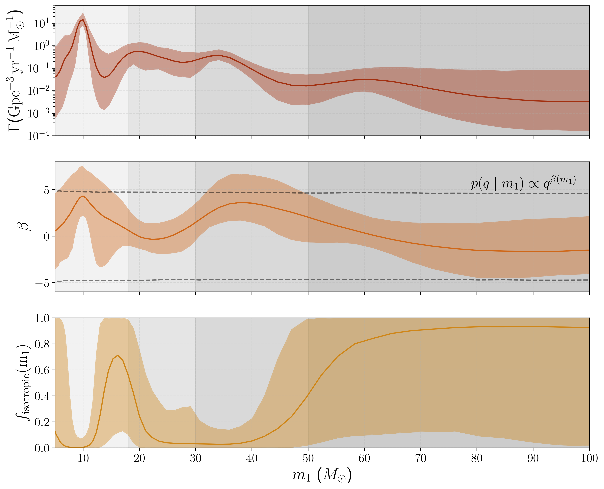
图注：Top panel: $\Gamma$ is the astrophysical/source-frame merger-rate density per unit primary mass as a function of primary mass $m_1$. Middle panel: inferred slope $\beta(m_1)$ of the conditional mass-ratio distribution, $p(q\mid m_1)\propto q^{\beta(m_1)}$, obtained using our Gaussian-process population model. The dashed lines in this panel are the 90\% confidence bands of the prior on $\beta(m_1)$. Bottom panel: inferred mixing fraction of an isotropic spin population from the LVK analysis of Ref.~\(\cite{2026arXiv260527226T},\) based on a model in which the $\chi_{\rm eff}$ distribution is described as a mixture between a Gaussian component and a broad uniform component, with the mixing fraction modeled as a Gaussian process as a function of mass. Vertical shaded bands indicate the mass intervals discussed in the text. Colored shaded regions show 90\% intervals, while the solid lines are the inferred median. Here we set $(\tilde{m}_{\rm low},\,\tilde{m}_{\rm high})=(50,~200)M_\odot$. However, the mass and $q$ distributions shown here were found to be independent of the choice for these parameters.
对应解读：“建议重点查看的图表”第1、3、4项，以及“关键图表逐图导读”中关于质量谱、质量比分布斜率和转变位置同步性的段落。
入选理由：这张图同时给出源系并合率随主质量的结构、条件质量比分布斜率β(m1)及其90%区间，并用竖直阴影标出文中讨论的质量区间，是判断低质量、18–30M⊙、35M⊙附近和高质量端是否对应不同总体性质的最核心总览图。它比单纯的事件散点图更接近选择修正后的总体推断结果。
来源与置信度：\(arxiv_source\)；high；\(arxiv_source\) / main.tex:figure[1]
Fig03

图注：Inferred effective-spin distributions across the four mass intervals identified from the mass-ratio analysis: $m_1<18\,M_{\odot}$, $18
对应解读：“建议重点查看的图表”第2项，以及“关键图表逐图导读”图3：p(χ_eff|m1)条件分布随质量区间变化。
入选理由：这张图直接展示四个主质量区间内χ_eff的概率密度和累积分布，并含90%可信区间、先验范围和层级并合预期曲线。它最直接支撑日报中关于低质量正χ_eff窄峰、中间质量变宽并接近零、30–50M⊙再次变窄、高质量端显著变宽的解读。
来源与置信度：\(arxiv_source\)；high；\(arxiv_source\) / main.tex:figure[3]
Fig02
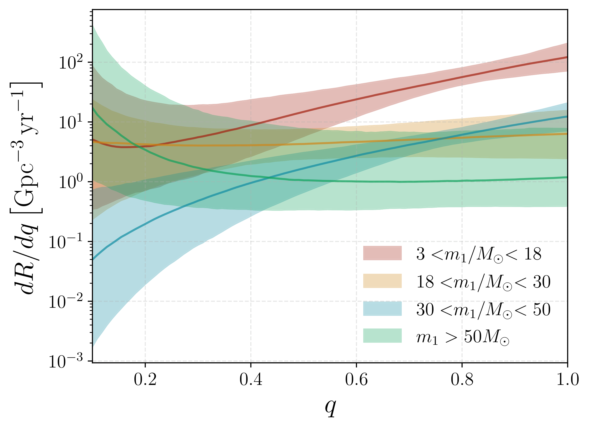
图注：The merger rate as a function of mass ratio $q$ for each mass interval. The shaded region represents the 90\% confidence interval and the solid line is the median. Intervals $18
入选理由：这张图按质量区间展示并合率随质量比q的变化，清楚对比了18–30M⊙和高质量端的分布变平，以及低质量和30–50M⊙区间更偏向等质量的趋势，是验证质量比分布转变的关键图。
来源与置信度：\(arxiv_source\)；high；\(arxiv_source\) / main.tex:figure[2]
Fig04
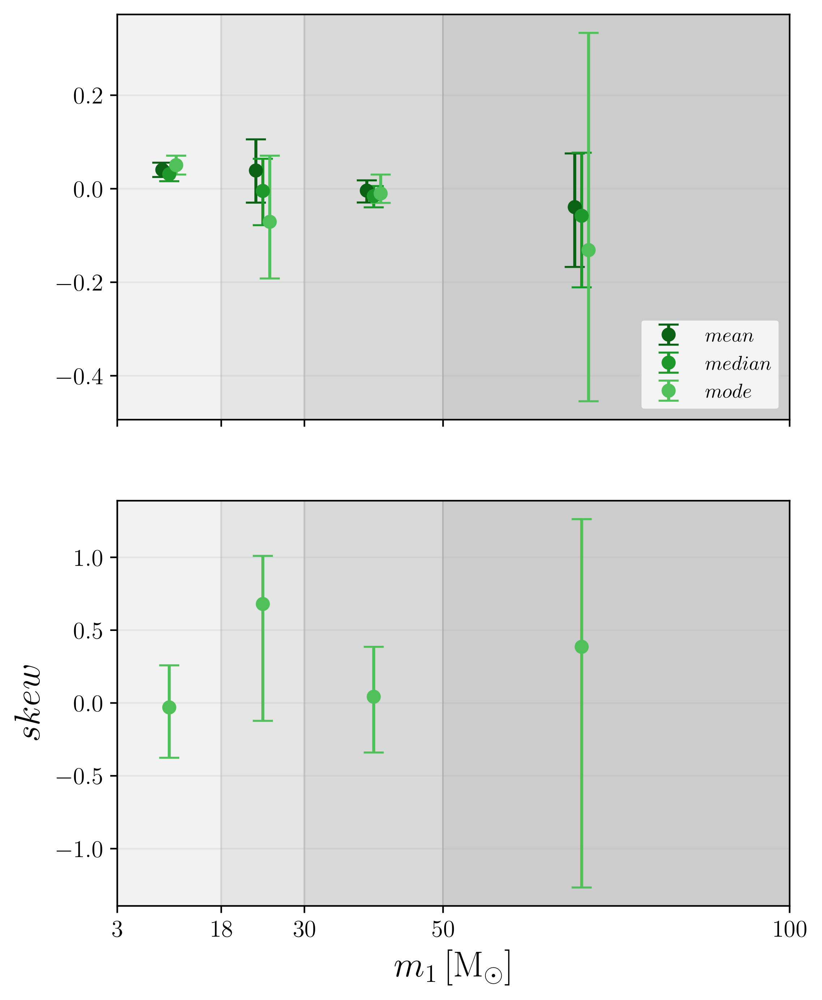
图注：Summary statistics of the inferred effective-spin distributions across the four mass intervals identified from the mass-ratio analysis: $m_1<18\,M_{\odot}$, $18
对应解读：“建议重点查看的图表”第3项，以及“关键图表逐图导读”图4：χ_eff均值、中位数、众数和偏态随质量区间的统计量。
入选理由：这张图把χ_eff分布压缩为均值、中位数、众数和Pearson偏态，并给出90%可信区间，适合检验日报中‘峰值从低质量正值移向零’和‘中间质量正偏态只是暗示而非统计必需’的说法。它补充了Fig03中肉眼读密度图可能不够定量的问题。
来源与置信度：\(arxiv_source\)；high；\(arxiv_source\) / main.tex:figure[4]
Fig05
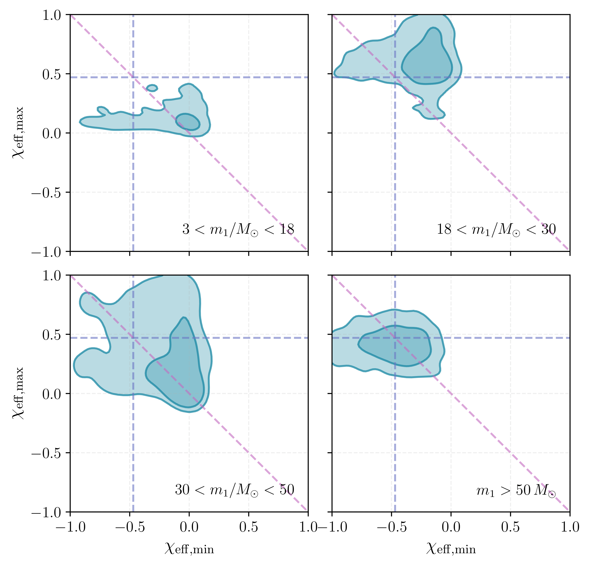
图注：Posterior support for the minimum and maximum extent of the inferred effective-spin distributions across the four mass intervals identified from the mass-ratio analysis: $m_1<18\,M_{\odot}$, $18
对应解读：“建议重点查看的图表”第2、3项，以及详细解读中关于高质量χ_eff支持区间趋近层级并合预期的段落。
入选理由：这张图给出各质量区间χ_eff最小值和最大值的联合后验轮廓，并标出层级并合预期的±0.47和关于零对称的参考线。它比普通PDF更适合判断高质量端是否真正需要宽自旋支持，以及低质量区间是否排斥明显的层级并合成分。
来源与置信度：\(arxiv_source\)；high；\(arxiv_source\) / main.tex:figure[5]
Fig08
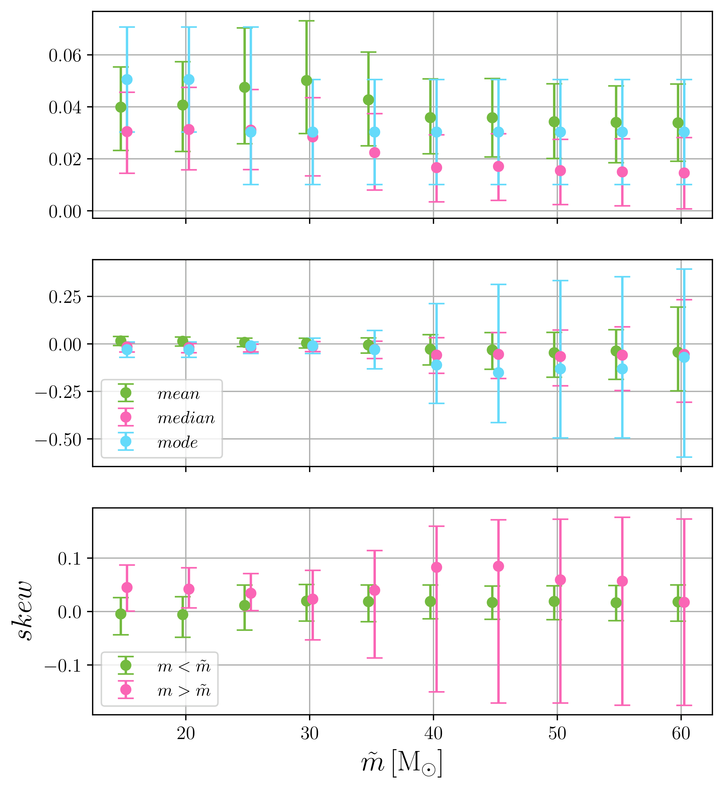
图注：The evolution of the inferred effective-spin distributions as a function of the transition mass scale $\tilde{m}$. Error bars indicate the $90\%$ credible intervals. The top panel shows the inferred mean, median and mode of the effective spin of the population with $m_1<\tilde{m}$. The middle panel shows the inferred mean, median, and mode of the population with $m_1>\tilde{m}$, illustrating the progressive shift of the high-mass population toward $\chi_{\rm eff}\simeq0$ and the increasing uncertainty associated with broader spin distributions at large masses. The bottom panel shows the Pearson first skewness coefficient, quantifying the degree of asymmetry of the inferred $\chi_{\rm eff}$ distributions. While all measurements remain statistically consistent with symmetric distributions, the intermediate-mass regime exhibits tentative evidence for positive skewness associated with the possible excess near $\chi_{\rm eff}\sim0.5$.
对应解读：“建议重点查看的图表”第3、6项，以及模型拟合段落中关于转变质量尺度、χ_eff统计量和偏态稳健性的讨论。
入选理由：这张图展示不同转变质量尺度下低质量和高质量子群的χ_eff均值、中位数、众数及偏态变化，能检验结论是否依赖某个固定质量切分。它特别适合支撑日报中关于高质量群逐渐向χ_eff≈0移动、宽度不确定性增大，以及中间质量正偏态证据有限的表述。
来源与置信度：\(arxiv_source\)；high；\(arxiv_source\) / main.tex:figure[8]
强相关工作
这篇工作与 LIGO/Virgo/KAGRA 的总体性质论文直接相连，尤其是 GWTC-2、GWTC-3 以来关于双黑洞质量谱峰、\(\chi_{\rm eff}\) 分布接近零但有正偏、以及高质量端是否存在分层并合的讨论。可检索关键词包括 “GWTC population properties binary black holes mass ratio effective spin”, “Gaussian process population inference gravitational waves”, “binary black hole formation channels effective spin mass ratio”。
在理论方面，它与孤立双星演化、星团动力学装配和分层并合三类文献相交。相似或基础问题包括：共同包层和稳定质量转移能否产生近等质量和正 \(\chi_{\rm eff}\)；球状星团或核星团能否产生宽 \(q\) 与各向同性自旋；二代黑洞并合遗迹的自旋是否自然落在 \(\chi\sim0.7\) 附近并进入高质量端。相反观点或张力主要来自模型选择：一些工作认为质量谱结构可由恒星演化和选择效应解释，不必引入显著分层并合；另一些工作则强调高质量事件和质量缺口候选体要求动力学通道。
同一事件 / 同类源线索：
相似工作：
基础理论 / 方法工作：
相反观点 / 张力线索：
7. Pulse profile modelling of accreting millisecond pulsars with disc occultation and its impact on parameter inference
- 来源：arXiv / astro-ph.HE
- 链接：https://arxiv.org/abs/2606.14493v1
- 作者：Ying-Han Mao, Bas Dorsman, Anna L. Watts, Tuomo Salmi, Juri Poutanen, Xiang-Dong Li
- 评分：novelty 8/10，importance 7/10，relevance 8/10，final 8.65/10
- 推荐理由：将吸积盘遮挡纳入吸积毫秒脉冲星X射线脉冲轮廓建模，量化其对中子星参数推断的系统偏差；对NICER类高能X射线致密星方法有明确实用价值。
中文题目：带吸积盘遮挡的吸积毫秒脉冲星脉冲轮廓建模及其对参数推断的影响
做了什么：这篇文章把吸积盘遮挡加入到中子星脉冲轮廓建模代码 \(\mathrm{X\mbox{-}PSI}\) 中，专门研究吸积毫秒脉冲星中盘缘或盘面挡住热点辐射时，会怎样改变 \(\mathrm{NICER}\) 类观测到的 \(X\) 射线脉冲形状，并进一步影响质量、半径、热点位置和系统几何的后验推断。作者用相对论光线追踪生成含盘遮挡的合成数据，再用不同模型拟合，发现遮挡主要受视线倾角控制，在中高倾角系统中足以显著重塑脉冲轮廓；如果热点靠近自转极，即使拟合统计量看起来可接受，恢复出的参数也可能偏离真值。若忽略盘遮挡，还可能产生统计支持相近的伪后验峰，从而误导对中子星参数的解释。
为什么重要：脉冲轮廓建模是用 \(X\) 射线脉冲约束中子星质量—半径关系和致密物质状态方程的重要路线。过去该方法在旋转供能毫秒脉冲星上相对干净，但吸积毫秒脉冲星周围有盘、边界层和散射物质，几何系统误差更复杂。本文指出，吸积盘遮挡不是一个可以随意忽略的小修正，而是在某些几何下会改变参数后验拓扑的系统效应。
理论 / 观测 / 仪器方法价值：方法价值在于把盘遮挡以可用于贝叶斯参数估计的方式并入 \(\mathrm{X\mbox{-}PSI}\) 类相对论脉冲轮廓框架，使未来对吸积毫秒脉冲星的 \(\mathrm{NICER}\)、\(\mathrm{STROBE\mbox{-}X}\) 或 \(\mathrm{eXTP}\) 数据分析更接近真实观测环境。理论价值在于给出遮挡效应与倾角、热点纬度、盘内缘位置之间的定性和定量联系；观测价值在于提醒读者，好的 \(\chi^2\) 或似然并不保证物理参数无偏。
为什么应该关注：如果你关心用脉冲星约束中子星半径，这篇文章直接关系到系统误差预算：吸积源样本可能很有价值，但必须认真处理盘几何。如果你做吸积毫秒脉冲星的时变光谱、脉冲轮廓或倾角测量，本文提供了一个清楚的警告：盘遮挡能把热点几何和紧致星参数混在一起，制造看似合理的多峰解。即使不直接使用 \(\mathrm{X\mbox{-}PSI}\)，它也值得作为吸积源脉冲建模中的几何系统误差案例来读。
展开详细解读：文章讲解、背景、理论、重点章节、图表与相关工作
文章详细讲解
科学问题：脉冲轮廓建模利用中子星表面热点随自转产生的相位调制，结合广义相对论光弯曲、多普勒增强、引力红移和能谱响应，反推出中子星质量 \(M\)、半径 \(R\)、热点几何和观测倾角。这个方法在旋转供能毫秒脉冲星中已经被 \(\mathrm{NICER}\) 广泛使用，因为这些系统的星周环境相对稀薄。吸积毫秒脉冲星则不同：盘可延伸到接近磁层半径，热点来自磁通道吸积，视线在某些相位上可能被盘遮挡。本文的核心问题是：若在吸积毫秒脉冲星的脉冲轮廓建模中忽略盘遮挡，参数推断会偏到什么程度？
作者怎么做：论文扩展了已有的 \(\mathrm{X\mbox{-}PSI}\) 相对论光线追踪和贝叶斯推断框架，在射线从中子星表面传播到远处观测者的过程中加入一个吸积盘遮挡判据。也就是说，对每一条本来可到达观测者的光线，代码还要判断它是否与设定的盘几何相交；若相交，则该表面元在对应相位和能道的贡献被移除或削弱。作者先系统扫描几何参数，特别是视线倾角、热点位置和盘几何，然后生成模拟的 \(\mathrm{NICER}\) 数据集，用这些合成数据测试参数能否被正确恢复。
关键结果：遮挡效应主要由视线倾角控制。低倾角下，观测者近似从盘轴方向看系统，盘很少挡住中子星表面热点；中高倾角下，盘边缘对星面投影明显，脉冲轮廓可以出现额外的不对称、相位依赖的削弱或谐波结构改变。对于靠近自转极的热点构型，遮挡引起的轮廓变化容易与热点大小、热点纬度、倾角以及紧致度 \(GM/(Rc^2)\) 的效应混淆，导致统计上可接受但后验偏离真值的拟合。对于更靠近赤道的热点构型，脉冲调制本身更强，几何信息更丰富，参数恢复相对可靠。
局限和下一步：本文主要用理想化盘几何和合成 \(\mathrm{NICER}\) 数据说明系统效应的存在，并没有宣称已经完整描述真实吸积流。真实系统可能有盘厚度变化、盘翘曲、内缘随吸积率移动、冕散射、反射、边界层发射和时间变几何，这些都会与遮挡效应相互耦合。下一步应把遮挡、散射和能谱成分联立建模，并在真实吸积毫秒脉冲星上测试模型比较能否区分“盘遮挡”“热点几何变化”和“额外非热/反射成分”。
关键结果是怎么做出来的
本文最重要的证据链来自合成数据实验，而不是某个真实源的直接拟合。作者先设定代表性的中子星和系统几何参数，用加入盘遮挡的前向模型生成 \(\mathrm{NICER}\) 风格的相位—能量计数数据。这里的关键是：合成数据有已知真值，因此可以直接检查后验是否覆盖真值、是否出现偏差、以及偏差是否会被常规拟合优度诊断发现。
样本设计上，论文比较了至少两类热点构型：一类热点靠近自转极，另一类热点更接近赤道。这个选择很有针对性，因为极区热点往往产生较弱的投影调制，更多依赖相对论光弯曲和多普勒效应来提供几何信息；赤道附近热点的可见性变化更剧烈，对相位轮廓的约束通常更强。作者还扫描倾角，发现遮挡随倾角增强，是整个结果中最稳定的趋势。
统计推断方面，作者用脉冲轮廓建模中常见的计数似然或等价统计量比较模型与合成数据，并检查后验分布而非只看最佳拟合值。重要结论是：某些错误模型，即未包含盘遮挡的模型，也能给出统计上看似可接受的拟合。这意味着单纯依赖总似然、\(\chi^2\) 或残差均方可能不足以识别系统误差；需要看后验是否多峰、真值是否落在可信区间内、相位和能量残差是否有结构性模式。
支撑结论的图表应包括三类：几何示意或遮挡可见性图、合成脉冲轮廓对比图、以及参数后验角图。第一类图说明盘遮挡在相位上的开关行为；第二类图展示中高倾角下轮廓峰位、峰宽、谐波含量或低谷深度如何改变；第三类图展示忽略遮挡后，\(M\)、\(R\)、倾角、热点共纬度和热点尺寸的后验如何偏移或分裂。
稳健性上，作者的核心检查是比较不同热点构型和是否包含遮挡的拟合模型。主要系统误差来自盘几何理想化、背景和非热点发射处理、仪器响应假设、以及热点形状参数化。如果一个伪后验峰与真实峰有相近统计支持，那么后续真实数据分析就必须通过独立倾角约束、光谱态筛选、能谱成分分解或多历元联合拟合来打破退化。
展开背景、理论、公式、模型、章节和图表导读
背景知识
吸积毫秒脉冲星是一类低质量 \(X\) 射线双星中的快速自转中子星，典型自转频率为数百赫兹。物质从伴星经吸积盘流向中子星，在磁场引导下落到磁极附近，形成一个或多个热热点。热点随中子星自转扫过视线，产生相干 \(X\) 射线脉冲。与孤立或旋转供能毫秒脉冲星相比，吸积系统的优势是热点亮、计数率可能高；劣势是局部环境复杂。
脉冲轮廓建模的历史动力来自中子星状态方程问题。不同致密物质模型预言不同的质量—半径关系，而 \(X\) 射线脉冲的相位和能量依赖形状对 \(M/R\)、\(R\)、自转速度和发射几何敏感。\(\mathrm{NICER}\) 对 \(\mathrm{PSR\ J0030+0451}\)、\(\mathrm{PSR\ J0740+6620}\) 等旋转供能毫秒脉冲星的半径测量已经证明了该方法的威力。但把同样技术迁移到吸积毫秒脉冲星时，不能默认星周空间是透明真空。
吸积盘遮挡问题之所以现在值得重看，是因为高通量时间分辨 \(X\) 射线观测和成熟的贝叶斯光线追踪代码已经让系统误差成为限制项。未来更大面积任务会使统计误差降低，几何建模不足反而更突出。对于高倾角吸积源，盘边缘、盘风、热冕或内盘结构都可能改变相位依赖辐射，这类效应如果不进入前向模型，就会被错误地吸收到 \(M\)、\(R\) 或热点参数中。
该领域常见误区之一是把“拟合得好”理解为“物理模型对”。脉冲轮廓是一个高度退化的反问题，不同几何组合可能产生相近轮廓。另一个误区是认为盘遮挡只会简单降低通量，因而可由背景或归一化吸收掉。事实上，遮挡是相位相关、能量相关或至少几何相关的选择效应，会改变谐波结构和残差形态。还有一个误区是把所有吸积毫秒脉冲星都视为同质样本；实际倾角、磁倾角、盘内缘和吸积态差异会使遮挡强弱差别很大。
基础理论 / 方法脉络
基本物理图像是：中子星表面热点以自转角频率 \(\Omega\) 旋转，局部发射的光子在强引力场中发生引力红移和光线弯曲，并在高速自转表面受到多普勒增强和像差影响。远处观测者看到的不是一个简单的正弦波，而是由表面投影、可见性、能谱、相对论传播和仪器响应共同卷积出的相位—能量计数分布。
在无盘情形下，给定 \(M\)、\(R\)、自转频率、倾角 \(i\)、热点共纬度 \(\theta_s\)、热点角半径和温度，就能通过光线追踪计算每个相位的观测通量。紧致度 \(u=2GM/(Rc^2)\) 控制光弯曲强弱：更紧致的星能让背面更多区域可见，降低脉冲振幅；更大的半径在固定自转频率下带来更强表面线速度，增强多普勒不对称。
本文加入的关键假设是：吸积盘在某个几何平面中占据一定内缘半径和厚度，对从星面出发通往观测者的光线施加遮挡判据。对某个相位和某个表面元，若射线路径与盘区域相交，则该贡献不进入观测计数。这样，盘遮挡不是一个简单常数因子，而是取决于相位、倾角、热点位置、盘内缘以及光线弯曲路径。
观测和统计方法上，模型最终要预测每个能道 \(j\) 和相位 bin \(k\) 中的计数 \(\mu_{jk}\)，再与合成或真实计数 \(n_{jk}\) 比较。这里存在多重退化：倾角 \(i\) 和热点共纬度 \(\theta_s\) 都会改变投影调制；\(M/R\) 和热点大小都能改变脉冲振幅；盘遮挡和非热点背景都可能降低某些相位的相对通量。本文的贡献正是把其中一个过去常被忽略的几何选择效应显式纳入推断。
公式与推导
第一步从表面到无穷远的能量位移开始。若忽略复杂散射，光子能量红移因子可写为
这里 \(M\) 是中子星质量，\(R\) 是半径，\(G\) 是引力常数，\(c\) 是光速，\(\boldsymbol{\beta}=\boldsymbol{v}/c\) 是表面自转速度，\(\gamma=(1-\beta^2)^{-1/2}\)，\(\hat{\boldsymbol{k}}\) 是局部光子方向。分子描述引力红移，分母描述多普勒和像差。
第二步利用辐射不变量。沿测地线传播时，\(I_E/E^3\) 保持不变，因此
其中 \(I_E\) 是单位能量比强度。这一式把局部热点大气或黑体谱与远处观测谱连接起来，是相位—能量脉冲建模的基础。
第三步写出表面元贡献的通量。对一个表面元 \({\rm d}S\)，远处观测到的微分通量可概念性写成
这里 \(\phi\) 是自转相位，\(D\) 是距离，\(\alpha\) 是局部发射角，\(\mathcal{J}\) 是光弯曲导致的立体角雅可比因子。\(\cos\alpha\) 给出投影，\(\mathcal{J}\) 则编码强引力下表面元到观测天区的映射。
第四步加入盘遮挡。可以把遮挡写成一个相位和表面位置相关的可见性函数
其中 \(\boldsymbol{x}\) 表示表面元位置。于是总通量变为
这就是本文物理修正的核心：盘遮挡通过 \(\mathcal{V}_{\rm disc}\) 改变相位依赖积分权重。
第五步把天体通量转化为仪器计数。对能道 \(j\) 和相位 bin \(k\)，模型预测为
这里 \(t_{\rm exp}\) 是曝光时间，\(A_{\rm eff}\) 是有效面积，\(R_j(E',E)\) 是能量响应矩阵，\(b_{jk}\) 是背景或非脉冲成分。这个式子说明参数偏差最终是通过计数空间体现的，而不是只在理论通量中体现。
第六步采用泊松计数似然。若观测计数为 \(n_{jk}\)，则
贝叶斯推断中的后验为
其中 \(\boldsymbol{\Theta}\) 包括 \(M\)、\(R\)、\(i\)、热点参数、盘参数和背景参数，\(\pi\) 是先验。本文关心的是当真实数据由含 \(\mathcal{V}_{\rm disc}\) 的模型生成，而拟合模型把 \(\mathcal{V}_{\rm disc}=1\) 时，后验会怎样偏移。
第七步可用似然差或信息准则诊断模型竞争。两个模型的支持差常写成
或在贝叶斯框架中比较证据
如果无遮挡模型有相近的 \(\mathcal{Z}\) 或 \(\ln\mathcal{L}\)，但后验峰位置错误，就会出现本文强调的危险情形：统计支持不差，物理解释却偏。
第八步可用振幅标度理解倾角依赖。在弱场和小热点近似下，投影调制大致随
增加，其中 \(A_1\) 是基频调制振幅，\(i\) 是观测倾角，\(\theta_s\) 是热点共纬度。盘遮挡在大 \(i\) 时同样增强，因此 \(i\) 同时控制投影调制和遮挡强度，造成倾角、热点位置与盘几何之间的强退化。
模型拟合 / 应用方法
本文的拟合问题本质上是高维贝叶斯反演。待估参数包括中子星 \(M\) 和 \(R\)、系统倾角、热点位置和大小、温度或谱形参数、距离/归一化、背景，以及在扩展模型中与盘遮挡有关的几何参数。合成数据分析的优势是所有真值已知，因此可以直接判断后验可信区间是否覆盖真值，而不是只能讨论模型是否“看起来拟合得好”。
似然通常在相位—能量计数空间中构造，泊松统计比简单高斯 \(\chi^2\) 更自然。实际推断需要对仪器响应、曝光、背景和相位 binning 做卷积。对 \(\mathrm{NICER}\) 类数据，软 \(X\) 射线能区的有效面积和背景建模会影响能谱权重；如果某些能道主要由背景或非热点成分贡献，就会削弱几何约束。
主要退化关系包括：\(M/R\) 与脉冲振幅的退化，因为强光弯曲会抹平调制；\(R\) 与多普勒增强的退化，因为较大半径在固定自转频率下提高表面线速度；倾角 \(i\) 与热点共纬度 \(\theta_s\) 的近似对称退化，因为二者都通过 \(\sin i\sin\theta_s\) 控制一阶调制；热点大小与温度/归一化退化，因为更大更冷或更小更热的区域可产生相近计数。本文指出盘遮挡又加入一层退化，尤其会与倾角和热点纬度混合。
残差诊断不能只看总量。若忽略盘遮挡，残差可能集中在特定相位区间，表现为峰前/峰后不对称、低谷过深或高能段谐波结构不匹配。专业读者应检查相位折叠轮廓的逐能道残差、二维相位—能量残差图、后验预测检验，以及不同相位区间对总似然的贡献。
模型可能失败的地方也很明确。若真实盘有有限光学深度而非完全不透明，简单二值遮挡会过硬；若盘内缘随时间移动，单一静态几何会把时间变化混入热点参数；若存在散射冕或反射成分，遮挡造成的相位延迟和能谱硬化可能需要辐射转移而非几何截断来描述。因此本文模型应被看作吸积源脉冲轮廓建模的必要第一步，而不是最终完整吸积流模型。
重点章节 / 结果段落怎么读
数据/合成样本部分应先读。这里定义了模拟 \(\mathrm{NICER}\) 数据的曝光、能区、相位 bin、背景处理以及两类代表性热点构型。读者需要确认作者的模拟是否接近未来真实吸积毫秒脉冲星分析的信噪比，以及真值参数是否处在典型物理范围内。
方法部分重点看 \(\mathrm{X\mbox{-}PSI}\) 中盘遮挡的实现。关键不是代码细节，而是遮挡判据如何作用在光线追踪路径上，盘被近似为何种几何，是否考虑盘内缘、厚度、倾角对齐，以及遮挡是完全不透明还是近似开关函数。
几何依赖结果部分应关注倾角扫描。本文最稳健的物理结论是遮挡主要由视线倾角控制，并在中高倾角下显著改变脉冲轮廓。读者应看不同倾角下轮廓形态、遮挡相位区间和总通量变化是否连续且符合几何直觉。
参数恢复部分是全文最重要的结果段。应比较含遮挡模型拟合含遮挡数据、无遮挡模型拟合同一数据时的后验差异，特别看 \(M\)、\(R\)、\(i\)、热点共纬度和热点大小是否覆盖真值，以及是否出现多峰后验。
讨论和稳健性部分要看作者如何界定模型适用范围。真实吸积毫秒脉冲星中，盘遮挡可能与散射、反射、盘风、非脉冲成分和吸积态变化混合。读者应关注作者是否建议引入独立倾角约束、多波段信息或多历元联合拟合。
建议重点查看的图表
- 盘遮挡几何示意图：看盘平面、内缘、热点位置、观测倾角和被遮挡射线之间的相对关系，确认遮挡为何随 \(i\) 增强。
- 不同倾角下的脉冲轮廓对比图：看中高倾角时峰位、峰宽、低谷深度和谐波结构是否发生系统变化，而不仅是总通量下降。
- 热点靠近自转极的参数后验角图：重点检查真值是否落在 \(68\%\) 或 \(95\%\) 可信区间内，以及是否出现与真值分离的后验峰。
- 热点靠近赤道的参数后验角图：与极区热点案例对比，看为什么赤道热点几何约束更稳健。
- 含遮挡模型与无遮挡模型的残差图：看残差是否在特定相位成带状结构，尤其是峰前、峰后或被遮挡相位附近。
- 模型比较或拟合优度表：检查无遮挡模型在统计量上是否仍可接受，以及这种“可接受”是否掩盖了参数偏差。
- 后验预测检验图：看从后验抽样生成的轮廓是否覆盖数据点，是否在某些能道或相位系统性失败。
关键图表逐图导读
图 1：通常应是系统几何或射线遮挡示意。横向信息不是数值拟合，而是帮助读者理解盘面、观测者方向、热点和中子星自转轴的相对关系。读图时要注意盘是否与中子星自转轴对齐、盘内缘是否靠近星面，以及遮挡是由盘面还是盘边缘造成；不要把示意图误解为真实三维磁流体结构。
图 2：应重点看不同倾角或不同盘参数下的脉冲轮廓。横轴通常是自转相位，纵轴是归一化通量或计数率，可能有多条模型线代表有无盘遮挡。关键趋势是随 \(i\) 增大，遮挡造成的相位局部削弱变强。读图陷阱是只比较平均通量；真正影响参数推断的是轮廓形状和谐波含量的改变。
图 3：若展示相位—能量二维计数或残差图，应看横轴相位、纵轴能量、颜色表示计数或标准化残差。盘遮挡若是几何效应，可能在多个能道的相近相位出现结构性残差；若残差只在特定能段出现，则可能还涉及谱模型或背景问题。读图时应区分随机散点残差和连续相位带残差。
图 4：极区热点构型的后验角图最值得细读。对角线是一维边缘后验，非对角线是二维可信区域，真值通常用线或点标出。重点看 \(M\) 和 \(R\) 是否随 \(i\) 或热点共纬度一起偏移，以及真值是否被排在高可信区域外。陷阱是只看最佳拟合点；多峰后验中局部峰可能具有相近统计支持。
图 5：赤道热点构型的后验角图应与图 4 对照。若真值更好地被恢复，说明更强的相位调制提供了额外几何信息，降低了盘遮挡与热点参数之间的混淆。读者应检查这种改善是否同时出现在 \(M\)、\(R\) 和几何参数上，还是只对某几个 nuisance 参数有效。
图 6：模型比较、拟合优度或表格结果应看含遮挡模型和无遮挡模型的似然、证据、残差统计以及参数偏差。最重要的结论不是某个模型“赢了多少”，而是无遮挡模型可能在统计上并未明显失败，却给出错误物理解释。读表时要把统计支持与真值恢复分开判断。
论文原图 / 可嵌入图片
Fig07
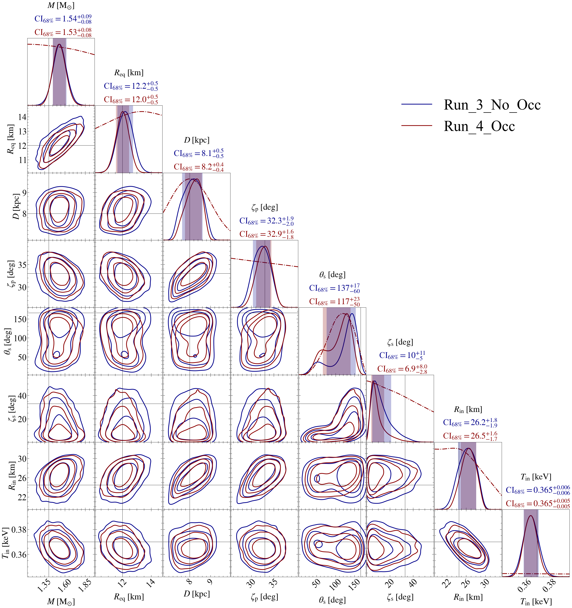
图注：Posterior distributions for Runs 3 and 4 listed in Table~\(\ref{tab:sampling_runs_AB},\) showing the eight key parameters. The definitions of all lines and shaded regions are the same as in Fig.~\(\ref{fig:run_2_corner}.\) The blue and red colours correspond to the sampling results obtained without and with disc occultation in the model, respectively (the data sets are created with disc occultation included).
对应解读：对应“热点靠近自转极的参数后验角图”和关键图表逐图导读中的图 4；也支撑模型拟合段落关于忽略盘遮挡导致参数偏差的讨论。
入选理由：这张图直接比较了用无遮挡模型和含盘遮挡模型拟合同一组含遮挡合成数据时的后验分布，且标出真值和68/95/99.7%可信区域。它最能检验日报强调的核心问题：极区热点情形下统计可接受的拟合是否仍会把M、R、倾角或热点几何推离真值。
来源与置信度：\(arxiv_source\)；high；\(arxiv_source\) / main.tex:figure[7]
Fig08
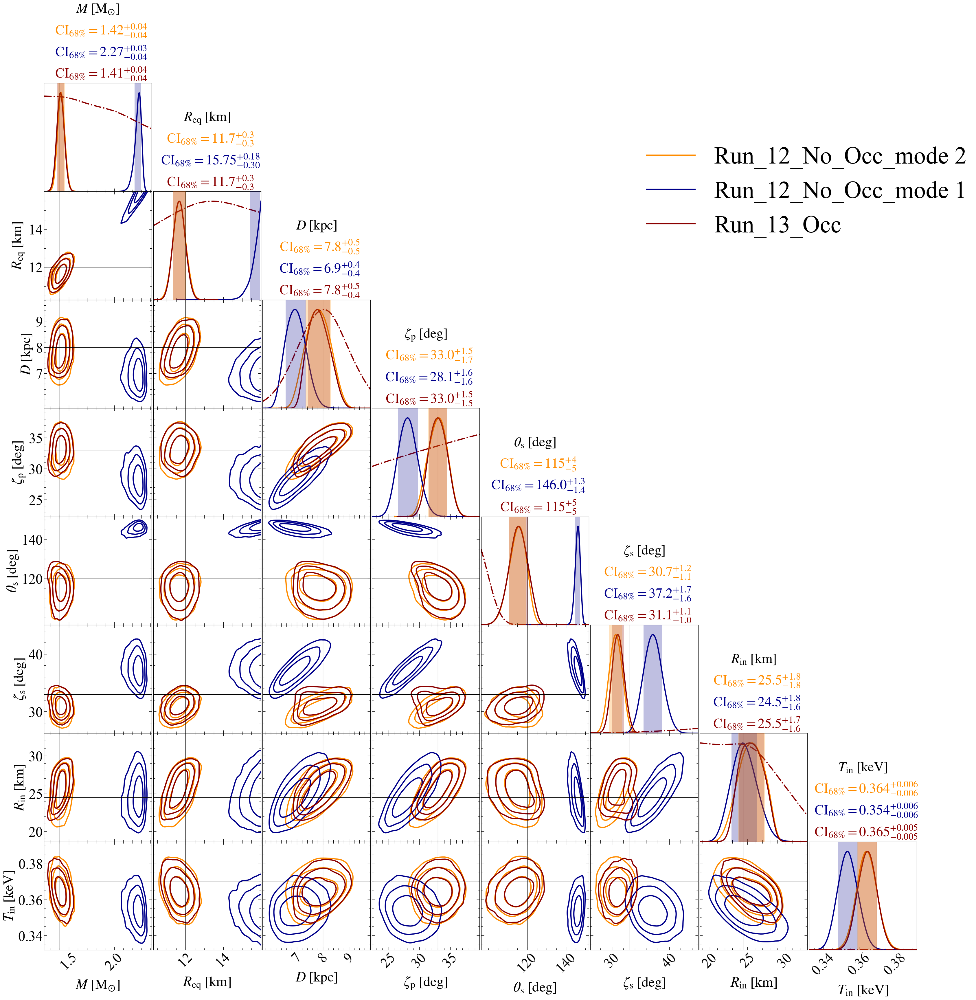
图注：Posterior distributions for Runs 12 and 13 listed in Table~\(\ref{tab:sampling_runs_AB}.\) The yellow and blue colours correspond to the two modes obtained using the model without disc occultation, while the red colour represents the single solution obtained with the disc occultation model. The datasets are generated with disc occultation included in both cases.
对应解读：对应“热点靠近赤道的参数后验角图”和关键图表逐图导读中的图 5；也对应关于无遮挡模型产生虚假后验模式的段落。
入选理由：该图展示了Runs 12和13的后验，并明确区分无遮挡模型得到的两个模式与含遮挡模型得到的单一解。它非常适合说明赤道热点案例与极区热点案例的差异，以及忽略盘遮挡时可能出现与真值分离但统计支持相近的伪后验峰。
来源与置信度：\(arxiv_source\)；high；\(arxiv_source\) / main.tex:figure[8]
Fig06
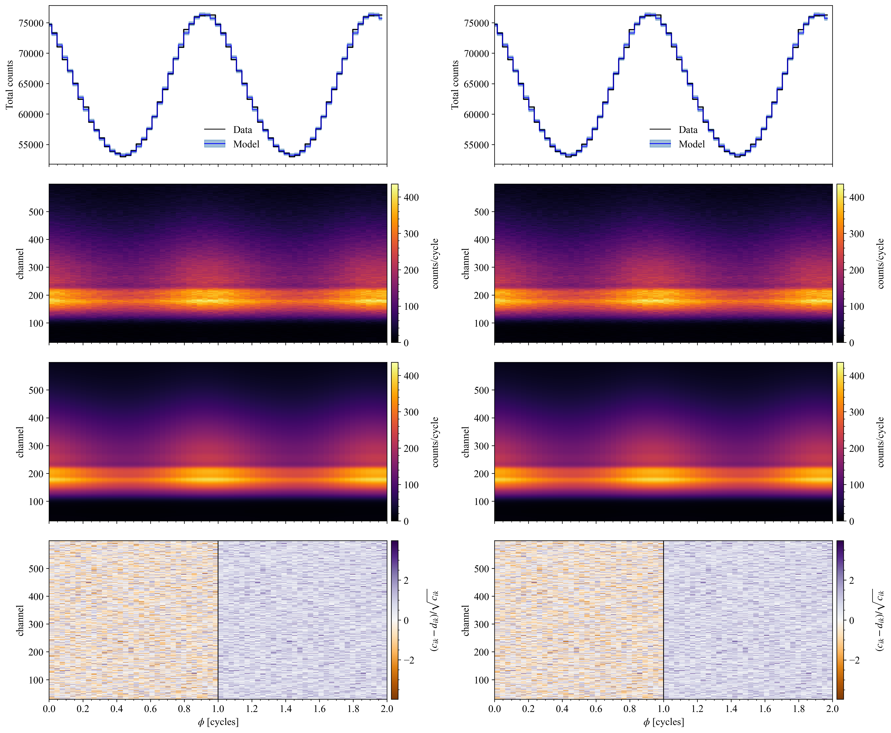
图注：Comparison of the synthetic data, posterior-expected pulse profiles, and the corresponding residuals for Scenario A. Run 3 and Run 4 are represented in the left and right columns, respectively. The top panels show the bolometric pulse profiles of the data and the posterior-expected model. The black curves represent the synthetic data, while the blue shaded regions correspond to the 16–84 per cent credible intervals of the posterior distribution. The second and third rows present the synthetic data and the posterior model predictions, with the former including a Poisson realisation and the latter corresponding to the underlying model expectation. Both are shown with a colour scale indicating the total NICER counts per cycle in each phase–energy bin for a total exposure of 132 ks. The fourth row shows the normalized residuals, computed as $(c_{\rm ik} - d_{\rm ik}) / \sqrt{c_{\rm ik}}$, where $c_{\rm ik}$ denotes the posterior expected pulse profile and $d_{\rm ik}$ the data. Here, $i$ indexes the energy channels and $k$ indexes the phase bins.
对应解读：对应“含遮挡模型与无遮挡模型的残差图”“后验预测检验图”，以及关键图表逐图导读中关于相位—能量二维计数和残差结构的图 3。
入选理由：这张图同时给出合成数据、后验期望脉冲轮廓、相位—能量二维计数图和标准化残差，正好用于判断忽略或加入盘遮挡后残差是否在特定相位和能道形成系统性结构，而不是只看总拟合优度。
来源与置信度：\(arxiv_source\)；high；\(arxiv_source\) / main.tex:figure[6]
Fig04
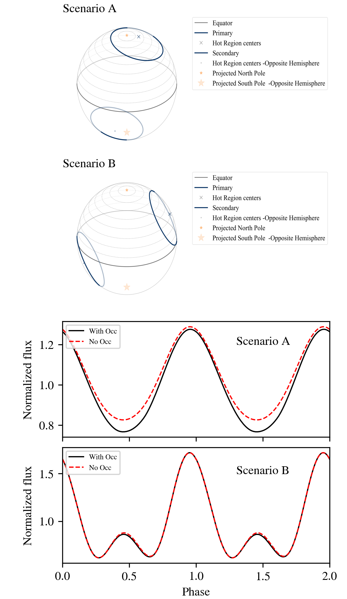
图注：Schematic illustrations of the hotspot geometries and the corresponding pulse profiles for Scenario A and Scenario B. The first and second rows show the hotspot geometries for Scenario A and Scenario B. In both cases, the hotspots are antipodal, lying close to the poles in Scenario A and near the equator in Scenario B. The line-of-sight vector is set to $(0, 1, 0.5)$ for clarity, with the $z$-axis aligned with the spin axis. The third and fourth rows show the corresponding normalized bolometric pulse profiles for two scenarios. The black solid and red dashed curves represent the cases with and without disc occultation, illustrating the impact of disc blocking.
对应解读：对应“不同倾角下的脉冲轮廓对比图”和关键图表逐图导读中的图 2，同时也连接极区热点与赤道热点两种构型的整体比较。
入选理由：该图把Scenario A极区热点和Scenario B赤道热点的几何示意与有/无盘遮挡的归一化脉冲轮廓放在一起，能直观看出盘遮挡如何改变峰形、低谷和相位结构，是理解后续参数后验差异的前置图。
来源与置信度：\(arxiv_source\)；high；\(arxiv_source\) / main.tex:figure[4]
Fig03
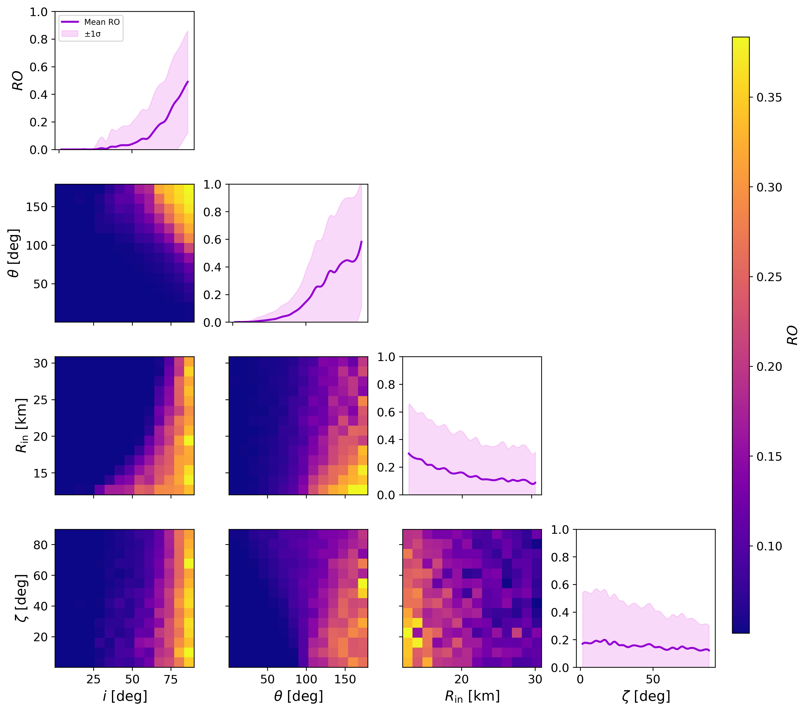
图注：Mean relative obscuration fraction as a function of the inclination angle $i$, the hotspot colatitude $\theta$, the inner disc radius $R_{\rm in}$, and the hotspot angular radius $\zeta$, based on $20000$ uniformly sampled points. The colour scale shows the relative obscuration fraction.
对应解读：对应“盘遮挡为何随倾角增强”的诊断，以及详细解读中关于遮挡主要由视线倾角控制的关键结果。
入选理由：这张图以颜色图形式给出平均相对遮挡比例随倾角i、热点共纬度θ、盘内缘半径R_in和热点角半径ζ的变化，直接量化了几何参数对遮挡强度的影响，比单纯脉冲轮廓更适合支撑“倾角是主控量”的结论。
来源与置信度：\(arxiv_source\)；high；\(arxiv_source\) / main.tex:figure[3]
Fig01
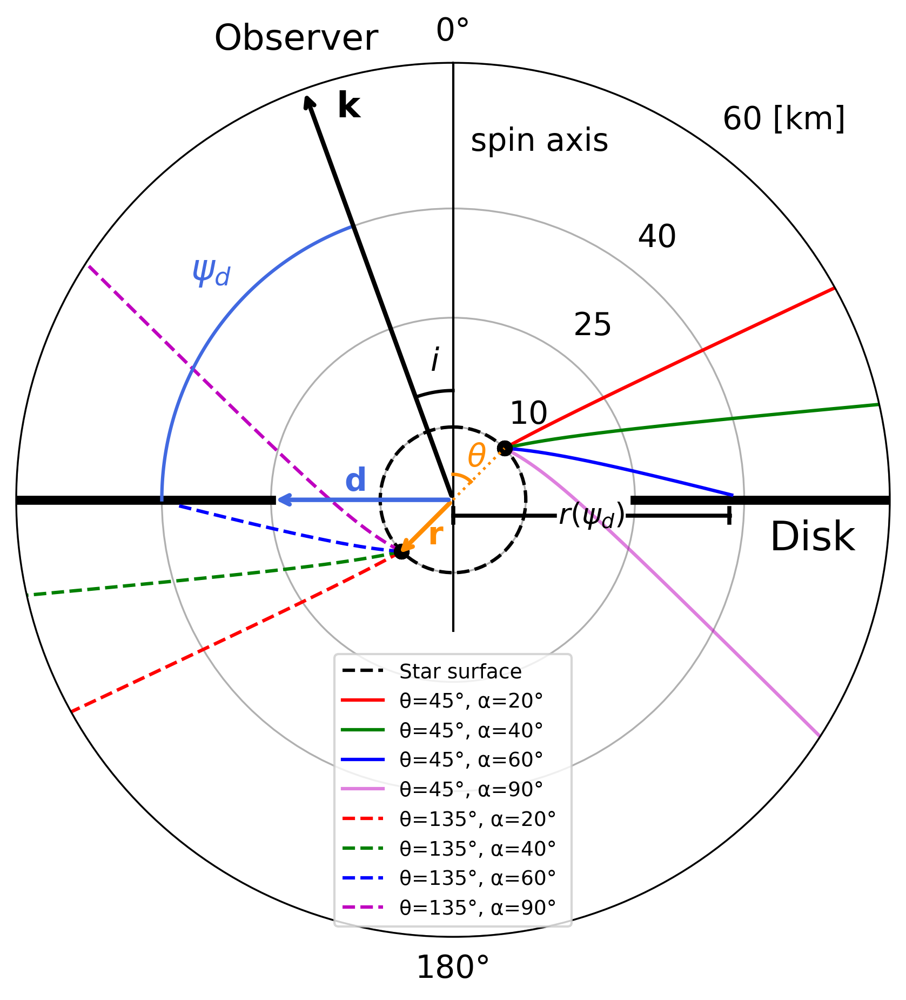
图注：Schematic illustration of ray trajectories under disc occultation. Some rays pass through the region interior to the inner disc radius $R_{\rm in}$ ($\alpha = 90\degr$), while others are blocked by the disc ($\alpha = 60\degr$). The remaining rays propagate directly to infinity without intersecting the disc. All vectors indicate directions only; their lengths are used for visualization, while physically they are unit vectors. Note that this is a two-dimensional schematic: the observer, the spin axis, and the vector $\mathbfit{d}$ are projected onto the plane of the figure and may not be coplanar in three dimensions. Each ray corresponds to a specific value of $r(\psi_d)$; the annotation of $r(\psi_d)$ in the figure highlights only the case with $\alpha = 60\degr$.
对应解读：对应“盘遮挡几何示意图”和关键图表逐图导读中的图 1。
入选理由：该图说明射线何时穿过盘内缘以内、何时被盘阻挡、何时直接到达无穷远，有助于读者理解X-PSI中新增盘遮挡判据的几何基础。虽然它不是参数推断结果，但对解释后续轮廓和残差变化很必要。
来源与置信度：\(arxiv_source\)；high；\(arxiv_source\) / main.tex:figure[1]
强相关工作
这项工作应放在两条文献线索中理解。第一条是 \(\mathrm{NICER}\) 脉冲轮廓建模对旋转供能毫秒脉冲星的质量—半径约束，包括 \(\mathrm{PSR\ J0030+0451}\) 和 \(\mathrm{PSR\ J0740+6620}\) 的系列论文。这些工作证明了相对论脉冲轮廓建模的可行性，但其源环境比吸积毫秒脉冲星干净。检索关键词可用 “NICER pulse profile modeling neutron star radius X-PSI”, “PSR J0030+0451 mass radius”, “PSR J0740+6620 NICER”.
第二条是吸积毫秒脉冲星和低质量 \(X\) 射线双星的脉冲形成、盘—磁层相互作用、倾角约束和吸积几何研究。本文与这些工作的关系不是重复观测某个同一事件，而是为同类源的未来半径推断建立几何系统误差模型。应检索 “accreting millisecond pulsar pulse profile modelling”, “disc occultation X-ray pulsations”, “SAX J1808.4-3658 pulse profile”, “XTE J1814-338 waveform modelling”。
可能存在的张力在于：一些早期吸积毫秒脉冲星波形建模可能采用较简化环境，或把非热点成分作为背景/归一化处理；本文提示这种做法在高倾角和特定热点几何下可能低估系统误差。相反观点可能认为真实盘内缘远离星面、盘厚度小或源倾角低时遮挡可忽略；本文结果其实支持这种条件性判断，即遮挡不是所有系统都强，但必须在参数推断中显式检验。
同一事件 / 同类源线索：
- https://arxiv.org/abs/2606.14493
- https://arxiv.org/pdf/2606.14493
- https://heasarc.gsfc.nasa.gov/docs/nicer/
相似工作：
- https://arxiv.org/abs/1908.03092
- https://arxiv.org/abs/1908.03122
- https://arxiv.org/abs/2105.06979
- https://arxiv.org/abs/2105.06980
基础理论 / 方法工作：
相反观点 / 张力线索：
（未提供）
8. Multiwavelength Analysis of the Einstein Probe X-ray Transient EP240305a
- 来源：arXiv / astro-ph.HE
- 链接：https://arxiv.org/abs/2606.14341v1
- 作者：Ruican Ma, Ye Li, Lian Tao, Tao An, Ailing Wang, Arne Rau, Roberto Soria, Huaqing Cheng
- 评分：novelty 8/10，importance 7/10，relevance 8/10，final 8.65/10
- 推荐理由：Einstein Probe发现的未编目X射线暂现源多波段跟进，可能类似gamma-ray-dark GRB、离轴或choked jet事件；对高能暂现源和喷流物理有较高相关性。
中文题目：爱因斯坦探针 X 射线暂现源 EP240305a 的多波段分析
做了什么：这篇论文报告了爱因斯坦探针在 2024 年 3 月 5 日发现的未编目 X 射线暂现源 EP240305a，并把 X 射线、光学、近红外和射电后随观测拼成一条物理证据链。源在软 X 射线中出现两个持续约 \(100\)--\(250\,\mathrm{s}\) 的显著耀发，随后数日内快速衰减；光学和近红外只给出一个很暗的候选对应体；射电则在约两个月内从自吸收谱演化到光学薄谱，提示一次离散喷流抛射。作者排除了若干常见长时标暂现源解释，例如喷流潮汐瓦解事件和典型 X 射线双星，也认为普通恒星耀发难以同时解释 X 射线和射电性质。由于没有光谱红移，结论仍带有分类不确定性，但 EP240305a 最像一类 \(\gamma\) 射线暗的类伽马暴暂现源，可能来自离轴相对论喷流或闷塞喷流。
为什么重要：EP240305a 重要之处不在于单个波段特别亮，而在于它展示了宽视场软 X 射线巡天能够发现传统 \(\gamma\) 射线触发器、光学巡天或射电巡天都不容易优先选中的暂现源。若这类事件确实与离轴喷流、闷塞喷流或低亮度伽马暴有关，它们会直接影响我们对相对论喷流发生率、开角分布、辐射效率和失败喷流比例的估计。
理论 / 观测 / 仪器方法价值：对观测而言，论文给出了一个从 X 射线触发到光学/近红外定位再到射电谱演化的完整案例，说明快速、多设施后随对未分类暂现源的必要性。对理论而言，EP240305a 迫使模型同时解释短时标软 X 射线耀发、数日级衰减、暗弱光学对应体和月尺度射电自吸收转变，这比单波段分类更有约束力。对方法而言，论文展示了如何用多波段排除法而非单一模板拟合来识别异常暂现源。
为什么应该关注：如果你关心高能暂现源、相对论喷流或未来宽视场 X 射线巡天，EP240305a 是一个值得跟踪的样本：它可能代表一批过去被漏掉的 \(\gamma\) 射线暗喷流事件。即使最终分类改变，这个案例也会帮助定义爱因斯坦探针时代的暂现源筛选流程、后随优先级和多波段诊断标准。
展开详细解读：文章讲解、背景、理论、重点章节、图表与相关工作
文章详细讲解
科学问题：EP240305a 的核心问题是，一个没有已知目录对应体、由爱因斯坦探针在软 X 射线中触发的短时标暂现源，究竟属于哪一类天体爆发现象。它不像经典长伽马暴那样有明确 \(\gamma\) 射线触发和明亮余辉，也不像常规 X 射线双星那样在较长时标上重复活动或保持较强的盘辐射；同时，后期射电谱演化又强烈暗示有非热电子和外流。论文实际处理的是一个分类难题：在没有光谱红移、没有宿主星系清晰确认、没有高能 \(\gamma\) 射线探测的情况下，怎样用时间尺度、谱形和多波段能量学来约束物理起源。
作者怎么做：作者整理了爱因斯坦探针触发时的软 X 射线光变和后续 X 射线观测，识别出两个持续约 \(100\)--\(250\,\mathrm{s}\) 的显著耀发，并跟踪了随后几天的快速衰减。他们又加入光学与近红外成像，寻找候选对应体并给出亮度限制或暗弱候选源的测光结果。最关键的是射电后随：论文报告了源在数周到两个月尺度上的射电谱演化，从低频受自吸收抑制的状态过渡到更接近光学薄的非热谱，这一行为通常需要膨胀的同步辐射等离子体或离散喷流团块。
关键结果：多波段比较显示，EP240305a 很难被长时标喷流潮汐瓦解事件解释，因为后者通常有更长的 X 射线持续活动、不同的宿主环境和更慢的能量释放演化；也不太像典型 X 射线双星爆发，因为缺乏已知银河对应体、没有常见双星爆发的持续盘态演化，并且 X 射线耀发时标过短。恒星耀发可产生短软 X 射线爆发，但很难自然给出论文所见的月尺度射电谱从自吸收到光学薄的演化。作者因此把 EP240305a 放到 \(\gamma\) 射线暗类伽马暴暂现源的语境中，特别是离轴喷流或闷塞喷流：喷流本身存在，但高能 \(\gamma\) 射线可能因观测角、低洛伦兹因子或包层吸收而未被探测。
局限和下一步：论文的最大限制是没有光学光谱红移，因此所有能量、光度和尺寸推断都依赖假设距离或相对比较。候选光学/近红外对应体也很暗，宿主关联、星系环境和爆发位置偏移尚不能给出决定性约束。下一步最重要的是继续射电监测以确定谱峰频率、峰值通量和衰减律，获取更深的光学/近红外成像或光谱以确认宿主和红移，并把 EP240305a 与爱因斯坦探针后续发现的同类未编目暂现源组成统计样本。只有从单例走向样本，才能判断它是罕见异常个例，还是一类被过去巡天系统性漏掉的喷流暂现源。
关键结果是怎么做出来的
样本和数据选择方面，论文围绕一个明确触发事件 EP240305a 展开，而不是从大样本统计中筛选候选体。起点是 2024 年 3 月 5 日爱因斯坦探针对一个未编目软 X 射线暂现源的探测；作者随后纳入同一方向的 X 射线后随、光学/近红外成像和射电观测。关键选择标准是空间一致性、时间接近性和暂现行为：候选对应体必须位于 X 射线定位误差范围内或与其相容，并且其多波段性质不能被已知持久源目录简单解释。
X 射线证据链的核心是两个显著耀发及其快速衰减。论文摘要给出的耀发持续时间约为 \(100\)--\(250\,\mathrm{s}\)，这是排除许多长时标暂现源的重要量级。读者应重点检查 X 射线光变图中背景扣除、时间 bin 选择和耀发显著性的定义：若耀发显著性依赖很少的时间 bin 或背景估计，则分类会更脆弱；若在不同 binning 和不同能段中都稳健出现，则短时标引擎活动的证据更强。
射电结果是本文最有诊断力的部分。作者报告射电谱在约两个月内从自吸收状态演化到光学薄状态，这意味着早期谱峰处于观测频段附近或以上，后期峰频率下移，符合膨胀同步辐射源的常见行为。读者应关注射电多频测光表和谱能分布图：低频端是否呈上升谱、高频端是否转为下降谱、谱峰是否随时间单调下移，以及不同望远镜的通量标定是否一致。这些细节决定了“离散喷流抛射”是否是必需解释，而不是普通背景活动星系的慢变。
模型比较并不是单一的贝叶斯分类器，而更像多波段排除法。作者把 EP240305a 与喷流潮汐瓦解事件、X 射线双星、恒星耀发以及类伽马暴暂现源逐项比较，使用的判据包括时间尺度、峰值/衰减行为、光学暗弱程度、射电谱形和是否有已知对应体。由于红移未知，绝对能量和光度不能作为硬判据，因此论文更依赖无量纲或弱距离依赖的特征，例如 X 射线衰减速度、射电谱形演化方向和跨波段相对亮度。
显著性和置信度方面，本文最应检查的是每个波段的探测可信度，而不是最终分类的形式显著性。X 射线耀发需要看源区与背景区计数、探测似然和定位误差；光学/近红外候选体需要看偶然重合概率、图像深度和是否有历史图像中的持久源；射电需要看多频点信噪比、通量误差、非同时性修正和成像残差。最终“类似 \(\gamma\) 射线暗类伽马暴”的结论应理解为在现有证据下的最优物理归类，而不是已经达到红移已知、宿主已确认的经典伽马暴余辉识别强度。
稳健性检验的重点应放在替代解释能否同时过关。若假设它是活动星系核耀发，需要解释为何软 X 射线短时标强烈、射电谱快速演化且缺少明显持久对应体；若假设它是银河恒星耀发，需要解释月尺度非热射电和暗弱近红外性质；若假设它是 X 射线双星，需要解释缺乏重复活动和典型双星状态转变。论文的价值正是在于把这些替代解释放在同一张多波段约束表中比较。
展开背景、理论、公式、模型、章节和图表导读
背景知识
EP240305a 属于高能暂现源中的“未编目、短时标、多波段异常”类型。过去几十年，高能暂现源分类很大程度依赖触发波段：\(\gamma\) 射线卫星触发的通常进入伽马暴体系，全天 X 射线监测触发的常被首先考虑为 X 射线双星或潮汐瓦解事件，光学巡天发现的则常按超新星、潮汐瓦解事件或快速蓝光暂现源处理。爱因斯坦探针的宽视场软 X 射线灵敏度改变了入口条件：它更容易抓到软 X 射线明亮、\(\gamma\) 射线暗弱或错过传统触发器的事件。
历史上，喷流类暂现源的典型参照物包括长伽马暴、短伽马暴、低亮度伽马暴、喷流潮汐瓦解事件和一些快速 X 射线暂现源。它们都可能产生非热同步辐射和射电余辉，但时间尺度、环境密度、能量预算和宿主类型差异很大。长伽马暴常与大质量恒星坍缩有关，喷流潮汐瓦解事件通常发生在星系核附近并持续更久，X 射线双星则位于银河系内或邻近星系且常有盘态演化。EP240305a 的困难在于它抓住了这些类别的部分特征，却不完整符合任何一个模板。
现在值得重新看这类问题，是因为宽视场 X 射线巡天和快速后随网络同时成熟。过去如果没有及时射电多频观测，一个短软 X 射线耀发可能会被当作孤立事件；如果没有 X 射线触发，后期暗弱射电源又很难从海量变量射电源中脱颖而出。EP240305a 显示，真正有物理诊断力的是从 \(10^2\,\mathrm{s}\) 到 \(10^7\,\mathrm{s}\) 的连续时间域覆盖，而不是某一次深曝光。
该领域常见误区之一是把“没有 \(\gamma\) 射线探测”等同于“不是伽马暴”。实际上，离轴喷流、低洛伦兹因子喷流、闷塞喷流或高能辐射效率很低的喷流都可能没有传统意义上的 \(\gamma\) 射线触发，却在 X 射线或射电中留下余辉式信号。另一个误区是把短时标 X 射线耀发简单归入恒星耀发；恒星耀发确实常见，但若伴随远超恒星磁活动常规尺度的非热射电演化，就必须重新评估距离、能量和源类型。
基础理论 / 方法脉络
从物理图像看，本文的核心是“短时标高能注入加上后期非热外流”。X 射线耀发反映中心引擎或内区耗散在 \(10^2\,\mathrm{s}\) 量级释放能量；射电谱演化则更像外流与周围介质相互作用后，由相对论或亚相对论电子在磁场中产生同步辐射。两者若来自同一事件，就要求能量注入既能在早期产生软 X 射线峰，又能在后期留下足够大的喷流或抛射物。
同步辐射的基本诊断是谱形。对于幂律电子分布 \(N(\gamma_e)\propto \gamma_e^{-p}\)，光学薄频段的通量通常满足 \(F_\nu\propto \nu^{-(p-1)/2}\)，而自吸收频段会呈上升谱。射电谱从自吸收到光学薄的演化，通常意味着源在膨胀、磁场减弱、光深下降，谱峰频率 \(\nu_p\) 随时间下移。这个行为比单个射电点更重要，因为它能区分爆发性抛射和普通持久射电源。
对 EP240305a 来说，红移未知是最大退化。观测到的通量 \(F_\nu\) 可以直接比较，但光度 \(L_\nu\)、总能量 \(E\)、源尺寸 \(R\) 和环境密度 \(n\) 都依赖 luminosity distance \(D_L\)。因此论文更强调相对性质，例如 X 射线衰减快慢、射电谱形变化、光学暗弱程度与已知类别模板的相容性。若未来获得红移，同一组数据可立即转换为能量学约束，并显著收紧分类。
观测方法上，X 射线部分关注时间分辨光变、定位和能谱或硬度；光学/近红外部分关注候选对应体、宿主关联和限制星等；射电部分关注多频通量、谱指数和谱峰迁移。常见系统误差包括 X 射线背景估计、定位误差导致的错误对应体、光学图像混淆和射电通量标定。对于这类单例论文，最重要的不是某一个模型拟合得很好，而是多个独立波段是否指向同一个爆发性外流图像。
公式与推导
第一步是把观测通量与本征光度联系起来。若源位于红移 \(z\)、光度距离为 \(D_L\)，某一频率处的谱光度可近似写为
这里 \(F_{\nu_{\rm obs}}\) 是观测谱通量密度，\(L_{\nu_{\rm em}}\) 是源静止系谱光度。EP240305a 没有红移，因此这一步主要说明为什么绝对能量学仍不确定。
第二步，用短时标限制辐射区尺度。若 X 射线耀发变化时间为 \(\Delta t_{\rm obs}\)，相对论多普勒因子为 \(\delta\)，则因果尺度满足
这里 \(R\) 是辐射区尺度，\(c\) 是光速。对 \(\Delta t_{\rm obs}\sim 100\)--\(250\,\mathrm{s}\) 的耀发，这给出一个非常紧凑或强相对论增亮的早期辐射区约束。
第三步，非热射电通常从电子能谱开始。设激波加速电子满足
其中 \(\gamma_e\) 是电子洛伦兹因子，\(p\) 是电子谱指数，\(K\) 是归一化，\(\gamma_m\) 是最小电子能量。光学薄同步辐射谱指数与 \(p\) 的关系为
因此射电后期光学薄谱斜率可反推 \(p\)，这是判断喷流余辉是否合理的基本检验。
第四步，自吸收谱峰提供源尺寸和磁场的组合约束。对均匀同步辐射源，可把谱形近似写成
其中 \(F_{\nu,p}\) 是峰值通量，\(\nu_p\) 是谱峰频率，\(s_1<0\) 和 \(s_2>0\) 分别描述峰值两侧的有效斜率，\(q\) 控制转折平滑度。对 EP240305a，关键观测不是单个 \(F_{\nu,p}\)，而是 \(\nu_p\) 随时间降低并进入光学薄状态。
第五步，若谱峰由同步自吸收控制，可用亮温作数量级检查：
其中 \(T_b\) 是亮温，\(k_B\) 是玻尔兹曼常数，\(\Omega\) 是源的角面积。若推得 \(T_b\) 过高，就需要相对论运动或更大的源尺寸；这也是离轴或相对论喷流解释常被考虑的原因。
第六步，余辉动力学可用能量守恒的量级式表示。外流扫过外部介质后，动能约满足
其中 \(E_k\) 是外流动能，\(\Gamma\) 是体洛伦兹因子，\(M_{\rm sw}\) 是扫掠质量，\(n\) 是外部数密度，\(m_p\) 是质子质量。射电峰值时间和衰减可约束 \(E_k\)、\(n\) 与观测角的组合。
第七步，分类比较可写成似然或证据比的语言。若模型 \(M_j\) 预测多波段数据 \(D\)，则
其中 \(F_i\) 是第 \(i\) 个通量测量，\(F_{i,\rm mod}\) 是模型值，\(\sigma_i\) 是误差，\(\boldsymbol{\theta}_j\) 是模型参数。本文没有把所有类别都做成严格同质的贝叶斯模型，但其排除逻辑等价于比较不同 \(M_j\) 是否能同时解释 X 射线、光学/近红外和射电。
第八步，若比较两个解释 \(M_a\) 与 \(M_b\)，可用信息准则表达模型复杂度惩罚：
其中 \(k_a\) 和 \(k_b\) 是参数数目。对 EP240305a 这类数据稀疏事件，严格 \(\Delta {\rm AIC}\) 可能不稳定，但这个公式提醒读者：一个能解释所有波段但需要过多特调参数的模型，并不一定比一个物理上自然的喷流模型更优。
模型拟合 / 应用方法
本文的拟合和模型判断可以分成三层。第一层是观测量提取：X 射线光变中的耀发持续时间、峰值通量和衰减率；光学/近红外候选体的测光或上限；射电多频点的通量密度和谱指数。这一层的统计问题相对直接，但对低信噪比数据非常敏感，特别是候选光学对应体和晚期射电点。
第二层是谱和光变的经验拟合。X 射线可用幂律衰减或分段衰减描述，射电可用带自吸收转折的谱模型描述。拟合量包括谱峰频率 \(\nu_p\)、峰值通量 \(F_{\nu,p}\)、光学薄谱指数 \(\beta\)、时间衰减指数以及不同观测历元之间的谱峰迁移。残差应重点看是否存在系统性偏离：例如低频点是否总是低于光学薄外推，高频点是否支持同一个电子谱指数。
第三层是物理类别比较。喷流潮汐瓦解事件、X 射线双星、恒星耀发和类伽马暴暂现源各自有不同的先验期望。潮汐瓦解事件通常有较长持续时间并与星系核相关；X 射线双星要求银河或邻近星系环境、盘态演化和可能的重复活动；恒星耀发要求可见恒星对应体和能量预算不过分；类伽马暴喷流则自然产生非热射电余辉，但需要解释 \(\gamma\) 射线缺失。由于红移未知，作者不能做唯一的能量学闭合，因此采用多波段一致性作为主要判据。
参数退化主要有三类。第一是距离退化：\(D_L\) 未知会让光度、能量和源尺寸估计整体漂移。第二是喷流几何退化：低本征能量的近轴事件、较高能量的离轴事件和闷塞喷流的软 X 射线外泄，在有限数据下可能产生相似的 X 射线/射电组合。第三是环境退化：较高外部密度可增强射电并改变峰值时间，较低密度则要求更高能量或更强相对论运动。
系统误差方面，X 射线背景和定位决定了早期触发的可靠性；光学/近红外的图像深度、银河消光和宿主混淆影响对应体解释；射电通量标定、阵列配置、源混淆和非同时多频观测影响谱形判断。实际应用中，这篇论文可作为后续 EP 暂现源分类的模板：先固定触发可靠性，再寻找跨波段对应体，最后用射电谱演化判断是否存在爆发性非热外流。
重点章节 / 结果段落怎么读
-
数据与发现部分应首先阅读。这里给出 EP240305a 的发现时间、定位、X 射线触发性质和后随观测安排。读者应确认它确实是未编目源，并注意定位误差如何传递到光学/近红外和射电对应体选择。
-
X 射线分析部分是早期能量释放的依据。重点看两个 \(100\)--\(250\,\mathrm{s}\) 耀发的光变、背景估计、显著性和后续数日衰减。若论文给出能谱或硬度比，也应检查谱是否随时间演化，因为这会影响恒星耀发、X 射线双星和喷流内耗散之间的比较。
-
光学与近红外部分主要提供对应体和红移限制的缺口。读者应关注候选对应体的星等、颜色、是否在历史图像中存在、与 X 射线/射电位置的偏移，以及是否可能是宿主星系而非爆发本身。没有光谱红移是全文结论保持谨慎的主要原因。
-
射电分析部分是判断离散喷流抛射的关键。应重点读多历元、多频通量表和谱能分布拟合，确认从自吸收到光学薄的演化是否由数据直接支持，而不是由稀疏采样外推得到。
-
讨论和分类比较部分应作为证据矩阵来读。不要只看作者最后偏好的 \(\gamma\) 射线暗类伽马暴解释，而要逐项检查他们排除喷流潮汐瓦解事件、X 射线双星和恒星耀发的理由是否依赖红移、宿主关联或某个不稳健的观测点。
建议重点查看的图表
-
X 射线发现光变图：看两个耀发的时间宽度、峰值信噪比、背景水平和不同时间 bin 下是否稳健。
-
X 射线长期衰减图：看后随几天内通量下降的斜率、误差条和上限，判断是否明显短于潮汐瓦解事件或 X 射线双星典型时标。
-
定位与多波段对应体图：看 X 射线误差圈、光学/近红外候选体、射电位置之间的相对偏移，以及是否存在多个可能对应体。
-
光学/近红外测光或上限表：看候选体亮度、颜色、观测时间和深度，判断暗弱对应体是否与类伽马暴余辉或宿主星系相容。
-
射电多频谱图：看早期是否低频被压低、高频较亮，后期是否转为光学薄下降谱，这是离散喷流抛射的核心证据。
-
射电光变图：看不同频率峰值是否存在时间延迟，低频峰是否晚于高频峰，是否符合自吸收频率下移。
-
类别比较表或参数对比图：看 EP240305a 与喷流潮汐瓦解事件、X 射线双星、恒星耀发、伽马暴样本在时间尺度和跨波段亮度上的相对位置。
关键图表逐图导读
图 1：建议首先看发现和定位图。横轴若是时间，应以 EP 触发时刻为零点；纵轴通常是计数率或通量。数据点显示软 X 射线随时间的快速变化，背景水平或阴影区决定耀发显著性。读图陷阱是不要把时间 bin 造成的平滑误认为真实持续时间，最好同时查看原始 binning 和重分箱结果。
图 2：X 射线后随衰减图通常以触发后时间为横轴、通量或 luminosity proxy 为纵轴，并可能采用对数坐标。模型线若是幂律衰减，应关注斜率和早晚期残差。主要结论是 EP240305a 在数日内迅速变暗，这不利于许多长时标引擎模型。陷阱是红移未知时不要直接把纵轴与某个已知事件的绝对光度等同。
图 3：多波段寻找图或 finding chart 应显示 X 射线误差圈、光学/近红外源和射电位置。坐标轴通常是赤经和赤纬，或天球投影。应检查候选体是否位于误差圈中心、是否有邻近混淆源，以及射电位置是否能显著缩小对应体范围。陷阱是把误差圈内最亮源自动当作宿主，尤其在深场中偶然重合概率并不总是可忽略。
图 4：射电谱能分布图是全文关键图之一。横轴是频率 \(\nu\)，纵轴是通量密度 \(F_\nu\)，不同颜色或符号代表不同观测历元。早期自吸收状态应表现为低频端上升或被压低、在某频率附近转折；后期光学薄状态应更接近单一下降幂律。模型线的峰值移动方向比单个点的拟合优度更重要。
图 5：射电光变图若存在，应以触发后时间为横轴、不同频率 \(F_\nu\) 为纵轴。离散抛射的典型信号是高频较早达到峰值，低频因自吸收较晚变亮。陷阱是非同时观测会把谱演化和光变混在一起，因此应查看各频率观测时间是否足够接近。
图 6：类别比较图或表应把 EP240305a 放在已知暂现源参数空间中，例如持续时间、X 射线峰值通量、光学亮度、射电亮度或谱演化时标。读者应关注 EP240305a 是否真正落在某一类样本云团内，还是位于多个类别之间。若误差条或距离假设范围很大，分类结论应按“偏好”而非“定论”理解。
论文原图 / 可嵌入图片
Fig01
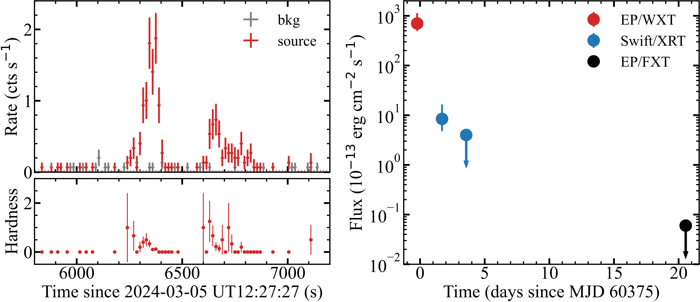
图注：Top left panel: \(\textit{EP}/WXT\) count rate for EP240305a in the 0.5--4 keV energy band with 15\,s time bins. The source is shown in red and the background is in gray. Two notable flares are evident. Bottom left panel: Hardness ratio ((2--4)\,keV/(0.5--2)\,keV) of the two flares. Right panel: Unabsorbed flux of EP240305a in the 0.5--10 keV energy band, as observed by \(\textit{EP}/WXT\) in red, \(\textit{Swift}/XRT\) in blue, and \(\textit{EP}/FXT\) in black.
对应解读：建议重点查看的图表 1、2；关键图表逐图导读中的图 1 和图 2；模型拟合中 X 射线耀发持续时间、峰值通量和衰减率。
入选理由：该图同时给出 EP/WXT 0.5--4 keV 发现光变、背景、两个耀发、硬度比，以及 EP/WXT、Swift/XRT、EP/FXT 的 0.5--10 keV 后随通量演化，直接支撑日报中关于短时标耀发和数日内快速衰减的核心判断。相比单独的谱图或寻找图，它是确认暂现源触发可靠性和排除长时标模型的首要证据。
来源与置信度：\(arxiv_source\)；high；\(arxiv_source\) / \(mnras_manuscript_arxiv.tex\):figure[1]
Fig05
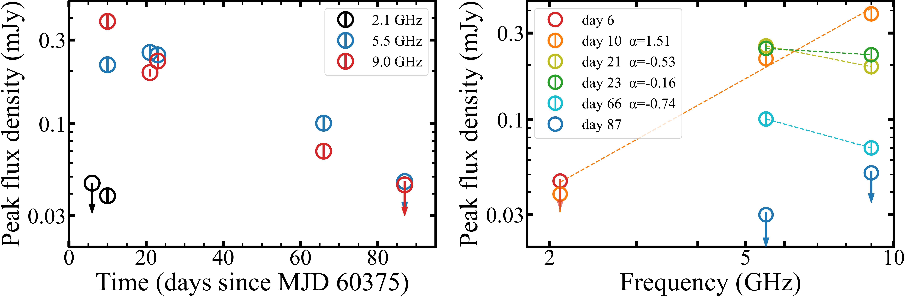
图注：Left panel: Temporal evolution of flux density observed with ATCA at three distinct frequencies (2.1\,GHz, 5.5\,GHz, and 9.0\,GHz) over the period from March to June, 2024. Right panel: Flux density as a function of frequency for multiple epochs, with spectral indices ($\alpha$) derived from ATCA observations annotated for selected dates.
对应解读：建议重点查看的图表 5、6；关键图表逐图导读中的图 4 和图 5；模型拟合中射电自吸收转折、谱指数、谱峰迁移和离散喷流判断。
入选理由：该图左面板是 2.1、5.5、9.0 GHz 射电光变，右面板是多历元射电频谱并标注谱指数，正好对应日报强调的从自吸收到光学薄状态的谱演化以及不同频率光变行为。这是论文支持非热外流或离散喷流抛射的最关键图，比其他多波段图更直接决定物理解释。
来源与置信度：\(arxiv_source\)；high；\(arxiv_source\) / \(mnras_manuscript_arxiv.tex\):figure[5]
Fig03
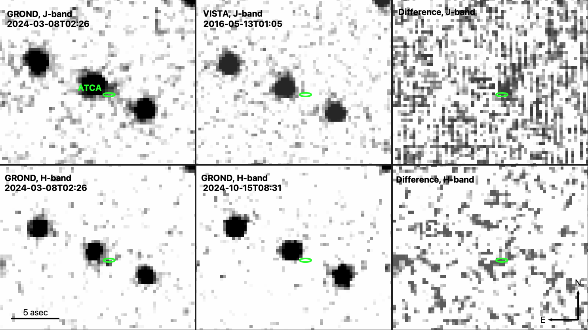
图注：$J$-band (top row) and $H$-band (bottom row) counterpart analysis. The left and middle columns show the \(\textit{GROND}\) images obtained on 2024-03-08 (MJD=60377) and the aligned reference images (VISTA, 2016-05-13 (MJD=57519) for $J$-band; \(\textit{GROND},\) 2024-10-15 (MJD=60598) for H-band), respectively. The right column shows the resulting difference images. The green ellipse indicates the position of the 9\,GHz ATCA radio detection, as observed on MJD=60398 with its uncertainty increased by a factor of 10 in both coordinates to enhance visibility. Signatures of a candidate counterpart are detected in $J$ and $H$, although with a positional offset from each other. See text for more details.
对应解读：建议重点查看的图表 3、4；关键图表逐图导读中的图 3；系统误差中光学/近红外深度、宿主混淆和射电位置关联。
入选理由：该图展示 J、H 波段原图、参考图和差分图，并用绿色椭圆标出 ATCA 射电探测位置，直接对应日报中要求检查近红外候选体、射电位置和可能偏移的内容。它对判断暗弱对应体是否真实、是否与射电源一致以及是否存在宿主混淆非常重要。
来源与置信度：\(arxiv_source\)；high；\(arxiv_source\) / \(mnras_manuscript_arxiv.tex\):figure[3]
Fig02
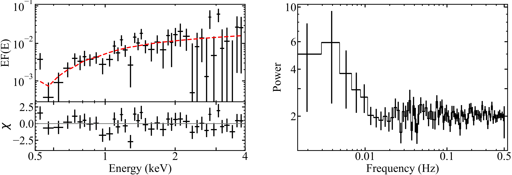
图注：Left panel: The \(\textit{EP}/WXT\) spectrum of EP240305a in the 0.5--4\,keV energy band. The data are best fitted with an absorbed \(\texttt{powerlaw}\) model, shown as a red dashed line. The residuals from the best-fit model are displayed in the lower subpanel. Right panel: PDS of EP240305a in the 0.5--4\,keV energy band using \(\textit{EP}/WXT\) data.
对应解读：模型拟合中 X 射线谱拟合、absorbed powerlaw 模型、残差和短时标 X 射线诊断；也补充关键图表逐图导读中对耀发显著性与谱性质的检查。
入选理由：该图给出 EP/WXT X 射线能谱、吸收幂律最佳拟合和残差，并包含功率密度谱，可用于检查 X 射线辐射是否可由简单非热谱描述以及拟合是否存在系统偏离。虽然日报重点更偏向光变和多波段对应体，但该图是验证 X 射线观测量提取和模型假设的重要补充。
来源与置信度：\(arxiv_source\)；high；\(arxiv_source\) / \(mnras_manuscript_arxiv.tex\):figure[2]
Fig04
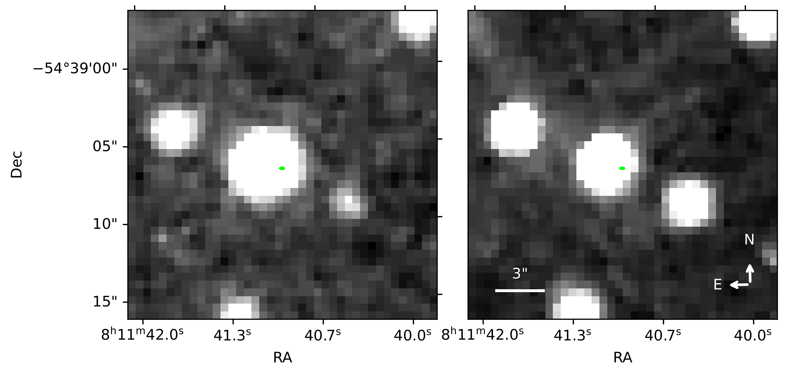
图注：SVOM/VT observations in the $B$ (left) and $R$ (right) bands. The green dot marks the ATCA position of EP240305a.
对应解读：建议重点查看的图表 3、4；关键图表逐图导读中的多波段 finding chart；系统误差中光学成像深度和对应体解释。
入选理由：该图展示 SVOM/VT 的 B、R 波段图像并标出 ATCA 位置，可补充光学对应体搜索和上限/暗弱候选体讨论。它的信息量低于近红外差分图 Fig03，但对确认光学波段是否存在明显对应体、是否有邻近混淆源仍有嵌入价值。
来源与置信度：\(arxiv_source\)；high；\(arxiv_source\) / \(mnras_manuscript_arxiv.tex\):figure[4]
Fig06
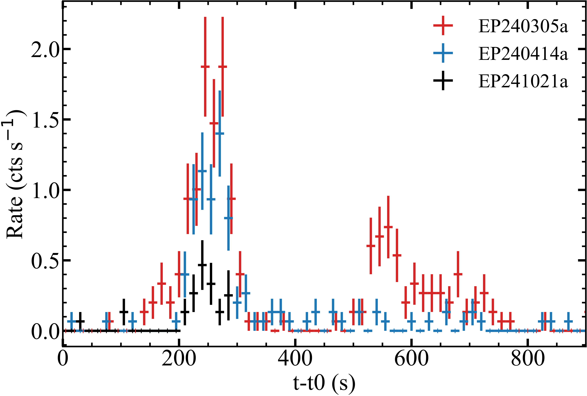
图注：Comparison of the \(\textit{EP}/WXT\) X-ray flares of EP240305a, EP240414a, and EP241021a in the 0.5--4\,keV band. The time axis for each flare has been normalized to a zero point.
对应解读：建议重点查看的图表 7；关键图表逐图导读中的类别比较图或参数对比；详细解读中与其他 Einstein Probe 未编目暂现源组成样本的讨论。
入选理由：该图比较 EP240305a、EP240414a 和 EP241021a 的 WXT X 射线耀发形态，能支持日报中关于 EP240305a 是否属于一类 Einstein Probe 发现的短时标软 X 射线暂现源的讨论。不过它只比较 EP 暂现源的 X 射线耀发，并非完整的 TDE、XRB、恒星耀发和 GRB 参数空间比较，因此优先级低于直接展示本源多波段证据的图。
来源与置信度：\(arxiv_source\)；high；\(arxiv_source\) / \(mnras_manuscript_arxiv.tex\):figure[6]
强相关工作
与 EP240305a 最接近的同类研究应从三条线索检索。第一条是爱因斯坦探针发现的未编目 X 射线暂现源和快速 X 射线暂现源，可用关键词 “Einstein Probe X-ray transient”, “EP transient”, “uncatalogued X-ray transient”, “fast X-ray transient multiwavelength follow-up”。这些工作能告诉我们 EP240305a 是否是孤立异常，还是 EP 发现的新样本族的一员。
第二条是 \(\gamma\) 射线暗或离轴喷流事件。可检索 “gamma-ray dark GRB”, “orphan afterglow”, “off-axis jet”, “choked jet X-ray transient”, “low-luminosity GRB radio afterglow”。GW170817/GRB 170817A 是离轴喷流和结构化喷流的原型案例，但它有引力波触发和明确距离；EP240305a 没有这些优势，因此只能借用物理图像和观测诊断，而不能直接类比能量尺度。
第三条是替代解释的比较样本，包括 Swift J1644+57 这类喷流潮汐瓦解事件、银河 X 射线双星爆发和强恒星耀发。检索关键词可用 “jetted tidal disruption event radio X-ray”, “X-ray binary radio flare state transition”, “stellar flare radio X-ray transient”。这些文献有助于判断作者排除法是否充分，特别是哪些类别在时间尺度或射电谱演化上存在重叠。
同一事件 / 同类源线索：
相似工作：
基础理论 / 方法工作：
- https://arxiv.org/abs/astro-ph/9712005
- https://arxiv.org/abs/astro-ph/0108027
- https://arxiv.org/abs/astro-ph/9901236
相反观点 / 张力线索：
说明
评分由 LLM 给出初评，再由本地阈值策略过滤；IACT、TeV 伽马射线和高能中微子天文学按重点方向处理。